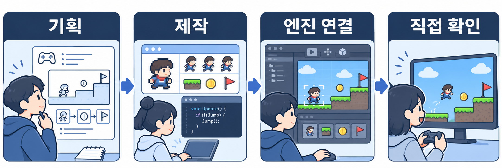
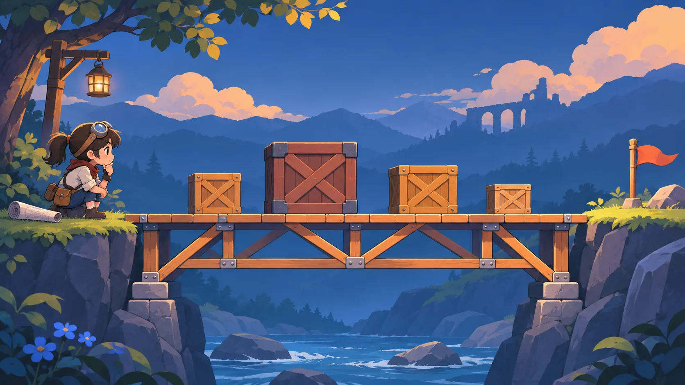
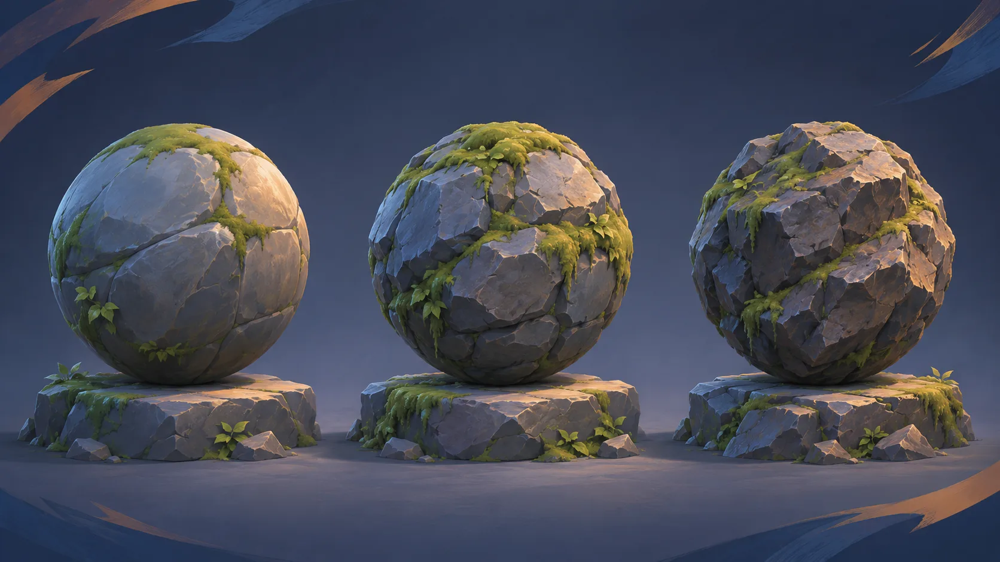

Terrain3D 설치·기본 사용·텍스처 준비 튜토리얼
영상 원문 · 공식 문서의 embed를 확인. 일부 저장 설정은 구버전이라고 공식 문서가 경고. 전체 시청 미실시.
2026년 11월 7일 · 확인일 기준
이번 호는 공식 출처와 학습 제안을 구분해요. 10월 31일 호의 생성 도구·엔진 연결 안내와 비교해 이번 호는 물리·지형 등 사용자 지정 기반 기술과 루키스 조건에 초점을 맞췄어요. 채용 공고 수를 시장 전체 추세로 비교하지 않았어요.
이 리포트는 공식 자료에서 확인한 사실과 편집자가 제안한 실습을 구분해요. 처음 읽는다면 상단 요약에서 관심 있는 작업을 고르고 해당 본문으로 이동하세요. 표의 확인일과 직접 실행 여부를 함께 읽으면 자료를 어디까지 믿고 적용할지 판단할 수 있어요. 영상 전체 시청, 도구 빌드, 게임 플레이를 하지 않은 항목은 그 한계를 표시해요. 이번 호의 지정 도구와 과정은 학습 자료이며 모든 도구를 설치하거나 모든 과정에 지원하라는 뜻은 아니에요.
요약에서 작업을 고르고 본문에서 입력·출력·조건을 확인한 뒤 작은 실습 하나를 계획해요.
실습 제안을 완료된 제작 결과로 읽지 않아요.
편집 안내이며 새 사실이나 성과 주장 없음.
이번 호는 AI로 만든 결과물을 게임 엔진 안에서 확인하는 데 초점을 맞췄어요. 높이맵 지형과 파낼 수 있는 복셀 지형의 차이, 노드로 만드는 재질, 충돌과 길찾기처럼 서로 다른 작업을 나눠 살펴봐요. 처음 시작한다면 열 도구를 모두 설치하지 말고 지금 막힌 작업 하나에 해당하는 자료를 골라 보세요.
사용자 지정 자료 49개를 추가 조사했어요. Unity CLI·에이전트 연동, 픽셀 리소스 도구와 제작 영상은 출처 장의 지정 자료 목록에서 게임 적용·라이선스·실습과 함께 찾아볼 수 있어요.
관심 있는 작업 하나와 현재 엔진 버전을 적고 해당 도구 카드로 이동하세요. 루키스 과정이 궁금하다면 진로 표에서 지정 두 과정과 수료 조건, 비용과 자격을 함께 확인하세요.
자료의 확인일과 도구의 대상 엔진 버전을 살펴본 뒤 자신의 프로젝트에 맞는지 판단하세요.
원문: Terrain3D 공식 저장소 · Voxel Tools 공식 저장소 · Material Maker 공식 저장소 · 루키스 KDC 공식 과정 안내
도구를 직접 빌드하거나 게임을 플레이하지 않았고, 소개한 영상을 끝까지 시청하지 않았어요.
성능 순위가 아닌 사용자 지정 학습 목록이에요.
절차적 재질·텍스처 학습을 위한 사용자 지정 기반 자료예요.
돌 재질의 색과 거칠기를 비교하세요.
공식 저장소 · 확인일 2026-11-07 · 실제 실행 미실시
이동 가능 영역과 길찾기 학습을 위한 사용자 지정 기반 자료예요.
좁은 문의 통과 영역을 확인하세요.
공식 저장소 · 확인일 2026-11-07 · 실제 실행 미실시
순위는 성능 우열이 아니라 작업을 고르는 안내예요. 지형을 편집하려면 Terrain3D, 지형을 파거나 쌓으려면 Voxel Tools를 먼저 비교하세요. 재질을 만들려면 Material Maker, 피격 효과를 조절하려면 Effekseer가 출발점이에요.
Jolt Physics·Recast Navigation·ozz-animation은 각각 물리·길찾기·애니메이션에 해당하므로 기능을 하나로 혼동하지 마세요. The Forge·meshoptimizer·FastNoise2는 렌더링 기반·메시 처리·노이즈 생성이라는 서로 다른 문제를 다뤄요.
| 도구 | 선정 이유 | 학생이 할 일 | 도입 부담 | 자료 유형·확인일 | 한계 | 공식 원문 |
|---|---|---|---|---|---|---|
| Jolt Physics | 충돌과 물체 움직임을 분리해 관찰하기 좋아요. | 마찰 하나만 바꿔 같은 상자의 움직임을 비교해요. | C++ 라이브러리 연결. 엔진별 통합 방법은 별도 확인 | 공식 README · 2026-11-07 | MIT. 시연 자산과 외부 구성요소 조건은 별도 확인 · 직접 실행 미실시 | 공식 원문 |
| Terrain3D | 높이맵 지형을 Godot 장면에 연결하는 과정을 배워요. | 작은 경사면을 만들고 캐릭터가 지면을 뚫지 않는지 확인해요. | Godot 4 GDExtension 애드온. 설치 문서의 버전 확인 | 공식 README · 2026-11-07 | MIT. 공식 튜토리얼 일부 설정은 구버전 · 직접 실행 미실시 | 공식 원문 |
| Material Maker | 노드로 재질을 만들고 엔진에 가져가는 흐름을 배워요. | 색만 바꾼 두 재질을 같은 조명에서 비교해요. | 별도 저작 도구에서 제작한 뒤 엔진의 재질에 연결 | 공식 README · 2026-11-07 | 기본 MIT. 별도 표시 파일과 입력 자산 권리 확인 · 직접 실행 미실시 | 공식 원문 |
| Effekseer | 효과 편집과 게임 재생을 나눠 확인해요. | 밝은 배경과 어두운 배경에서 같은 피격 효과를 비교해요. | 편집기와 엔진용 런타임/플러그인 버전 함께 확인 | 공식 README · 2026-11-07 | 공식 README는 개발 브랜치의 실서비스 사용을 경고 · 직접 실행 미실시 | 공식 원문 |
| Voxel Tools | 터널처럼 높이맵과 다른 지형 구조를 시험해요. | 터널을 파고 저장한 뒤 다시 열어 지형과 충돌을 확인해요. | Godot 4 모듈/확장. 설치 방식과 저장 경로 확인 | 공식 README · 2026-11-07 | 높이맵과 달리 돌출부·터널 지원. 설치/저장/길찾기는 별도 단계 · 직접 실행 미실시 | 공식 원문 |
| Recast Navigation | 이동 가능 영역 생성과 경로 탐색을 구분해요. | 캐릭터 반지름만 바꾸고 좁은 문 통과 경로를 비교해요. | Recast는 영역 생성, Detour는 로딩·경로 질의 | 공식 README · 2026-11-07 | Zlib. 정적 단일 메시와 동적 타일 메시의 통합 부담 구분 · 직접 실행 미실시 | 공식 원문 |
| ozz-animation | 애니메이션 변환과 런타임 재생의 연결을 배워요. | 대기와 걷기를 연결하고 전환 지점에서 자세가 튀는지 확인해요. | 변환 도구와 렌더러/엔진 연결을 각각 준비 | 공식 README · 2026-11-07 | MIT. 샘플·도구는 런타임과 다른 외부 의존성 사용 · 직접 실행 미실시 | 공식 원문 |
| The Forge | 완성형 엔진과 렌더링 프레임워크의 차이를 확인해요. | 기존 예제에서 모델이 로딩되는 경로를 문서로 추적해요. | 현재 공개 저장소는 PC/DirectX 12 런타임 | 공식 README · 2026-11-07 | PC Apache 2.0. 다른 플랫폼 상용 조건. 물리·네트워크·사운드 미포함 · 직접 실행 미실시 | 공식 원문 |
| meshoptimizer | 모델 파일 축소와 실제 화면 품질을 함께 비교해요. | 같은 카메라에서 원본과 처리본 실루엣·파일 크기를 비교해요. | C/C++ 라이브러리 또는 gltfpack 변환 단계 | 공식 README · 2026-11-07 | MIT. 파일 축소가 프레임 시간 개선을 보증하지 않음 · 직접 실행 미실시 | 공식 원문 |
| FastNoise2 | 시드와 노드 설정에 따른 생성 결과를 비교해요. | 시드를 고정하고 주파수만 바꿔 높이맵 변화를 기록해요. | C++17 라이브러리. 노드 편집기의 문자열을 런타임에서 로드 | 공식 README · 2026-11-07 | FastSIMD 의존성 및 컴파일러 조건 확인. 공식 성능 수치 일반화 금지 · 직접 실행 미실시 | 공식 원문 |
땅 위를 걷는 장면을 만들면 높이맵 지형부터, 땅을 파는 장면을 만들면 복셀 지형부터 비교하세요. 두 도구의 설명을 모두 읽더라도 설치는 한쪽의 작은 예제로 시작해요.
처음에는 기능 하나를 시험하세요. 목록의 순서를 설치 순서나 성능 순위로 받아들일 필요는 없어요.
원문: Jolt Physics 공식 저장소 · Terrain3D 공식 저장소 · Material Maker 공식 저장소 · Effekseer 공식 저장소 · Voxel Tools 공식 저장소 · Recast Navigation 공식 저장소 · ozz-animation 공식 저장소 · The Forge 공식 저장소 · meshoptimizer 공식 저장소 · FastNoise2 공식 저장소
공식 문서와 시연 자료를 읽고 선정했으며 도구별 설치와 실행은 하지 않았어요.

선택한 목적에 맞는 도구만 보여 주며 실제 도구를 실행하지 않아요.
| 분류·도구 | 용도 | 엔진·언어 | 라이선스 | 도입 부담 | 작은 실습 |
|---|---|---|---|---|---|
| 월드·물리 · Jolt Physics | 강체·충돌 | C++17 | MIT | 직접 빌드·엔진 실행 미실시 | 마찰을 하나만 바꾸고 충돌 관찰 |
| 월드·물리 · Terrain3D | 높이맵 지형 | Godot 4 | MIT | 직접 빌드·엔진 실행 미실시 | 경사면의 충돌을 확인 |
| 재질·효과 · Material Maker | 재질·텍스처 | 별도 저작 도구 | MIT 별도 표시 예외 | 직접 빌드·엔진 실행 미실시 | 돌의 색과 거칠기 비교 |
| 재질·효과 · Effekseer | 파티클 효과 | 편집기·런타임 | MIT, 제3자 조건 | 직접 빌드·엔진 실행 미실시 | 밝기만 바꾸어 비교 |
| 월드·물리 · Voxel Tools | 복셀 지형 | Godot 모듈·확장 | MIT | 직접 빌드·엔진 실행 미실시 | 터널 저장과 재로드 확인 |
| 이동·애니메이션 · Recast Navigation | 길찾기 | C++ | Zlib | 직접 빌드·엔진 실행 미실시 | 반지름만 바꾸어 경로 비교 |
| 이동·애니메이션 · ozz-animation | 애니메이션 | C++17 | MIT | 직접 빌드·엔진 실행 미실시 | 걷기와 대기 경계 비교 |
| 렌더링·최적화 · The Forge | 렌더링 | PC DirectX 12 공개 | Apache 2.0, 다른 플랫폼 별도 | 직접 빌드·엔진 실행 미실시 | 작은 예제의 로딩 경로 추적 |
| 렌더링·최적화 · meshoptimizer | 메시 처리 | C/C++·gltfpack | MIT | 직접 빌드·엔진 실행 미실시 | 같은 카메라에서 실루엣 확인 |
| 월드·물리 · FastNoise2 | 절차적 노이즈 | C++17 | MIT, FastSIMD 별도 | 직접 빌드·엔진 실행 미실시 | 동일 시드에서 주파수 비교 |
적용: C++17 라이브러리. 라이선스: MIT. 바닥과 상자에서 마찰 하나만 바꿔 보세요. 공식 원문 공식 래그돌 시연. README의 유명 게임 사용 사례는 학생 프로젝트의 성능을 보장하지 않아요.
입력: 강체 설정과 충돌 모양 · 출력: 물체의 움직임과 충돌 결과
적용: Godot 4 애드온. 라이선스: MIT. 작은 언덕과 경사면 충돌을 확인하세요. 공식 원문 공식 지형 화면. 높이맵은 복셀 동굴 편집과 달라요.
입력: 높이맵과 지형 텍스처 · 출력: Godot 장면의 편집 가능한 지형
적용: 별도 저작 도구. 라이선스: MIT, 별도 표시 예외. 돌 재질의 색과 거칠기를 비교하세요. 공식 원문 공식 편집 화면. 입력 자산 권리는 별도로 확인해요.
입력: 노드 그래프와 텍스처·브러시 설정 · 출력: 절차적 텍스처와 3D 모델 페인팅 결과
적용: 별도 편집기와 엔진 런타임. 라이선스: MIT, 구성별 제3자 고지. 피격 효과의 밝기와 길이를 비교하세요. 공식 원문 공식 시연 영상. 개발 브랜치를 그대로 제품에 쓰지 말고 LICENSE_TOOL, LICENSE_RUNTIME_DIRECTX, LICENSE_RUNTIME_VULKAN의 제3자 고지와 버전을 확인해요.
입력: 입자 효과 설정 · 출력: 게임에서 재생할 효과
적용: Godot 모듈 또는 확장. 라이선스: MIT. 지형을 파고 저장과 충돌을 확인하세요. 공식 원문 공식 블록 지형 화면. 모듈판은 맞는 Godot 빌드와 내보내기 템플릿이 필요해요. GDExtension은 별도 경로이며 FastNoise2는 포함되지 않아요.
입력: 복셀 데이터와 생성·수정 규칙 · 출력: 청크 메시와 지형 충돌
적용: C++ 라이브러리. 라이선스: Zlib. 좁은 문의 통과 영역을 확인하세요. 공식 원문 공식 데모 화면. 내비게이션 메시는 이동 가능 영역을 나타내며 생성형 AI가 내장됐다는 뜻은 아니에요.
입력: 레벨의 삼각형 메시와 에이전트 설정 · 출력: 이동 가능 영역과 경로
적용: C++17 런타임·변환 도구. 라이선스: MIT, 외부 의존성 별도. 대기와 걷기 전환을 관찰하세요. 공식 원문 공식 문서와 샘플. 런타임과 샘플의 외부 의존성을 구분해요.
입력: 뼈대와 애니메이션 파일 · 출력: 런타임 재생·샘플링·혼합 데이터
적용: 공개 코드는 PC DirectX 12. 라이선스: Apache 2.0, 다른 플랫폼 별도 상용 조건. 모델 로딩 경로를 문서로 추적하세요. 공식 원문 공식 저장소의 예제 화면. 공개 저장소는 PC DirectX 12에 한정되고 장면·물리·사운드 전체를 제공하지 않아요.
입력: 모델·텍스처와 렌더링 코드 · 출력: 그래픽스 애플리케이션과 예제 화면
적용: C/C++와 gltfpack. 라이선스: MIT. 같은 모델의 크기와 실루엣을 비교하세요. 공식 원문 공식 gltfpack 문서. 용량 감소는 모든 장치에서 프레임 속도 향상을 보장하지 않아요.
입력: 메시 정점·인덱스, gltfpack은 glTF 파일 · 출력: 재배열·단순화·압축한 메시 데이터
적용: C++17과 별도 바인딩. 라이선스: MIT, FastSIMD 별도 확인. 같은 시드에서 주파수를 바꿔 보세요. 공식 원문 공식 웹 노드 편집기. 노이즈 수치 출력만으로 지형 충돌과 스트리밍이 완성되지는 않아요.
입력: 시드와 노이즈 노드 그래프 · 출력: 노이즈 값과 직렬화한 노드 그래프
Sprite Fusion 제작자 VFX 자료와 pixelfx는 연관 자료이므로 독립 유행으로 이중 집계하지 않아요. pixelfx 코드 MIT와 폰트의 별도 조건을 구분하고, Sprite Fusion 유료 제품과도 구분하세요.
공개 자산 Scenario 3D Collection은 1,342개 예제와 1,500개 출력, 약 39GB를 안내해요. 코드나 모델 가중치 공개와는 다르며 Hunyuan 항목은 별도 조건이 있어요. 누락된 입력과 텍스처도 확인하세요. 엔진 품질은 직접 검증하지 않았어요.
아래는 실행 결과가 아닌 실습 제안이에요.
[엔진·버전]과 [목표 장면]에서 공식 README·라이선스를 확인하고 필요한 입력·출력과 연결 방법을 비교해 줘. 사본에서 [변수 하나]를 바꿀 최소 시험과 완료 기준을 제안해 줘. 이어서 [오류]의 원인을 물어볼게.
받을 결과: 실험 절차 · 직접 확인: 장면과 오류 · 이어서 물어보기: 관찰한 차이
Terrain3D는 Godot 4의 GDExtension 애드온으로 높이맵을 가져와 지형을 편집하는 도구예요. 공식 안내는 지형 조형, 구멍, 텍스처 칠하기와 식생 배치를 설명해요. Voxel Tools는 볼륨 데이터를 청크 메시로 바꾸므로 돌출부나 터널처럼 높이맵과 다른 형태를 다룰 수 있어요.
두 도구를 비교할 때는 넓은 지형이라는 겉모습보다 플레이 중 땅을 파야 하는지를 먼저 정하세요. Material Maker는 노드를 연결해 텍스처와 브러시를 정의하고 3D 모델에 칠하는 별도 저작 도구예요. 생성한 텍스처를 게임 엔진에 적용하는 단계는 따로 확인해야 해요.
Effekseer는 편집기에서 만든 효과를 런타임이나 플러그인으로 게임에서 재생하는 구조예요. 공식 저장소는 개발 브랜치를 실서비스에 사용하지 말라고 안내하므로 안정 릴리스와 해당 엔진용 연동 패키지를 함께 확인하세요. Jolt Physics는 강체 물리와 충돌을 다루는 C++ 라이브러리예요.
공식 README의 래그돌 시연은 기능을 관찰하는 자료이며 학생 프로젝트의 성능을 보증하지 않아요. Recast Navigation은 이동 가능 영역을 만드는 Recast와 경로 탐색을 담당하는 Detour를 구분해요. 지형을 고쳤다고 경로 데이터까지 자동으로 바뀐다고 가정하면 안 돼요.
ozz-animation은 뼈대 애니메이션의 읽기, 샘플링, 혼합을 제공하는 낮은 수준의 라이브러리예요. 렌더러와 엔진에 독립적이라는 설명은 자동 통합을 뜻하지 않으며 샘플과 변환 도구의 외부 의존성도 확인해야 해요. The Forge 공식 설명은 이 공개 저장소에 PC/DirectX 12 런타임만 있고 다른 플랫폼은 별도 상용 라이선스라고 구분해요.
물리·네트워크·사운드까지 갖춘 완성형 게임 엔진과 필요한 구성요소가 달라요. meshoptimizer는 메시의 정점·인덱스 처리와 저장량을 줄이는 알고리즘을 제공하며 gltfpack은 glTF 파일용 별도 명령줄 도구예요. 최적화 전후 파일 크기와 실루엣을 비교하고 목표 기기의 프레임 시간은 따로 측정하세요.
FastNoise2는 노드 그래프로 노이즈를 구성하고 편집한 그래프를 문자열로 저장해 런타임에서 읽는 방식을 설명해요. 공식 벤치마크는 특정 CPU와 컴파일러 조건의 결과이므로 자신의 엔진에서도 같은 성능이 나오는지는 따로 확인해야 해요.
도구명, 공식 문서 버전, 입력 파일, 출력 파일, 연결할 엔진, 직접 실행 여부를 한 줄씩 기록하세요. 실패하면 첫 오류 메시지와 마지막으로 성공한 단계를 남겨요.
기능 설명과 직접 검증은 달라요. 무료 코드와 별도 플랫폼 라이선스, 폰트나 예제 자산의 조건도 나눠 확인해요.
영상 원문 · 공식 문서의 embed를 확인. 일부 저장 설정은 구버전이라고 공식 문서가 경고. 전체 시청 미실시.
Jolt Physics 래그돌 시연 원문 · 기존 도구 카드에서 같은 시연을 연결해 중복 영상은 접었어요.
영상 원문 · 공식 README가 연결한 영상 확인. YouTube 직접 방문은 광고 화면까지만 확인해 본편 재생 검증 미완료.
Terrain3D 공식 지형 화면 원문 · 이미지 사용 권리와 대체 텍스트 확인 전이라 원문 링크로 제공해요.
Material Maker 노드 편집 화면 원문 · 이미지 사용 권리와 대체 텍스트 확인 전이라 원문 링크로 제공해요.
Voxel Tools 블록 지형 화면 원문 · 이미지 사용 권리와 대체 텍스트 확인 전이라 원문 링크로 제공해요.
원문: Jolt Physics 공식 저장소 · Terrain3D 공식 저장소 · Material Maker 공식 저장소 · Effekseer 공식 저장소 · Voxel Tools 공식 저장소 · Recast Navigation 공식 저장소 · ozz-animation 공식 저장소 · The Forge 공식 저장소 · meshoptimizer 공식 저장소 · FastNoise2 공식 저장소
각 도구의 README와 문서를 확인했어요. 직접 빌드하거나 엔진에 연결하지 않았으며 시연 영상도 끝까지 보지 않았어요.
선정 이유 Godot 이동 실습에 필요한 단계가 모여 있어요.
문서상 강점 CharacterBody2D, 입력과 충돌 확인을 설명해요.
도입 부담·한계 문서는 Godot 4.7을 대상으로 하며 직접 설치·실행하거나 호환성을 시험하지 않았어요.
이런 사람에게 이동과 충돌을 처음 연결하는 학생.
작게 시도 바닥과 캐릭터 하나로 이동과 점프를 확인해요.
공식 저장소 · 실제 SKILL.md · Apache 2.0. 11월 7일 README 기준 77개 스킬, 표시 별 7.2천 개이며 증가량은 확인하지 않았어요. 관측 원장
아래는 실행 결과가 아닌 실습 제안이에요.
[Godot 버전]에서 [캐릭터 움직임]을 만들고 싶어. 공식 이동 문서와 스킬의 버전 범위를 대조하고 입력·충돌 설정과 작은 시험을 알려줘. 실제 실행과 예상 결과를 구분하고 [오류]의 원인을 이어서 설명해 줘.
받을 결과: 실험 절차 · 직접 확인: 장면과 오류 · 이어서 물어보기: 관찰한 차이
Godot 2D Movement 스킬의 설명과 본문은 Godot 4.7을 대상으로 명시해요. CharacterBody2D에 CollisionShape2D를 두고 velocity를 설정한 뒤 인자 없는 move_and_slide()를 _physics_process(delta)에서 호출하는 흐름을 안내해요. 이동·점프·바닥 판정을 처음 연결할 때 참고할 만해요.
이동 메서드가 시간 간격을 내부에서 처리하므로 velocity에 delta를 다시 곱하는 실수를 주의사항으로 설명해요. 이 버전 표기는 문서의 대상 버전이며 이 리포트가 해당 엔진에서 실행해 검증했다는 뜻은 아니에요. 설치 전 실제 사용하는 Godot 버전의 공식 문서와 함수 규격을 대조하세요.
바닥과 캐릭터 하나만 둔 장면에서 좌우 이동·점프·착지 판정을 확인해요. 입력 액션 이름과 충돌 모양이 실제 장면에 있는지 확인하고, 실패하면 첫 오류와 바닥 판정값을 남겨요.
프로젝트의 Godot 버전과 문서가 대상으로 삼은 버전을 먼저 맞춰 보세요. 스킬 수와 별 수만으로 도입을 결정하지 않아요.
원문: 게임 개발 에이전트 스킬 모음의 Godot 2D Movement 지침
SKILL.md의 설명과 코드 예제를 읽었어요. 스킬 설치와 실행, 엔진 버전 호환성 시험, 저장소 전체 검수는 하지 않았어요.
GitHub Trending 주간 목록 · 2026-11-07 08:37:38 Asia/Seoul에 관측한 주간 Trending. 언어 전체 조건의 기존 관측값이며 현재 순위를 다시 측정한 값은 아니에요.
별 수는 조사 시점의 관심을 보여 주며 제작 품질을 보증하지 않아요. 게임 개발 역할 템플릿, 작업 트리 관리 도구, 웹 디자인 스킬은 같은 기능이 아니에요. 첫 후보는 역할과 산출물이 현재 프로젝트에 맞는지, 두 번째는 병합·삭제 명령이 무엇을 바꾸는지, 세 번째는 코드와 사진의 사용 조건이 어떻게 다른지를 읽고 비교하세요.
설치 전에 작은 시험용 프로젝트에서 확인할 작업과 복구 방법을 적어 두세요.
| 순위·저장소 | 별 수 | 용도·실습 | 라이선스·부담과 원문 |
|---|---|---|---|
| 2위 Claude-Code-Game-Studios | 누적 36,104 / 주간 증가 6,685 | 게임 개발 역할과 산출물을 정리하는 템플릿. 역할 문서 하나와 현재 프로젝트의 산출물을 대조해요. | MIT. 설치·스킬 실행 미실시. README와 목록의 스킬 수가 달라 개수 단정 제외 · 공식 원문 |
| 4위 Worktrunk | 누적 11,799 / 주간 증가 1,802 | Git 작업 트리를 관리하는 CLI. 먼저 목록 확인 명령과 삭제·병합 명령의 차이를 읽어요. | MIT 또는 Apache 2.0. 병합·정리 명령의 파일/브랜치 변경 범위 확인 · 공식 원문 |
| 5위 Hallmark | 누적 49,600 / 주간 증가 6,994 | 웹 디자인 스킬. 기존 페이지의 감사 지침과 구현 기능을 대조해요. | 코드 MIT. 사진별 별도 CC 조건. 설치·브라우저 검사 직접 실행 미실시 · 공식 원문 |
Claude Code Game Studios는 역할 문서 하나, Worktrunk는 작업 트리 목록 확인, Hallmark는 기존 페이지 감사 지침을 먼저 읽어 보세요. 각 도구가 파일을 바꾸는 시점과 결과물을 적으면 도입 부담을 비교하기 쉬워요.
별 수가 많아도 현재 프로젝트에 맞지 않을 수 있어요. 표의 관측 시각과 직접 시험할 작업을 함께 확인하세요.
원문: Claude Code Game Studios 공식 저장소 · Worktrunk 공식 저장소 · Hallmark 공식 저장소 · GitHub 주간 Trending 관측 목록
README의 기능 설명을 확인했으며 도구 설치와 명령 실행은 하지 않았어요.
OpenAI의 11월 4일 Images 2.6 발표 원문을 확인했어요. Anthropic 자료는 최근 7일 범위에서 새로 선정하지 못했고, Google·Microsoft는 뉴스 목록만 확인해 세부 조건은 검증하지 않았어요. 모델 실행과 성능·가격 비교는 하지 않았어요.
OpenAI는 Images 2.6 발표에서 GIF 제작과 이미지 편집 제어를 소개했어요. 게임 제작에서는 스프라이트 초안을 만든 뒤 프레임 크기와 캐릭터 위치가 유지되는지 확인하는 학습 주제로 연결할 수 있어요.
공급자가 발표한 생성 속도와 일관성 향상은 이번 리포트가 측정한 결과가 아니에요. Anthropic 목록에서 확인한 모델 발표는 최근 7일 범위 밖이어서 이번 주 새 출시로 집계하지 않아요. Google과 Microsoft 목록은 후보를 찾는 데 사용했지만 개별 글의 게시일과 전체 조건을 대조하지 않아 이번 주 출시나 가격 변화로 단정하지 않아요.
| 제공사 | 조사 범위 | 상태 | 확인 결과와 한계 | 원문 |
|---|---|---|---|---|
| OpenAI | 뉴스 목록과 Images 2.6 본문 | 변경 확인 | 11월 4일 이미지 생성/편집 발표 확인. 모델 직접 실행·가격 재현 미실시 | 공식 원문 |
| Anthropic | 공식 News 목록 현재 화면 | 선정할 신규 자료 없음 | 현재 화면의 모델 발표는 10월 7일·9월 등으로 최근 7일 범위 밖. 전체 아카이브 전수 확인은 아님 | 공식 원문 |
| 공식 AI 목록 현재 화면 | 세부 미확인 | 게임 제작·Gemini 후보 제목 확인. 개별 글 게시일/조건 미검증 | 공식 원문 | |
| Microsoft | 공식 AI 목록 현재 화면 | 세부 미확인 | 교육·칩·고객 사례 목록 확인. 게임 제작 관련 최근 7일 신규 사례 미선정 | 공식 원문 |
AI 도구를 고를 때는 사용할 입력, 필요한 출력 형식, 비용 조건, 실패를 확인할 방법을 함께 적어 보세요. 같은 작업을 비교해야 모델 이름이 달라도 차이를 설명할 수 있어요.
발표에 나온 기능을 사용하려면 현재 계정의 제공 범위와 비용 조건을 확인하세요.
원문: OpenAI 공식 뉴스 목록 · OpenAI Images 2.6 공식 발표 · Anthropic 공식 뉴스 목록 · Google 공식 AI 뉴스 목록 · Microsoft 공식 AI 뉴스 목록
OpenAI의 개별 발표를 읽었지만 모델을 직접 실행하거나 성능과 요금을 비교 측정하지 않았어요. Google과 Microsoft의 개별 글은 게시일과 전체 조건을 대조하지 않았어요.
에픽의 2026 AI 메가잼 안내는 본인을 포함한 최대 5명 팀이 언리얼 엔진 또는 UEFN(포트나이트 언리얼 에디터)으로 플레이 가능한 게임을 제작하는 행사라고 설명해요. AI 도구를 활용할 수 있지만 게임이 실제로 동작하는지 확인하는 일은 별개예요. 준비 단계에서는 사용할 엔진 하나를 정하고 MCP(Model Context Protocol, 여기서는 AI 도구가 엔진 기능을 요청할 때 쓰는 연결 규격) 설정 영상과 문서를 함께 읽어 보세요.
행사 전 만든 시험 프로젝트와 제출용 작품의 허용 범위는 공식 규칙에서 확인해야 해요. 학생 부문이 있다는 사실만으로 모든 학생의 참가 자격을 단정할 수 없어요.
MCP 설정 영상과 문서의 엔진 버전을 먼저 대조하세요. 설정을 따라 한 뒤에는 작은 장면 하나에서 요청한 오브젝트가 생기는지, 취소와 복구가 가능한지 직접 확인할 계획을 세워요.
신청 전에 연령, 지역, 학생 자격과 제출 시간대를 확인하세요. 상금과 혜택에는 별도 조건이 있어요.
영상 원문 · Epic 공식 글이 설정 영상으로 연결. 영상 자체 열람·전체 시청 미실시.
행사 안내와 연결된 준비 자료를 확인했어요. 참가 자격의 세부 규칙과 제출 마감 시간대는 확인하지 못했고 MCP 설정도 직접 실행하지 않았어요.
만들다 보니의 제작기는 AI 이미지에서 연속 동작의 그림을 한 장에 모은 스프라이트 시트를 준비하고, 사람이 프레임을 골라 보정한 과정을 다뤄요. 영상의 제목·설명·챕터를 확인했으며 전체 영상은 보지 않았어요. 이 자료를 볼 때는 움직임을 이루는 낱장 그림인 프레임을 보며 AI가 만든 것과 사람이 정렬·보정한 것을 구분하고 캐릭터 크기와 위치가 프레임마다 유지되는지 살펴보세요.
Claude·Firebase 제작기 (11월 5일). 비용은 제작자 주장으로 실제 재현하지 않았어요. 스프라이트 제작기 (11월 4일). AI 이미지와 사람의 보정을 구분해 살펴봐요. 디펜스 프로토타입 비교 (11월 3일). 사람의 플레이가 포함된 게임 제작 실험이에요. 세 편 모두 11월 7일 확인, 이전 공개 원장과 영상 ID를 비교했어요.
영상에 결과가 등장하더라도 엔진에서 재생되는지와 배포할 수 있는지를 직접 확인한 것은 아니에요.
| 자료·게시일 | AI 역할 | 사람 역할 | 선정 이유 | 확인 범위·한계 | 원문 |
|---|---|---|---|---|---|
| Claude로 만든 방치형 게임의 Firebase 서버 비용 · 2026-11-05 | 코드 제작에 Claude를 썼다는 제작자 설명 | 설계와 운영 구조를 선택하고 청구서를 공개했다는 제작자 설명 | 코드 생성 이후 서버 운영 비용과 데이터 전송 구조를 생각해 보기 위해 선정 | 제목·설명·챕터만 확인. 전체 시청·청구서 진위·비용 재현 미실시 | 공식 원문 |
| AI 스프라이트 시트 제작 · 2026-11-04 | 캐릭터 애니메이션용 이미지 생성 | 스프라이트 선택과 이미지 보정 | 이미지 생성과 실제 애니메이션 자산 준비의 차이를 살펴보기 위해 선정 | 제목·설명·챕터·게시일 정보 확인. 전체 시청·엔진 재현 미실시 | 공식 원문 |
| 디펜스 프로토타입 비교 · 2026-11-03 | 설명에서 Codex와 Claude Code로 프로토타입 제작 | 수정본에 3D 모델을 적용하고 플레이하며 비교했다는 제작자 설명 | AI 초안 뒤 사람의 수정·자산 적용·플레이 확인이 필요한지 살펴보기 위해 선정 | 제목·설명·챕터 확인. 전체 시청·코드/모델 라이선스·출시 검증 미실시 | 공식 원문 |
입력한 이미지, AI가 만든 프레임, 사람이 고친 부분, 엔진으로 옮긴 결과를 나눠 메모하세요. 설명에서 읽은 내용과 화면에서 직접 확인한 내용을 구분해 적어 보세요.
한 제작자의 비용과 작업량이 자신의 프로젝트에서도 같을 것이라고 기대하지 마세요.
영상 원문 · 제목·설명·챕터와 2026-11-04 게시일 정보 확인. 전체 시청·엔진 재현 미실시.
원문: Claude 게임 제작자의 Firebase 서버 비용 영상 · 만들다 보니의 AI 스프라이트 제작 영상 · AI놀이터의 디펜스 프로토타입 비교 영상
영상의 제목, 설명, 챕터를 확인했어요. 전체 시청과 게임 실행, 비용 재현, 출시 여부의 독립 확인은 하지 않았어요.
이번 실습은 이끼의 색만 바꿨을 때 돌의 형태가 더 잘 읽히는지 확인하는 편집 제안이에요. 실제로 수행한 결과는 아니에요.
재질 실험의 질문을 이끼의 색을 바꿨을 때 돌의 형태가 더 잘 읽히는가로 좁혀 보세요. 메시는 입체 모델을 이루는 점과 면 구조를 뜻해요. 같은 메시와 조명에서 기본 재질 한 장을 먼저 기록한 뒤 색만 바꾼 재질을 비교해요. 해상도, 빛이 얼마나 넓고 흐리게 반사되는지 정하는 거칠기 값, 조명까지 동시에 바꾸면 차이의 원인을 알기 어려워요.
결과 표에는 설정값, 이음새 유무, 가까이서 본 모양과 멀리서 본 모양, 다음 수정 하나를 적으세요. 이 내용은 편집자가 제안한 실험이며 직접 수행한 결과가 아니에요.
Material Maker의 기본 코드는 MIT지만 저장소에서 별도로 표시한 파일과 입력 이미지·텍스처의 권리는 따로 확인하세요.
기본 재질과 색만 바꾼 재질을 같은 카메라에서 비교하세요. 가까운 화면과 먼 화면을 각각 기록하고, 색 차이가 보이지 않으면 해상도나 조명을 함께 바꾸기 전에 원인을 적어요.
두 결과를 같은 조건에서 비교한 뒤 어떤 차이가 있었는지 적으세요. 바꾸지 않은 설정도 함께 남겨야 다음 실험에 참고할 수 있어요.
[Material Maker 버전]에서 [엔진·버전]에 쓸 돌 재질을 비교하려고 해. 같은 메시·조명·카메라를 유지하고 이끼 색만 바꾼 두 결과를 만들 계획을 제안해 줘. 입력·출력 형식, 직접 확인할 이음새·근거리·원거리 기준, 실패 시 다음 수정 하나를 알려 줘. 실행하지 않은 결과는 예상이라고 표시하고 [실제 오류·비교 화면]을 받으면 다시 검토해 줘.
직접 재질을 제작하거나 엔진에서 비교하지 않았어요. 아래 절차는 실험을 준비하기 위한 제안이에요.
Unity 10월 출시작 회고(11월 2일 게시·이번 주 신작 집계 아님)
11월 7일 Steam 전체 판매 수익순에서는 Modern Warfare 4, Google Play 대한민국·휴대전화 최고 매출 목록에서는 승리의 여신: 니케가 관측 1위였어요. 인디 후보 Potato Please의 공식 출시일은 11월 3일로 표시됐어요. 서로 다른 범위의 한 시점 관측이며 주간 성장이나 모바일 시장 전체 순위를 뜻하지 않아요.
Steam 공식 상점은 11월 6일 출시된 픽셀 횡스크롤 슈팅으로 무작위 맵·위협도·지원군과 제한된 가방을 설명해요. 11월 7일 리뷰는 0개로 표시됐고 가격과 리뷰는 변할 수 있어요. 1인 개발은 제작자 주장이고 직접 플레이하지 않았어요. 페이지의 단일 플레이 표기와 본문 멀티플레이 설명이 달라 지원 모드는 미확인입니다.
관찰 가능한 반복은 이동·전투 → 무작위 배치 확인 → 장비·보급 선택 → 가방 공간 관리예요. 선택이 긴장감을 만든다는 해석은 가설이며 실제 플레이로 반증해야 해요.
Steam 공식 상점은 포커 족보와 조커의 조합으로 점수를 만들어 목표를 넘기는 덱 구축 게임으로 설명해요. 개발사 LocalThunk, 2024년 2월 20일 출시. 이번 주 신작이 아니며 직접 플레이하지 않았어요. 확인일 2026-11-07.
Steam 전체 목록은 판매 수익순이에요. 관측 시점의 상위 세 게임은 Call of Duty: Modern Warfare 4, Phantom Blade Zero, Counter-Strike 2였어요. 첫 게임의 상점 표시 출시일은 10월 23일이므로 이번 주 신작으로 세지 않아요. 표시 순위로 판매량이나 이용자 수를 추정하지도 않아요.
Google Play는 대한민국·휴대전화 설정에서 최고 매출 탭을 선택했어요. 목록 갱신 뒤 승리의 여신: 니케, 리니지M, 도깨비의세계가 1~3위로 표시됐어요. 이는 Google Play 한 상점의 관측이며 iOS나 모바일 시장 전체의 순위는 아니에요.
인디 태그 허브에서 찾은 Potato Please는 공식 상점에 11월 3일 출시로 표시돼 최근 7일 사례에 포함할 수 있어요. 공식 설명은 감자를 깎는 행동에서 도구 개선과 자동화로 이어지는 구성을 제시해요. 작은 행동을 반복하게 만드는 피드백과 업그레이드를 분석할 학습 후보이며, 직접 플레이한 평가나 흥행 원인 분석은 아니에요.
Balatro의 공식 상점은 포커 족보와 조커를 조합하는 덱 구축 게임으로 소개해요. 덱 구축은 사용할 카드 묶음을 플레이하며 바꿔 가는 방식을 뜻해요. 개발사는 LocalThunk이고 출시일은 2024년 2월 20일이에요. 이번 주 신작 사례가 아니라 기존 작품을 읽는 연습으로 선정했어요.
상점의 소개와 실제 플레이 경험은 구분해야 해요. 먼저 손에 든 카드에서 낼 카드를 고르는 행동, 점수를 바꾸는 조커, 다음 라운드를 준비하는 선택이 어떤 관계인지 질문을 적어 보세요. 답은 공식 화면과 직접 플레이한 장면을 대조해 확인해요.
Chicken Fall Again의 공식 Steam 상점은 NightWalker가 개발·배급한 게임으로 2026년 11월 6일 출시를 표시해요. 무작위로 배치되는 맵 구간과 위협도에 따른 적, 보급·지원군, 제한된 가방 공간을 설명해요. 장비를 가져갈 공간과 전리품을 챙길 공간이 겹친다는 점을 관찰 질문으로 삼을 수 있어요.
상점의 단일 플레이 표기와 본문 멀티플레이 설명이 달라 지원 모드는 미확인으로 남겨요. 직접 플레이하지 않았고 1인 개발은 제작자의 주장이에요.
| 범위·시각 | 확인한 사실 | 학생이 살펴볼 점 | 원문 |
|---|---|---|---|
| PC · Steam 전체 · 11:54 | 판매 수익순 1위 Modern Warfare 4, 2위 Phantom Blade Zero, 3위 Counter-Strike 2 | 무료 플레이 표시·판매 가격·수익 순위가 무엇을 뜻하는지 나눠 기록해요. | 공식 원문 |
| 모바일 · Google Play 대한민국·휴대전화 · 12:03 | 최고 매출 1위 승리의 여신: 니케, 2위 리니지M, 3위 도깨비의세계 | 다른 기기·지역·스토어의 순위와 섞지 말고 같은 조건으로 나중에 다시 관측해요. | 공식 원문 |
| 인디 후보 · 공식 제품 페이지 · 12:01 | Potato Please, 스토어 표시 출시일 11월 3일. 캐주얼·인디·시뮬레이션 분류 | 공식 설명에서 행동·즉각 피드백·도구 개선을 분리해 자신의 작은 실험 질문을 적어요. | 공식 원문 |
공식 소개에서 확인한 사실은 왼쪽, 플레이로 확인할 질문은 오른쪽에 적어 보세요. 게임의 장르와 개발사, 출시일을 적는 것과 재미의 이유를 설명하는 일은 구분해요.
공식 화면으로 장면을 살펴본 뒤 직접 플레이할 때 확인할 조작과 성능 질문을 따로 적으세요.
원문: Balatro 공식 Steam 상점 · Chicken Fall Again 공식 Steam 상점 · Steam 전체 판매 수익순 목록 · Google Play 대한민국 휴대전화 게임 목록 · Steam 인디 태그 허브 · Potato Please 공식 상점 · 승리의 여신: 니케 공식 앱 페이지 · Modern Warfare 4 공식 상점
공식 상점 목록과 제품 설명을 읽었지만 게임은 직접 플레이하지 않았어요. 조작감과 실제 성능을 평가하지 않았고, 매출액·이용자 수·시장 점유율도 측정하지 않았어요.
Balatro 분석에서는 강한 조합을 냈다는 결과보다 그 조합을 고르며 무엇을 포기했는지 기록해 보세요. 같은 패에서 다른 카드를 냈다면 남은 선택이 어떻게 바뀌었을지 비교해요. 점수 상승이 다음 선택을 이해하는 데 도움을 줬는지, 예상과 다른 점수의 원인을 설명할 수 있는지 질문하세요.
아래는 실행 결과가 아닌 실습 제안이에요.
[게임의 공식 소개]에서 행동·선택·보상·재도전의 근거와 추측을 구분해 줘. [관찰 장면]에 적용할 가설과 반증 질문을 만들고 내가 직접 확인할 항목을 알려줘. 이어서 [관찰 결과]와 가설이 맞는지 물어볼게.
받을 결과: 실험 절차 · 직접 확인: 장면과 오류 · 이어서 물어보기: 관찰한 차이
조커 조합이 재도전을 유도한다는 해석은 가설이에요. 플레이어가 조합의 차이를 이해하지 못한다면 설명 방식이나 피드백의 역할을 다시 살펴봐야 해요.
| 관찰 대상 | 확인 질문 | 기록할 것 |
|---|---|---|
| 행동 | 어떤 카드를 골랐나요? | 선택한 패와 포기한 패 |
| 선택 비용 | 다른 조합을 골랐다면 무엇이 달라지나요? | 남은 카드와 다음 선택 |
| 피드백 | 예상 점수와 실제 점수가 다른 이유를 설명할 수 있나요? | 점수 표시와 카드 설명 |
| 재도전 | 같은 상황에서 다른 선택을 시도하고 싶나요? | 플레이어의 설명과 실제 재시도 여부 |
플레이어에게 같은 패에서 두 선택을 보여 주고 각각 무엇을 기대하는지 설명하게 해 보세요. 예측한 점수와 실제 점수가 다르면 카드 설명과 피드백 중 무엇이 이해를 막았는지 기록해요.
플레이어가 실제로 한 말과 자신의 해석을 나눠 기록하세요. 가설과 다른 반응이 나오면 분석을 고쳐야 해요.
공식 소개를 바탕으로 세운 관찰 계획이에요. 직접 플레이하거나 플레이어의 반응을 조사하지 않았어요.
국내와 해외 제작 사례를 나눠 조사했어요. 기존 조사에서는 영어 검색 본문에 접근하지 못했지만 이번 재조사에서는 YouTube의 영어 검색 결과와 제작자 영상 페이지를 열었어요. 최근 7일 후보로 Stefan 3D AI의 11월 1일 제작기를, 30일 범위 후보로 Corkie Software Design의 10월 11일 개발 일지를 확인했어요.
후자의 페이지에 표시된 게시일 정보는 미국 시간 10월 10일이며 한국 날짜로 10월 11일이에요. 검색어를 9~10월로 넓혀 90일 범위의 후보도 살폈지만 검색 결과 전체를 전수 확인한 것은 아니에요. Stefan의 영상은 Unity 전환, AI 작업 흐름, 캐릭터와 애니메이션, 사운드와 효과, 게임 공간과 진행 경로를 설계하는 레벨 디자인을 챕터로 구분해요.
사람의 제작과 도구 사용을 함께 관찰하는 자료이며 100% AI 제작이나 출시 완료를 인증한 사례가 아니에요. Corkie는 AI의 도움으로 우주선 전투 게임을 만드는 1인 개발자라고 소개해요. 이는 제작자 설명이며 게임 출시와 전체 제작 인원은 독립 확인하지 않았어요.
| 후보 | 기간 | AI 역할 근거 | 사람 역할·한계 | 원문 |
|---|---|---|---|---|
| Stefan 3D AI 제작기 | 7일 이내 · 한국 날짜 2026-11-01 | AI 작업 흐름·캐릭터·애니메이션을 다룬다는 챕터 확인 | Unity 전환·레벨 디자인·개발 과제 챕터 확인. AI 자동 요약은 사실 근거에서 제외. 플레이 가능/25일은 제작자 주장 | 공식 원문 |
| Hidden in the Stars Devlog #1 | 30일 이내 · 한국 날짜 2026-10-11 | 제목에 ChatGPT, Blender, Unity 및 AI 도움 명시 | 1인 개발은 제작자 자기소개. 개발 중 게임이며 출시·100% AI 제작 미확인 | 공식 원문 |
자료마다 AI가 제안한 것, 사람이 결정한 것, 엔진에서 확인한 것을 세 칸에 적어요. 영상 설명에 없는 과정은 미확인으로 남겨야 서로 다른 제작기를 비교할 수 있어요.
같은 영상을 다시 볼 때는 새로 확인한 장면과 여전히 모르는 부분을 나눠 적으세요. 제작자가 설명하지 않은 작업은 추측으로 채우지 않아요.
[영상 원문]의 제목·설명·챕터에서 확인한 내용만 사용해 AI가 제안한 것, 사람이 결정한 것, 엔진에서 확인한 것을 세 칸 표로 정리해 줘. [확인한 구간] 밖의 과정은 미확인으로 표시하고 100% AI 제작·1인 제작·출시 여부를 단정하지 마. [새로 확인한 장면]과 여전히 모르는 부분을 나눠 주고, 내가 [관찰 결과]를 주면 다음 확인 하나를 제안해 줘.
받을 결과는 위 요청의 초안이에요. 직접 확인할 기준을 대조하고, 이어서 물어보기에는 관찰한 차이나 오류를 전달하세요.
영상 원문 · 제목·설명·챕터 또는 게시일 정보 확인. 전체 시청·출시·인원·비용 검증 미실시. AI 자동 요약은 사실 근거에서 제외.
영상 원문 · 제목·설명·챕터 또는 게시일 정보 확인. 전체 시청·출시·인원·비용 검증 미실시. AI 자동 요약은 사실 근거에서 제외.
원문: YouTube 게임 제작 영상 검색 결과 · YouTube 게임 제작 영상 검색 결과 · Stefan 3D AI의 Unity 게임 제작기 · Corkie Software Design의 Hidden in the Stars 개발 일지 · 만들다 보니의 AI 스프라이트 제작 영상 · 루키스 KDC 공식 과정 안내 · 국내 Claude·Firebase 게임 제작자의 비용 설명
제작자 영상의 제목, 설명, 챕터와 게시일 정보를 확인했어요. 전체 시청과 게임 실행, 출시 상태와 제작 인원의 독립 확인은 하지 않았어요.
기획 초안에는 플레이어가 하려는 일과 실패하는 조건을 먼저 적어요. 예를 들어 빗물길 배달의 목표는 목적지까지 편지를 옮기는 것이고 선택은 짧은 침수 구간과 긴 우회로예요. AI에게 선택지와 구현 순서를 제안받은 뒤 사람이 어떤 선택이 실제로 의미 있는지 검토하세요.
아래는 실행 결과가 아닌 실습 제안이에요.
[게임 아이디어]의 플레이어 목표와 선택지 두 개를 정리하고 실패 조건을 제안해 줘. [대상 플레이어]가 1분 안에 이해하는지 확인할 테스트 질문을 만들고, 이어서 [피드백]을 반영해 한 규칙만 바꿔 줘.
받을 결과: 실험 절차 · 직접 확인: 장면과 오류 · 이어서 물어보기: 관찰한 차이
첫 장면에서는 이동과 배달만 만들고 새로운 규칙은 추가하지 않아요. 플레이어가 길을 고른 이유를 설명하지 못하면 지도 표시나 위험 신호를 먼저 고쳐 보세요.
엔진 버전과 장면의 목표, 플레이어 입력, 성공 조건, 실패 조건을 먼저 적어요. AI가 여러 기능을 제안하면 이번 장면의 질문을 검증하는 데 필요한 것만 남기고 구현 순서를 확인하세요.
배달 규칙을 구현하기 전에 사용할 지형 도구의 입력과 출력부터 확인하세요. 기획한 선택이 작은 장면에서도 드러나는지 시험해 보세요.
참고 자료: 에픽 AI 메가잼 공식 안내
기획 순서와 질문은 실행하지 않은 편집 제안이에요. 참고 자료는 관련 배경이며 이 기획 절차의 원문이나 실행 검증 근거가 아니에요.
빗물길 배달은 짧지만 위험한 길과 긴 우회로 중 하나를 고르는 배달 게임이에요. 한 화면에 출발점·목적지·갈림길을 두고 플레이어가 선택 이유를 설명하는지 관찰하세요. 흔들리는 다리 실험은 상자 두 개를 올려 균형을 맞추는 물리 퍼즐이에요.
짧지만 위험한 길과 긴 우회로 중 하나를 골라 편지를 배달해요. 한 화면의 갈림길에서 길을 고른 이유를 설명할 수 있는지 관찰하세요. 아직 제작하거나 플레이테스트한 결과는 아니에요.
# 빗물길 배달 · 제작 실험 초안
이 문서는 편집자가 제안한 게임과 관찰 계획이에요. 실제로 구현하거나 플레이테스트한 결과가 아니에요. 공통 순서는 질문 정하기, 작은 장면 만들기, 사람의 반응 관찰하기, 문제 하나 수정하기예요. AI는 구현 초안을 제안하고 사람은 규칙과 결과를 판단해요. 엔진 버전과 입력 설정은 자신의 프로젝트에 맞춰 확인하세요.
## 빗물길 배달
### 무엇을 확인할까요?
짧지만 위험한 길과 긴 우회로의 차이를 플레이어가 이해하고 선택할 수 있을까요? 목표는 편지를 목적지에 배달하는 것이에요. 새로운 아이템을 많이 넣기보다 길을 고르는 이유가 드러나는지 먼저 살펴봐요.
반복 구조는 주변 길 살펴보기 → 이동 경로 고르기 → 편지 배달하기 → 선택 이유 돌아보기예요. 한 화면에 출발점, 목적지, 갈림길을 두고 이동과 배달만 구현하는 범위를 제안해요. 이는 편집자가 정한 시험 범위이며 실제 개발 시간이나 완성도를 보장하지 않아요.
### AI와 사람이 맡을 일
AI에는 현재 엔진과 장면 구성을 알려 주고 이동 입력, 목적지 도착 판정, 배달 완료 표시의 작은 구현 계획을 요청해요. 사람은 짧은 길의 위험이 화면에서 보이는지, 우회로가 구별되는지, 배달 완료를 알아볼 수 있는지 확인해요. 코드가 실행된다는 사실만으로 길 선택이 재미있다고 판단하지 않아요.
### 관찰과 다음 수정
플레이어가 갈림길에서 멈춘 위치와 고른 길을 기록하고, 플레이 뒤에 왜 그 길을 골랐는지 물어보세요. 길의 의미를 이해한 선택과 우연히 고른 선택을 구분해요.
목적지를 찾지 못했다면 길의 길이보다 표지와 배치를 먼저 고쳐요. 목적지에 도착했어도 선택 이유를 설명하지 못한다면 위험 표시와 두 길의 차이를 다시 살펴봐요. 적이나 보상을 추가하기 전에 같은 질문으로 다시 시험하세요.
### 기획과 PoC 범위
아래는 검증 전 편집 제안이에요. 재미와 차별성은 플레이 관찰 전까지 가설이에요.
- **콘셉트:** 배달 경로를 읽고 선택하는 짧은 탐색.
- **대상과 핵심 경험:** 위험 표시를 읽고 자신의 경로 선택 이유를 설명하는 경험. 대상 플레이어의 연령·숙련도는 미정이며 실제 이용자 반응은 확인하지 않았어요.
- **조작과 반복:** 이동 입력으로 갈림길을 살펴보고 길을 선택해 편지를 배달.
- **차별화 가설:** 길의 길이와 위험이 선택 이유에 어떤 영향을 주는지 확인하는 가설. 다른 게임보다 낫다는 뜻은 아니에요.
- **PoC 포함:** 출발점·목적지·두 경로와 배달 표시. **제외:** 적, 보상과 큰 지도.
- **AI와 사람:** AI는 장면 구성과 코드 초안을 제안해요. 사람은 규칙을 결정하고 입력·실행 결과와 관찰의 해석을 직접 확인해요.
- **선택 가능한 구현:** 직접 만든 한 화면 배치 또는 사용 조건을 확인한 타일맵 중 선택. 플랫폼과 엔진은 미정이며 후보가 필수 조건은 아니에요.
- **단계별 PoC:** 배치와 이동 입력을 준비하고 → 목적지 판정을 넣고 → 같은 질문으로 경로 선택을 관찰.
- **완료·반증·축소:** 목적지와 두 경로의 의미를 설명하며 선택하면 가설을 더 살펴봐요. 차이를 모르거나 우연히 선택하면 반증 후보로 기록하고 표지부터 수정해요. 범위가 크면 한 갈림길만 남겨요.
- **남길 자료:** 경로 배치, 선택 위치, 선택 이유와 수정 전후 기록.
- **영감의 출처:** 경로 선택을 관찰하기 위한 이번 호 편집 제안. 특정 작품의 서사나 그림을 복제하지 않아요.
- **미정과 한계:** 팀, 예산, 기간, 구체적인 테스트 인원과 결과는 미정이에요. 개발·실행·플레이테스트는 하지 않았어요.
### 복사해서 바꿔 넣을 요청
```text
[엔진과 버전]에서 빗물길 배달의 작은 시험 장면을 만들고 싶어.
현재 장면은 [출발점, 목적지, 갈림길 설명]이고 입력은 [이동 키]야.
짧지만 위험한 길과 긴 우회로 중 하나를 고르는 이유가 드러나는지 확인하려고 해.
이동, 목적지 도착 판정, 배달 완료 표시만 포함한 구현 순서를 제안해 줘.
필요한 장면 요소와 입력 설정, 예상 결과, 직접 확인할 실패 사례를 나눠 알려 줘.
플레이어가 목적지나 길의 차이를 이해하지 못했을 때 먼저 바꿀 표시를 제안해 줘.
실제 실행하지 않은 코드는 실행 완료라고 하지 말고, 내가 [관찰 기록]을 주면 다음 수정 하나를 골라 줘.
```
## 사용 전에 확인할 것
아이디어의 규칙은 편집 제안이고 연결한 도구의 기능은 공식 자료를 읽어 정리했어요. 설치, 빌드, 엔진 연결, 플레이테스트는 수행하지 않았어요. Jolt Physics와 Voxel Tools 코드는 MIT, Recast Navigation 코드는 Zlib 라이선스로 공개돼 있어요. 예제 자산과 플러그인의 조건, AI 서비스 비용, 입력 자산의 권리는 따로 확인하세요.
## 공통 사용 조건 확인 자료
아래 링크는 공통 사용 조건을 확인하기 위한 자료이며 도구를 모두 도입하라는 뜻은 아니에요.
- [JoltPhysics](https://github.com/jrouwe/JoltPhysics)
- [godot_voxel](https://github.com/Zylann/godot_voxel)
- [recastnavigation](https://github.com/recastnavigation/recastnavigation)
무게가 다른 상자 두 개로 다리의 균형을 맞춰요. 무게만 바꾸고 다리가 기울어질 방향을 예상해 보세요. 실제 물리 안정성은 목표 기기에서 확인해야 해요.
# 흔들리는 다리 실험 · 제작 실험 초안
이 문서는 편집자가 제안한 게임과 관찰 계획이에요. 실제로 구현하거나 플레이테스트한 결과가 아니에요. 공통 순서는 질문 정하기, 작은 장면 만들기, 사람의 반응 관찰하기, 문제 하나 수정하기예요. AI는 구현 초안을 제안하고 사람은 규칙과 결과를 판단해요. 엔진 버전과 입력 설정은 자신의 프로젝트에 맞춰 확인하세요.
## 흔들리는 다리 실험
### 무엇을 확인할까요?
상자를 올리기 전에 다리가 어느 쪽으로 기울지 예측할 수 있을까요? 상자 두 개와 다리 하나로 균형을 맞추는 물리 퍼즐을 제안해요. 이 개수는 작은 실험을 위한 편집 범위이며 정답이나 검증된 난이도가 아니에요.
반복 구조는 무게와 위치 살펴보기 → 상자 올리기 → 다리의 기울기 확인하기 → 예상과 결과 비교하기예요. 먼저 무게만 바꿔 보고 나머지 조건을 유지해요. 여러 설정을 함께 바꾸면 왜 결과가 달라졌는지 설명하기 어려워요.
### AI와 사람이 맡을 일
AI에는 선택한 엔진의 물리 구성과 현재 설정을 알려 주고 상자, 다리, 충돌을 연결하는 순서를 요청해요. 사람은 충돌 모양과 무게 설정을 확인하고, 예측한 방향과 실제 기울기를 대조해요. [Jolt Physics 공식 저장소](https://github.com/jrouwe/JoltPhysics)는 강체와 충돌을 이해할 참고 자료예요. C++ 라이브러리의 시연을 자신의 엔진에서 곧바로 재현할 수 있다는 뜻은 아니에요.
### 관찰과 다음 수정
상자를 놓기 전의 예상, 상자를 놓은 위치, 다리가 움직인 방향을 함께 적으세요. 기울기의 원인을 설명하지 못하면 상자의 차이와 다리 상태가 보이는지 먼저 살펴봐요.
상자가 지면을 통과하거나 다리가 흔들리며 안정되지 않는다면 게임 규칙을 더하기 전에 충돌 설정과 물리 동작부터 확인해요. 사용 중인 기기에서도 같은 문제가 생기는지 기록하고, 한 설정을 고친 뒤 동일한 배치로 다시 시험하세요. 실제 물리 안정성이나 성능은 이번 자료에서 검증하지 않았어요.
### 기획과 PoC 범위
아래는 검증 전 편집 제안이에요. 재미와 차별성은 플레이 관찰 전까지 가설이에요.
- **콘셉트:** 상자 위치와 무게로 기울기를 예측하는 물리 퍼즐.
- **대상과 핵심 경험:** 결과를 보기 전에 방향을 예측하고 차이를 설명하는 경험. 대상 플레이어의 연령·숙련도는 미정이며 실제 이용자 반응은 확인하지 않았어요.
- **조작과 반복:** 상자 위치를 고르고 올린 뒤 다리의 기울기와 예상을 비교.
- **차별화 가설:** 상자 무게와 위치를 읽을 때 기울기를 이해할 수 있는지 확인하는 가설. 다른 게임보다 낫다는 뜻은 아니에요.
- **PoC 포함:** 상자 두 개, 다리 하나와 충돌. **제외:** 추가 퍼즐 방, 점수와 복잡한 장치.
- **AI와 사람:** AI는 장면 구성과 코드 초안을 제안해요. 사람은 규칙을 결정하고 입력·실행 결과와 관찰의 해석을 직접 확인해요.
- **선택 가능한 구현:** 엔진 내 기본 물리 기능을 먼저 확인하거나 조건을 확인한 Jolt 자료를 참고. 플랫폼과 엔진은 미정이며 후보가 필수 조건은 아니에요.
- **단계별 PoC:** 상자와 다리의 충돌을 구성하고 → 무게만 바꾼 뒤 → 예상과 실제 방향을 기록.
- **완료·반증·축소:** 예상과 기울기 이유를 설명하면 가설을 더 살펴봐요. 설명하지 못하거나 충돌이 실패하면 반증 후보와 설정을 기록해요. 불안정하면 상자 하나부터 확인해요.
- **남길 자료:** 무게·위치 설정, 예상과 실제 방향, 충돌 오류.
- **영감의 출처:** [Jolt Physics 공식 저장소](https://github.com/jrouwe/JoltPhysics)의 강체·충돌 설명을 참고한 편집 제안.
- **미정과 한계:** 팀, 예산, 기간, 구체적인 테스트 인원과 결과는 미정이에요. 개발·실행·플레이테스트는 하지 않았어요.
### 복사해서 바꿔 넣을 요청
```text
[엔진과 버전]에서 상자 두 개와 다리 하나로 균형을 시험하려고 해.
현재 물리 구성은 [몸체 종류, 충돌 모양, 무게 설정]이야.
무게만 바꾸고 다른 조건은 유지하는 작은 실험 계획을 만들어 줘.
AI가 제안할 설정과 사람이 직접 확인할 충돌·기울기 관찰을 구분해 줘.
상자가 통과하거나 다리가 불안정하게 움직일 때 확인할 순서를 알려 줘.
[예상 방향과 실제 결과]를 주면 원인을 단정하지 말고 다음에 바꿀 설정 하나를 제안해 줘.
```
## 사용 전에 확인할 것
아이디어의 규칙은 편집 제안이고 연결한 도구의 기능은 공식 자료를 읽어 정리했어요. 설치, 빌드, 엔진 연결, 플레이테스트는 수행하지 않았어요. Jolt Physics와 Voxel Tools 코드는 MIT, Recast Navigation 코드는 Zlib 라이선스로 공개돼 있어요. 예제 자산과 플러그인의 조건, AI 서비스 비용, 입력 자산의 권리는 따로 확인하세요.
## 공통 사용 조건 확인 자료
아래 링크는 공통 사용 조건을 확인하기 위한 자료이며 도구를 모두 도입하라는 뜻은 아니에요.
- [JoltPhysics](https://github.com/jrouwe/JoltPhysics)
- [godot_voxel](https://github.com/Zylann/godot_voxel)
- [recastnavigation](https://github.com/recastnavigation/recastnavigation)블록을 파서 NPC, 즉 플레이어가 직접 조종하지 않는 캐릭터가 지나갈 통로를 만들어요. 지형 충돌과 길찾기 갱신을 각각 확인하세요. 두 기능이 자동으로 연결된다고 가정하지 않아요.
# 동굴 길잡이 · 제작 실험 초안
이 문서는 편집자가 제안한 게임과 관찰 계획이에요. 실제로 구현하거나 플레이테스트한 결과가 아니에요. 공통 순서는 질문 정하기, 작은 장면 만들기, 사람의 반응 관찰하기, 문제 하나 수정하기예요. AI는 구현 초안을 제안하고 사람은 규칙과 결과를 판단해요. 엔진 버전과 입력 설정은 자신의 프로젝트에 맞춰 확인하세요.
## 동굴 길잡이
### 무엇을 확인할까요?
블록을 파서 통로를 바꾸면 NPC가 새 길을 찾을까요? NPC는 플레이어가 직접 조종하지 않는 캐릭터예요. 한 방에서 통로를 만드는 범위로 시작하고 지형 변경, 충돌, 길찾기를 각각 확인해요.
반복 구조는 막힌 길 살펴보기 → 블록 파기 → 통로 확인하기 → NPC의 이동 관찰하기예요. 땅이 화면에서 사라져도 충돌이나 길찾기 데이터는 따로 갱신해야 할 수 있어요. 세 기능이 자동으로 연결된다고 가정하지 마세요.
### AI와 사람이 맡을 일
AI에는 엔진과 지형 방식, NPC 이동 방식을 알려 주고 데이터가 바뀌는 순서를 정리하게 해요. 사람은 통로가 화면에 보이는지, 캐릭터가 실제로 통과하는지, NPC가 경로를 다시 찾는지 따로 확인해요.
[Voxel Tools 공식 저장소](https://github.com/Zylann/godot_voxel)는 터널처럼 높이맵과 다른 형태의 지형을 다루는 참고 자료예요. [Recast Navigation 공식 저장소](https://github.com/recastnavigation/recastnavigation)는 이동 가능 영역을 만드는 Recast와 경로를 찾는 Detour를 구분해요. 두 프로젝트의 기능이 있다는 사실은 현재 장면에서 연결이 검증됐다는 뜻이 아니에요. 엔진별 설치와 연동 방법은 별도로 확인해야 해요.
### 관찰과 다음 수정
블록을 바꾼 시점, 충돌 상태를 확인한 시점, NPC의 경로가 바뀐 시점을 나눠 기록하세요. 통로가 보여도 지나가지 못하면 충돌부터, 지나갈 수 있는데 NPC가 멈추면 길찾기 갱신부터 살펴봐요.
지형을 저장한 뒤 다시 열었을 때 통로가 유지되는지도 확인하세요. 저장 결과와 NPC 이동 결과를 하나의 성공으로 묶지 않으면 어느 단계가 실패했는지 찾기 쉬워요. 이 문서에서는 지형 저장이나 NPC 이동을 직접 실행하지 않았어요.
### 기획과 PoC 범위
아래는 검증 전 편집 제안이에요. 재미와 차별성은 플레이 관찰 전까지 가설이에요.
- **콘셉트:** 블록을 파서 NPC 통로를 만드는 작은 탐색.
- **대상과 핵심 경험:** 지형 변경과 NPC 경로가 이어지는지 단계별로 확인하는 경험. 대상 플레이어의 연령·숙련도는 미정이며 실제 이용자 반응은 확인하지 않았어요.
- **조작과 반복:** 막힌 길을 살펴보고 블록을 판 뒤 통로와 NPC 이동을 관찰.
- **차별화 가설:** 지형·충돌·길찾기 갱신을 구분하면 경로 실패 지점을 찾을 수 있다는 가설. 다른 게임보다 낫다는 뜻은 아니에요.
- **PoC 포함:** 한 방, 블록 변경, 통로와 NPC 한 명. **제외:** 큰 세계, 복잡한 AI 행동과 다수 NPC.
- **AI와 사람:** AI는 장면 구성과 코드 초안을 제안해요. 사람은 규칙을 결정하고 입력·실행 결과와 관찰의 해석을 직접 확인해요.
- **선택 가능한 구현:** 엔진의 지형·길찾기 기능을 확인하거나 Voxel Tools와 Recast 자료를 각각 참고. 플랫폼과 엔진은 미정이며 후보가 필수 조건은 아니에요.
- **단계별 PoC:** 통로를 만들고 → 충돌을 확인하고 → 이동 가능 영역과 경로를 각각 갱신·관찰.
- **완료·반증·축소:** 통로 통과와 NPC 경로를 각각 확인하면 가설을 더 살펴봐요. 어느 단계가 막히면 반증 후보로 기록해요. 연동이 어렵다면 NPC 없이 통로·충돌부터 확인해요.
- **남길 자료:** 지형 변경·충돌·경로 갱신 시각, 실패 로그와 저장 결과.
- **영감의 출처:** [Voxel Tools](https://github.com/Zylann/godot_voxel)와 [Recast Navigation](https://github.com/recastnavigation/recastnavigation)의 공개 기능을 구분해 참고한 편집 제안.
- **미정과 한계:** 팀, 예산, 기간, 구체적인 테스트 인원과 결과는 미정이에요. 개발·실행·플레이테스트는 하지 않았어요.
### 복사해서 바꿔 넣을 요청
```text
[엔진과 버전]에서 블록을 파서 NPC 통로를 만드는 작은 장면을 계획해 줘.
지형은 [지형 도구와 저장 방식], NPC 이동은 [현재 길찾기 방식]을 사용해.
지형 변경 → 충돌 확인 → 이동 가능 영역 갱신 → 경로 재탐색을 따로 설명해 줘.
각 단계의 입력, 예상 출력, 실패를 확인할 관찰 항목을 알려 줘.
서로 다른 도구가 자동으로 연결된다고 가정하지 말고 필요한 연동을 표시해 줘.
[실제로 막힌 단계와 로그]를 주면 다음에 확인할 부분 하나를 제안해 줘.
```
## 사용 전에 확인할 것
아이디어의 규칙은 편집 제안이고 연결한 도구의 기능은 공식 자료를 읽어 정리했어요. 설치, 빌드, 엔진 연결, 플레이테스트는 수행하지 않았어요. Jolt Physics와 Voxel Tools 코드는 MIT, Recast Navigation 코드는 Zlib 라이선스로 공개돼 있어요. 예제 자산과 플러그인의 조건, AI 서비스 비용, 입력 자산의 권리는 따로 확인하세요.
## 공통 사용 조건 확인 자료
아래 링크는 공통 사용 조건을 확인하기 위한 자료이며 도구를 모두 도입하라는 뜻은 아니에요.
- [JoltPhysics](https://github.com/jrouwe/JoltPhysics)
- [godot_voxel](https://github.com/Zylann/godot_voxel)
- [recastnavigation](https://github.com/recastnavigation/recastnavigation)무게만 바꾸고 다리가 기울어질 방향을 미리 예측하게 하세요. 동굴 길잡이는 블록을 파서 플레이어가 직접 조종하지 않는 캐릭터인 NPC의 통로를 만드는 탐험 게임이에요. 한 방에서 통로를 바꾼 뒤 지형의 충돌과 길찾기 데이터가 각각 언제 갱신되는지 확인해요.
각 카드의 원문 보기에서 대상과 핵심 경험, 단계별 개념 검증 계획, 완료·실패 기준을 읽어 보세요. 원문 복사와 개별 Markdown은 같은 기획이며, 합본은 세 기획을 함께 읽기 위한 파일이에요.
아이디어 하나를 골라 필요한 도구의 공식 문서와 입력 형식을 먼저 읽으세요. 처음부터 세 아이디어를 모두 구현할 필요는 없어요.
원문: Jolt Physics 공식 저장소 · Voxel Tools 공식 저장소 · Recast Navigation 공식 저장소
세 게임은 편집자가 제안한 아이디어예요. 실제로 제작하거나 플레이테스트하지 않았어요.
이끼 돌 재질은 같은 조명 아래에서 색과 거칠기 변형을 비교하는 실험이에요. AI는 기능 블록을 연결하는 노드 구성의 초안을 제안하고 사람은 이음새와 재질의 형태가 잘 구분되는지 확인해요. 마법 불꽃 판독은 밝은 배경과 어두운 배경에서 피격 효과가 보이는지 비교해요.

재질을 단서로 안전한 길을 고르는 관찰 퍼즐의 가설이에요. AI 재질 초안과 사람의 판독 검사를 나누며, 전체 제작 단계와 범위 밖 작업은 원문에서 확인하세요.
# 이끼 돌 재질 실험 · 제작 실험 초안
이 문서는 이 아이디어를 직접 만들어 시험하기 위한 편집 제안이에요. 실제 제작·빌드·엔진 연결·성능 측정을 수행한 결과가 아니에요. 공통 순서는 입력과 사용 조건 확인 → AI 초안 → 사람의 수정 → 엔진 연결 → 같은 조건에서 비교예요. 계정 키나 개인 정보를 요청에 넣지 말고 AI가 제안한 설정과 직접 확인한 결과를 구분해 기록하세요.
## 이끼 돌 재질 실험
### 입력과 AI 제안
입력은 돌 재질의 노드 구성과 색, 빛이 얼마나 넓고 흐리게 반사되는지 정하는 거칠기 설정이에요. 노드는 기능 블록을 연결해 결과를 만드는 방식이에요. AI에게 이끼 낀 돌의 노드 초안을 요청하되, 기본 재질과 색만 바꾼 재질을 비교하는 작은 범위로 시작해요. 여러 변수를 동시에 바꾸면 차이의 원인을 찾기 어려워요.
AI는 연결 순서와 바꿀 설정을 제안하고 사람은 이미지의 이음새와 돌의 형태가 잘 구분되는지 확인해요. 생성된 초안이 바로 게임용으로 검증된 재질은 아니에요.
### 엔진에 연결하고 확인하기
[Material Maker 공식 저장소](https://github.com/RodZill4/material-maker)는 노드로 텍스처와 브러시를 만들고 모델에 칠하는 저작 도구라고 설명해요. 결과를 내보내는 형식과 현재 엔진이 받아들이는 형식을 확인한 뒤 작은 장면의 재질에 연결하세요. 정확한 메뉴와 가져오기 설정은 사용하는 버전의 문서에서 확인해야 해요.
같은 모델, 조명, 카메라를 유지하고 기본 재질과 수정본을 비교해요. 가까운 거리와 먼 거리에서 형태가 구분되는지, 표면의 경계가 어색하게 이어지는지 기록하세요. 차이가 잘 보이지 않으면 조명과 해상도까지 한꺼번에 바꾸기 전에 색만 바꾼 결과를 다시 확인해요.
### 무료 범위와 사용 조건
저장소의 기본 라이선스는 MIT이며 별도로 표시한 파일의 예외를 확인해야 해요. [Material Maker 라이선스 원문](https://github.com/RodZill4/material-maker/blob/master/LICENSE.md)과 입력 이미지·텍스처의 권리를 함께 확인하세요. 도구 코드가 공개돼 있다는 사실이 AI 서비스 이용료나 외부 자산의 사용료까지 무료라는 뜻은 아니에요.
### 게임 경험과 전체 제작 단계
아래 게임 규칙과 핵심 경험은 편집 제안이에요. 실제 출시 게임이나 플레이 결과가 아니며 재미와 시인성은 검증 전 가설이에요. 규칙은 **이끼가 낀 돌의 차이를 단서로 삼아 안전한 길을 판단하는 관찰 퍼즐**이에요. 목표 경험은 **돌 재질의 색·경계가 길 선택에 주는 단서를 읽고 이유를 설명하는 경험**이에요. 이번 작은 범위는 **색과 이음새만 비교하는 한 장면**이에요.
| 단계 | 입력 → 제안할 출력과 후보·대체 | 완료·실패 판단과 사람의 역할 |
|---|---|---|
| 기획 | 목표 경험·화면 조건 → 재질 변형과 비교표. AI 초안 또는 사람이 직접 작성. | 사람이 비교 질문과 범위를 정해요. 질문이 모호하면 범위를 줄여 다시 써요. |
| 코드·데이터 | 현재 엔진·입력 조건 → 길 선택 입력과 경로 표시용 데이터. AI 코드 제안 또는 사람이 직접 작성. | 사람이 입력과 판정을 실행해 확인해요. 오류나 조건 누락이 있으면 다음 단계 전에 기록해요. |
| 이미지·3D·영상·소리 | 권리를 확인한 입력 → 돌 재질 두 버전. 후보는 Material Maker 또는 권리를 확인한 기존 재질. 영상·소리는 이번 범위 밖이며 필요할 때 권리와 비용을 확인해요. | 사람이 출력 형식·권리와 화면의 차이를 확인해요. 입력 권리나 형식이 불명확하면 사용하지 않아요. |
| 통합 | 출력 파일·엔진 버전 → 같은 조명·카메라의 두 재질. 엔진 내 가져오기 또는 수동 연결을 선택해요. | 사람이 파일을 보관하고 연결 결과를 직접 봐요. 형식·플러그인 불일치가 나면 원인을 기록해요. |
| 테스트·플레이 | 같은 비교 조건 → 플레이어가 단서를 읽고 고른 경로. 관찰표를 사용하거나 직접 메모해요. | 사람이 실제 관찰과 AI 예상을 구분해요. 차이를 구별하지 못하면 가설의 반증 후보로 남겨요. |
| 수정·공유/배포 | 오류·관찰 기록 → 수정한 빌드와 변경 기록을 남기는 계획이에요. 아직 실행하지 않았어요. 배포 도구는 미정이며 비공개 또는 오프라인 검토도 선택할 수 있어요. | 사람이 빌드 검사, 대상 환경, 자산 권리와 개인정보를 확인한 뒤 배포 여부를 판단해요. 실패하거나 검증이 부족하면 배포하지 않고 수정한 뒤 같은 작은 실험을 다시 확인해요. |
각 단계는 계획일 뿐 실제로 수행하지 않았어요. 특정 엔진, 팀 규모, 기간, 유료 AI 서비스나 무인 자동화를 전제로 하지 않아요. 100% AI 제작 달성은 주장하지 않아요.
### 복사해서 바꿔 넣을 요청
```text
[Material Maker 버전]에서 이끼 낀 돌 재질의 노드 초안을 계획해 줘.
사용할 입력은 [직접 만든 이미지 또는 사용 권리를 확인한 자산]이고,
가져갈 엔진은 [엔진과 버전], 필요한 출력 형식은 [형식]이야.
기본 재질과 색만 바꾼 수정본을 비교할 수 있도록 작은 연결 순서를 제안해 줘.
AI가 제안한 설정, 사람이 보정할 부분, 내보내기와 가져오기 확인 항목을 나눠 줘.
같은 조명과 카메라에서 이음새와 형태를 확인할 기록표를 만들어 줘.
실행하지 않은 결과는 예상이라고 표시하고, [실제 오류와 비교 화면]을 주면 다음 수정 하나를 제안해 줘.
```
## 결과를 남기는 방법
각 실험에서 사용한 입력과 도구 버전, 바꾼 설정, 출력 파일, 직접 확인한 결과를 기록하세요. 예상과 실제가 다르면 그 차이와 다음 수정 하나를 남겨요. 실제로 하지 않은 빌드, 엔진 적용, 성능 측정은 미실시로 적고 성공 결과를 만들어 채우지 않아요.
## 공통 사용 조건 확인 자료
아래 링크는 공통 사용 조건을 확인하기 위한 자료이며 도구를 모두 도입하라는 뜻은 아니에요.
- [material-maker](https://github.com/RodZill4/material-maker)
- [Effekseer](https://github.com/effekseer/Effekseer)
- [meshoptimizer](https://github.com/zeux/meshoptimizer)공격 예고를 읽고 회피하는 핵심 경험의 가설이에요. 밝은 배경과 어두운 배경에서 효과를 구분할 수 있는지 질문을 만들고, 실제 구현·측정은 별도로 진행해야 해요.
# 마법 불꽃 판독 · 제작 실험 초안
이 문서는 이 아이디어를 직접 만들어 시험하기 위한 편집 제안이에요. 실제 제작·빌드·엔진 연결·성능 측정을 수행한 결과가 아니에요. 공통 순서는 입력과 사용 조건 확인 → AI 초안 → 사람의 수정 → 엔진 연결 → 같은 조건에서 비교예요. 계정 키나 개인 정보를 요청에 넣지 말고 AI가 제안한 설정과 직접 확인한 결과를 구분해 기록하세요.
## 마법 불꽃 판독
### 입력과 AI 제안
입력은 작은 피격 효과의 밝기, 지속시간, 입자 설정과 비교할 밝은 배경·어두운 배경이에요. 목표는 효과가 화려한지보다 두 배경에서 피격 신호를 알아볼 수 있는지 확인하는 것이에요.
AI에는 밝기와 지속시간을 한 번에 하나씩 바꾸는 비교 계획과 기록표를 요청해요. 사람은 효과가 보이는지, 주변 화면을 가리지 않는지, 같은 조건에서 차이를 설명할 수 있는지 확인해요. AI가 적은 예상 결과를 실제 관찰 결과로 옮기지 않아요.
### 엔진에 연결하고 확인하기
[Effekseer 공식 저장소](https://github.com/effekseer/Effekseer)는 편집기에서 만든 효과를 런타임이나 플러그인으로 게임에서 재생하는 구조를 설명해요. 편집기만 설치한 상태와 엔진에서 재생되는 상태를 구분하고, 사용할 엔진용 연동 패키지와 버전을 확인하세요. 개발 브랜치의 실서비스 사용을 경고하므로 안정 릴리스 기준으로 문서를 대조해요.
같은 효과를 밝은 배경과 어두운 배경에 놓고 밝기 또는 지속시간 하나만 바꿔 보세요. 효과가 잘 보이지 않으면 변경한 설정과 배경을 함께 기록해요. 입자 수와 재생 시간은 목표 기기에서 직접 확인해야 하며, 이번 문서에는 측정 결과가 없어요.
### 무료 범위와 사용 조건
도구의 MIT 라이선스와 제3자 구성요소 조건을 확인하세요. 효과에 넣는 텍스처나 소리의 권리까지 도구 라이선스로 해결되지는 않아요. 공식 시연 영상을 볼 수 있다는 사실과 영상 속 자산을 재배포할 권한도 구분해야 해요. AI 도구의 별도 요금이나 계정 조건은 사용 전에 확인하세요.
### 게임 경험과 전체 제작 단계
아래 게임 규칙과 핵심 경험은 편집 제안이에요. 실제 출시 게임이나 플레이 결과가 아니며 재미와 시인성은 검증 전 가설이에요. 규칙은 **밝은 배경과 어두운 배경에서 불꽃 공격 예고를 읽고 회피하는 장면**이에요. 목표 경험은 **시각 신호를 보고 회피 시점을 판단하는 경험**이에요. 이번 작은 범위는 **피격 신호 하나와 회피 입력만 다루는 작은 장면**이에요.
| 단계 | 입력 → 제안할 출력과 후보·대체 | 완료·실패 판단과 사람의 역할 |
|---|---|---|
| 기획 | 목표 경험·화면 조건 → 불꽃 효과 설정과 비교표. AI 초안 또는 사람이 직접 작성. | 사람이 비교 질문과 범위를 정해요. 질문이 모호하면 범위를 줄여 다시 써요. |
| 코드·데이터 | 현재 엔진·입력 조건 → 예고 표시·회피 입력 데이터. AI 코드 제안 또는 사람이 직접 작성. | 사람이 입력과 판정을 실행해 확인해요. 오류나 조건 누락이 있으면 다음 단계 전에 기록해요. |
| 이미지·3D·영상·소리 | 권리를 확인한 입력 → 밝기 또는 지속시간만 달리한 효과. 후보는 Effekseer 또는 엔진 기본 효과. 영상·소리는 이번 범위 밖이며 필요할 때 권리와 비용을 확인해요. | 사람이 출력 형식·권리와 화면의 차이를 확인해요. 입력 권리나 형식이 불명확하면 사용하지 않아요. |
| 통합 | 출력 파일·엔진 버전 → 두 배경에서 재생되는 신호. 엔진 내 가져오기 또는 수동 연결을 선택해요. | 사람이 파일을 보관하고 연결 결과를 직접 봐요. 형식·플러그인 불일치가 나면 원인을 기록해요. |
| 테스트·플레이 | 같은 비교 조건 → 예고를 본 시점과 회피 시점. 관찰표를 사용하거나 직접 메모해요. | 사람이 실제 관찰과 AI 예상을 구분해요. 차이를 구별하지 못하면 가설의 반증 후보로 남겨요. |
| 수정·공유/배포 | 오류·관찰 기록 → 수정한 빌드와 변경 기록을 남기는 계획이에요. 아직 실행하지 않았어요. 배포 도구는 미정이며 비공개 또는 오프라인 검토도 선택할 수 있어요. | 사람이 빌드 검사, 대상 환경, 자산 권리와 개인정보를 확인한 뒤 배포 여부를 판단해요. 실패하거나 검증이 부족하면 배포하지 않고 수정한 뒤 같은 작은 실험을 다시 확인해요. |
각 단계는 계획일 뿐 실제로 수행하지 않았어요. 특정 엔진, 팀 규모, 기간, 유료 AI 서비스나 무인 자동화를 전제로 하지 않아요. 100% AI 제작 달성은 주장하지 않아요.
### 복사해서 바꿔 넣을 요청
```text
[Effekseer 버전]에서 만든 피격 효과를 [엔진과 버전]에 연결하려고 해.
현재 효과 설정은 [밝기, 지속시간, 입자 설정]이고 사용할 배경은 [밝은 배경과 어두운 배경]이야.
편집기 출력과 엔진용 런타임 또는 플러그인의 연결 조건을 먼저 정리해 줘.
밝기와 지속시간을 한 번에 하나씩 바꾸는 비교 계획을 제안해 줘.
사람이 직접 확인할 식별 여부, 화면 가림, 목표 기기의 재생 상태를 기록표로 만들어 줘.
외부 텍스처와 소리의 사용 조건을 확인할 항목도 넣어 줘.
[재생 실패 로그 또는 관찰 결과]를 주면 원인을 단정하지 말고 다음 확인 하나를 골라 줘.
```
## 결과를 남기는 방법
각 실험에서 사용한 입력과 도구 버전, 바꾼 설정, 출력 파일, 직접 확인한 결과를 기록하세요. 예상과 실제가 다르면 그 차이와 다음 수정 하나를 남겨요. 실제로 하지 않은 빌드, 엔진 적용, 성능 측정은 미실시로 적고 성공 결과를 만들어 채우지 않아요.
## 공통 사용 조건 확인 자료
아래 링크는 공통 사용 조건을 확인하기 위한 자료이며 도구를 모두 도입하라는 뜻은 아니에요.
- [material-maker](https://github.com/RodZill4/material-maker)
- [Effekseer](https://github.com/effekseer/Effekseer)
- [meshoptimizer](https://github.com/zeux/meshoptimizer)목표물을 찾고 탈출하는 유적 탐험의 가설이에요. 단순화 모델에서도 단서가 보이는지 관찰할 계획이며, 파일 크기 감소를 실제 성능 개선으로 단정하지 않아요.
# 작은 유적 최적화 · 제작 실험 초안
이 문서는 이 아이디어를 직접 만들어 시험하기 위한 편집 제안이에요. 실제 제작·빌드·엔진 연결·성능 측정을 수행한 결과가 아니에요. 공통 순서는 입력과 사용 조건 확인 → AI 초안 → 사람의 수정 → 엔진 연결 → 같은 조건에서 비교예요. 계정 키나 개인 정보를 요청에 넣지 말고 AI가 제안한 설정과 직접 확인한 결과를 구분해 기록하세요.
## 작은 유적 최적화
### 입력과 AI 제안
입력은 유적 소품의 원본 메시와 비교용 단순화 메시예요. 메시는 입체 모델을 이루는 점과 면 구조를 뜻해요. 먼저 같은 모델을 같은 카메라에서 비교하도록 계획하고 원본을 보관하세요.
AI에는 어떤 파일을 입력하고 어떤 결과를 비교할지 정리하게 해요. 사람은 모델의 외곽선과 보이는 형태를 확인하고, 파일 크기와 실제 프레임 시간을 따로 기록해요. 파일이 작아졌다는 사실만으로 게임이 빨라졌다고 판단하지 않아요.
### 엔진에 연결하고 확인하기
[meshoptimizer 공식 저장소](https://github.com/zeux/meshoptimizer)는 메시의 정점·인덱스 처리와 저장량을 줄이는 알고리즘을 설명해요. gltfpack은 glTF 파일을 처리하는 별도 명령줄 도구예요. 라이브러리 연결과 파일 변환 중 현재 작업에 맞는 경로를 먼저 정하고, 변환한 파일을 엔진에서 불러오는 조건을 확인하세요.
원본과 처리본의 카메라 위치와 조명을 같게 두고 외곽선을 비교해요. 모서리나 작은 형태가 사라졌다면 파일 크기 감소만 보고 채택하지 말고 품질 손실을 기록하세요. 프레임 시간은 한 화면을 그리는 데 걸리는 시간이에요. 밀리초(ms)로 기록하고 동일한 목표 기기와 장면에서 비교해야 해요.
### 무료 범위와 사용 조건
meshoptimizer 코드는 MIT 라이선스로 공개돼 있어요. 모델 원본과 함께 사용한 텍스처의 권리는 별도로 확인해야 해요. 코드의 무료 사용 범위와 유료 AI 서비스의 이용료를 구분하세요. 이 문서에서는 gltfpack을 실행하거나 변환 파일의 엔진 호환성과 성능을 검증하지 않았어요.
### 게임 경험과 전체 제작 단계
아래 게임 규칙과 핵심 경험은 편집 제안이에요. 실제 출시 게임이나 플레이 결과가 아니며 재미와 시인성은 검증 전 가설이에요. 규칙은 **멀리 보이는 유적 소품의 형태를 살펴 목표물을 찾고 탈출하는 탐색**이에요. 목표 경험은 **단순화된 소품에서도 목표를 구분해 찾는 경험**이에요. 이번 작은 범위는 **동일 장면에서 원본과 처리본을 비교하는 목표물 하나**이에요.
| 단계 | 입력 → 제안할 출력과 후보·대체 | 완료·실패 판단과 사람의 역할 |
|---|---|---|
| 기획 | 목표 경험·화면 조건 → 원본과 처리본 비교 기록. AI 초안 또는 사람이 직접 작성. | 사람이 비교 질문과 범위를 정해요. 질문이 모호하면 범위를 줄여 다시 써요. |
| 코드·데이터 | 현재 엔진·입력 조건 → 목표물 위치와 도착 판정 데이터. AI 코드 제안 또는 사람이 직접 작성. | 사람이 입력과 판정을 실행해 확인해요. 오류나 조건 누락이 있으면 다음 단계 전에 기록해요. |
| 이미지·3D·영상·소리 | 권리를 확인한 입력 → 원본 메시와 단순화 메시. 후보는 meshoptimizer/gltfpack 또는 권리를 확인한 원본 메시. 영상·소리는 이번 범위 밖이며 필요할 때 권리와 비용을 확인해요. | 사람이 출력 형식·권리와 화면의 차이를 확인해요. 입력 권리나 형식이 불명확하면 사용하지 않아요. |
| 통합 | 출력 파일·엔진 버전 → 같은 조명·카메라의 비교 장면. 엔진 내 가져오기 또는 수동 연결을 선택해요. | 사람이 파일을 보관하고 연결 결과를 직접 봐요. 형식·플러그인 불일치가 나면 원인을 기록해요. |
| 테스트·플레이 | 같은 비교 조건 → 목표물 식별과 도착 여부. 관찰표를 사용하거나 직접 메모해요. | 사람이 실제 관찰과 AI 예상을 구분해요. 차이를 구별하지 못하면 가설의 반증 후보로 남겨요. |
| 수정·공유/배포 | 오류·관찰 기록 → 수정한 빌드와 변경 기록을 남기는 계획이에요. 아직 실행하지 않았어요. 배포 도구는 미정이며 비공개 또는 오프라인 검토도 선택할 수 있어요. | 사람이 빌드 검사, 대상 환경, 자산 권리와 개인정보를 확인한 뒤 배포 여부를 판단해요. 실패하거나 검증이 부족하면 배포하지 않고 수정한 뒤 같은 작은 실험을 다시 확인해요. |
각 단계는 계획일 뿐 실제로 수행하지 않았어요. 특정 엔진, 팀 규모, 기간, 유료 AI 서비스나 무인 자동화를 전제로 하지 않아요. 100% AI 제작 달성은 주장하지 않아요.
### 복사해서 바꿔 넣을 요청
```text
[원본 모델 형식]의 유적 소품을 [엔진과 버전]에서 사용하려고 해.
원본은 보관하고 [처리본 경로]에 비교용 결과를 만들 계획이야.
meshoptimizer 라이브러리 연결과 gltfpack 파일 변환 중 이 입력에 맞는 경로를 설명해 줘.
실행 전 필요한 형식과 사용 조건을 확인하고, 실행하지 않은 명령은 제안으로 표시해 줘.
같은 카메라와 조명에서 파일 크기, 외곽선 변화, 목표 기기의 프레임 시간을 비교할 항목을 알려 줘.
원본 모델과 텍스처의 권리 확인도 포함해 줘.
[변환 오류 또는 비교 기록]을 주면 크기 감소만으로 성공이라 하지 말고 다음 확인 하나를 제안해 줘.
```
## 결과를 남기는 방법
각 실험에서 사용한 입력과 도구 버전, 바꾼 설정, 출력 파일, 직접 확인한 결과를 기록하세요. 예상과 실제가 다르면 그 차이와 다음 수정 하나를 남겨요. 실제로 하지 않은 빌드, 엔진 적용, 성능 측정은 미실시로 적고 성공 결과를 만들어 채우지 않아요.
## 공통 사용 조건 확인 자료
아래 링크는 공통 사용 조건을 확인하기 위한 자료이며 도구를 모두 도입하라는 뜻은 아니에요.
- [material-maker](https://github.com/RodZill4/material-maker)
- [Effekseer](https://github.com/effekseer/Effekseer)
- [meshoptimizer](https://github.com/zeux/meshoptimizer)아래는 실행 결과가 아닌 실습 제안이에요.
[에셋 종류]와 [엔진 버전]에 맞춰 입력 준비·AI 초안·사람 수정·가져오기 경로를 제안해 줘. 사용 조건과 직접 확인할 항목을 구분하고 [실제 오류]를 보고 다음 질문을 할게.
받을 결과: 실험 절차 · 직접 확인: 장면과 오류 · 이어서 물어보기: 관찰한 차이
밝기와 지속시간을 한 번에 하나씩 바꾸고 입자 수·재생 시간은 목표 기기에서 직접 측정하세요. 작은 유적 최적화는 원본 메시와 단순화 메시를 같은 카메라로 비교해요. 파일 크기뿐 아니라 외곽선인 실루엣과 한 화면을 그리는 데 걸리는 프레임 시간을 함께 기록해야 성능 개선을 판단할 수 있어요. 프레임 시간은 밀리초(ms)로 적고 같은 기기와 장면에서 비교하세요.
각 카드의 원문 보기에서 대상과 핵심 경험, 단계별 개념 검증 계획, 완료·실패 기준을 읽어 보세요. 원문 복사와 개별 Markdown은 같은 기획이며, 합본은 세 기획을 함께 읽기 위한 파일이에요.
사진·텍스처·모델의 권리는 도구 라이선스와 다를 수 있어요. 결과물에 사용한 원본 자산의 조건도 확인해요.
원문: Material Maker 공식 저장소 · Effekseer 공식 저장소 · meshoptimizer 공식 저장소
재질, 효과, 메시를 비교하기 위한 실험 계획이에요. 직접 제작하거나 목표 기기에서 측정하지 않았어요.
빗물길 배달의 첫 프로토타입, 즉 핵심 기능만 확인하는 시험작은 한 화면에서 두 길 중 하나를 고르게 하는 데 집중하세요. 이동 입력, 갈림길, 편지 배달 지점만 구현해요. 플레이 전에는 짧은 길의 위험을 알아볼 수 있는가를 질문으로 적고 플레이 뒤에는 왜 그 길을 골랐는지 물어보세요.
아래는 실행 결과가 아닌 실습 제안이에요.
[시험할 질문]과 [엔진]에 맞는 한 장면 프로토타입의 입력·행동·출력과 1~3시간 범위를 제시해 줘. 성공·실패 기준과 기록할 화면을 알려줘. 이어서 [플레이 관찰]을 해석해 줘.
받을 결과: 실험 절차 · 직접 확인: 장면과 오류 · 이어서 물어보기: 관찰한 차이
목적지를 찾지 못했다면 길의 길이보다 표지와 배치를 먼저 수정해요. 목적지에 도착했어도 이유 없이 길을 골랐다면 선택의 차이가 충분히 드러났는지 확인하세요. 시간 범위는 학습 계획이며 실제 제작 시간이나 성공률이 아니에요.
갈림길 앞에서 두 길을 구분하고 배달 완료를 알아볼 수 있으면 첫 시험을 마쳐요. 목적을 설명하지 못하면 적이나 아이템을 추가하기 전에 지도와 피드백부터 수정하세요.
도구 설치가 끝나면 실제 플레이 장면을 기록하세요. 목표를 이해했는지와 이동·배달 기능이 동작했는지를 따로 확인해요.
프로토타입의 범위와 관찰 방법을 제안했어요. 실제 구현과 플레이테스트는 하지 않았어요.
데이터 검사는 게임의 재미나 AI 정확도가 아니라 정해 둔 입력 규칙을 확인하는 작업이에요. 각 행을 구분하는 식별자인 ID의 누락과 중복, 체력 범위 위반을 서로 다른 오류로 기록하세요. 확률 실습에서는 발동 확률 50%인 독립 시행 두 번의 가능한 결과를 적어 봐요. 독립 시행은 앞선 결과가 다음 결과의 확률에 영향을 주지 않는다는 가정이에요.
| 행 | ID | 체력 | 예상 결과 |
|---|---|---|---|
| 1 | A | 50 | 정상 |
| 2 | B | 100 | 정상 |
| 3 | A | 30 | ID 중복 |
| 4 | 빈 값 | 20 | ID 누락 |
| 5 | C | 0 | 범위 위반 |
| 6 | D | 101 | 범위 위반 |
확률 예제의 가정과 결과는 아래 표에서 확인하세요.
아래는 실행 결과가 아닌 실습 제안이에요.
[CSV 열과 규칙]을 받아 누락·중복·범위 위반을 확인하는 예제를 제안해 줘. 여섯 행의 가상 데이터와 예상 출력, 직접 확인할 경계 사례를 설명해 줘. 이어서 [실제 오류]를 검토해 줘.
받을 결과: 여섯 행 규칙 검사 결과와 경계 사례 · 직접 확인: 누락·중복·체력 범위 오류별 예상 출력 · 이어서 물어보기: 규칙 하나를 바꿨을 때 바뀌는 검사 결과
아래는 실행 결과가 아닌 실습 제안이에요.
[발동 확률]과 [시도 횟수]를 입력으로 독립 시행이라는 가정의 가상 실험을 설계해 줘. 시드와 결과 표를 보여 주고 실제 게임의 검증과 구분해 줘. 이어서 [관측 횟수]가 기대와 다른 이유를 물어볼게.
받을 결과: 이론 분포·시뮬레이션 설계와 시드 기록 · 직접 확인: 네 가지 순서와 25%·50%·25% 이론 확률 · 이어서 물어보기: 독립성 또는 고정 확률 가정이 바뀌면 필요한 수정
네 가지 가능한 순서는 아래 표에서 확인하세요. 이론값을 실제 측정값과 혼동하지 말고, 독립성이나 고정 확률 가정이 맞는지 먼저 확인하세요.
| 발동 횟수 | 가능한 순서 | 이론 확률 |
|---|---|---|
| 0회 | 미발동 → 미발동 | 25% |
| 1회 | 발동 → 미발동 또는 미발동 → 발동 | 50% |
| 2회 | 발동 → 발동 | 25% |
데이터 검사는 오류 종류별 예상 결과와 실제 출력을 대조해요. 확률 모형은 네 가지 결과를 직접 나열해 이론값을 확인하고, 시뮬레이션을 추가한다면 난수 생성의 시작 설정인 시드와 시행 횟수, 실제로 센 관측값을 따로 남겨요.
시드와 생성 조건은 FastNoise2 같은 도구를 다룰 때도 기록할 항목이에요. 50% 독립 시행 표는 해당 도구의 성능 자료가 아니라 이 리포트의 이론 예제예요.
확률 표는 가정에 따라 계산한 이론값이에요. 실제 게임 데이터나 시뮬레이션을 측정한 결과가 아니에요.
채용·행사·교육·입시·진로 뉴스의 공식 안내를 다섯 범주로 나눴어요. 모집 상태와 지원 조건은 확인일 기준이며, 미확인 조건은 공식 문의로 확인한 뒤 지원을 결정하세요.
상시·채용 시 마감
슈퍼캣 서버 프로그래머 공식 원문 · 확인일 2026-11-07
종료 · 10월 27일 개최
경기게임커넥트 2026 공식 원문 · 확인일 2026-11-07
11월 12일 오픈 예정
루키스 지정 KDC 두 과정 공식 원문 · 확인일 2026-11-07
예정 · 11월 11~25일
신구대 2027학년도 수시 2차 공식 원문 · 확인일 2026-11-07
배경 · 10월 30일 게시
경기도 경기게임커넥트 개최 결과 공식 원문 · 확인일 2026-11-07
지원 전에 자신의 자격과 마감, 비용을 각각 확인하세요. 원문으로 해결되지 않는 조건은 공식 문의처에 질문하고 답변을 받은 날짜와 내용을 기록해요.
회사 규모는 공고만으로 판단하지 않아요. 고교생의 카드 발급과 대학 지원 자격은 개인 조건에 따라 달라질 수 있어요.
원문: 슈퍼캣 서버 프로그래머 채용 공고 · 경기콘텐츠진흥원 경기게임커넥트 행사 안내 · 루키스 KDC 공식 과정 안내 · 신구대 게임콘텐츠과 2027학년도 수시 일정 · 경기도 경기게임커넥트 개최 결과 보도 · 고용24 국민내일배움카드 지원자격 안내 · 앱과 웹개발 입문을 위한 에이전트 올인원(클로드코드-하네스) · 클로드코드 모작을 통한 에이전트 개발(언리얼-웹 풀스택-MCP-보안)
공식 공고와 안내를 확인했어요. 개인별 지원 자격과 결제액, 전형별 등록금·장학·기숙사 조건은 모두 확인하지 못했어요.
루키스와 신구대 조건 · Epic 2026 AI 메가잼 공식 안내
신구대 수시 2차는 11월 11~25일 원서 접수 예정이며 서류 제출 대상자는 11월 27일 17시 마감도 따로 확인하세요. 루키스 지정 과정은 11월 12일 오픈 예정으로 안내돼요. 에픽 AI 메가잼은 공식 글에서 11월 12~15일 제작 일정을 안내해요.
모집 안내·제작 기간·서류 마감은 서로 다른 일정이에요. 자격과 비용을 확인한 뒤 달력에 자신의 마감만 옮겨 적으세요.
공식 안내에서 확인한 예정 일정. 지원 자격과 비용은 별도로 확인하세요.
접수 시작일과 접수 마감일, 추가 서류 마감일을 나눠 기록하세요. 원문에 시간이 없으면 임의로 23시 59분을 붙이지 말고 마감 시각 미확인으로 남겨요.
해외 일정은 원문의 시간대를 확인한 뒤 한국 시간으로 바꾸세요. 기사 게시일과 행사일도 나눠 적어 두세요.
원문: 루키스 KDC 공식 과정 안내 · Epic 2026 AI 메가잼 공식 안내 · 신구대 게임콘텐츠과 2027학년도 수시 일정
공식 안내의 날짜를 확인했어요. 개인별 지원 자격과 비용, 해외 행사의 제출 마감 시간대는 별도 확인이 필요해요.
기사 2개, 영상 7개, 공식 포스팅 1개를 골랐어요. 새 제작 영상부터 확인하고 설치·시연 자료는 문서와 대조하세요. 한국어 기사는 종료 행사의 배경 자료 1개이며, 포스팅도 목표 2개에 못 미쳐 실제 확인한 자료만 소개해요.
이번에 확인한 공식 원문 범위에서 골랐어요. 영어 공식 회고와 게시일 미확인 영상은 각각 표시했으며, 추가 한국어 기사와 포스팅은 확보하지 못했어요. 각 카드의 확인 범위를 읽고 필요한 자료부터 선택하세요.
이미지 보정이 궁금하면 스프라이트 영상을, 설치와 지형 편집을 배우려면 Terrain3D 영상을 먼저 보세요. 카드의 시청 목적과 확인 범위를 읽고 필요한 공식 문서를 함께 여세요.
구버전 영상의 화면이 현재 도구와 다르면 최신 공식 문서를 확인하세요. 직접 따라 한 단계와 시청만 한 단계를 나눠 기록해요.
Games made with Unity: October 2026 in review 원문
살펴볼 점
관련 직무
살펴볼 점
관련 직무
살펴볼 점
관련 직무
영상 원문 · 제목·설명·챕터·게시일 메타데이터를 확인했어요. 전체 시청·발언 전수 대조·엔진 재현은 하지 않았어요.
살펴볼 점
관련 직무
영상 원문 · 공개 제목·설명·챕터·게시일 정보를 확인했어요. AI 자동 요약은 사실 근거에서 제외했고 전체 시청·출시·인원·비용은 검증하지 않았어요.
살펴볼 점
관련 직무
영상 원문 · 공식 문서의 영상 연결을 확인했어요. 일부 저장 설정이 구버전이라는 문서 경고가 있어요. 영상 전체 시청과 직접 설치·재현은 하지 않았어요.
살펴볼 점
관련 직무
영상 원문 · 공식 README의 영상 연결과 직접 방문의 광고 화면까지만 확인했어요. 본편 재생·전체 시청·물리 성능 재현은 검증하지 않았어요.
살펴볼 점
관련 직무
영상 원문 · 공식 README의 영상 연결과 직접 방문의 광고 화면까지만 확인했어요. 전체 시청·효과 제작·엔진 성능은 검증하지 않았어요.
살펴볼 점
관련 직무
영상 원문 · Epic 한국어 공식 글이 설정 영상으로 연결함을 확인했어요. 영상 자체 열람·전체 시청·설정 재현은 하지 않았어요.
살펴볼 점
관련 직무
영상 원문 · 제목·설명·게시일 메타데이터를 확인했어요. 미국 현지 표기는 10월 10일, 한국 날짜는 10월 11일이에요. 전체 시청·출시·인원·비용은 검증하지 않았어요.
살펴볼 점
관련 직무
추가 공식 근거: Terrain3D 공식 튜토리얼 영상 안내 · Jolt Physics 공식 저장소 · Effekseer 공식 저장소
전체 영상 시청·실습 재현은 하지 않았어요. 공식 문서로 연결만 확인한 영상 4개는 채널·게시일·언어·자막을 확인하지 못했어요. 한국어 기사와 포스팅 목표 수를 모두 확보하지 못한 조사 범위를 공개해요.
이 호의 자료는 공식 저장소와 문서, 제작자 영상, 회사 채용 공고와 운영기관 안내를 중심으로 확인했어요. 자료를 읽은 범위와 직접 실행한 범위는 달라요. 도구 설치·게임 플레이·전체 영상 시청을 하지 않은 항목에는 그 한계를 표시해요.
기존 도구와 과거 작품은 학습 배경으로 소개하며 이번 주 신작으로 집계하지 않아요. 같은 영상이 본문과 읽을거리에 함께 나오더라도 한 자료로 집계해요.
분류 AI 도구 · 영상
원문 보기 · 궁금한 김뽑희 · 게시일 2026년 11월 7일 · 확인일 2026년 11월 7일
여러 분야의 AI 에이전트 예시를 소개하며, 이름에 들어간 500이라는 수와 실제 코드·실행 가능 항목 수를 구분해야 한다고 설명해요. 제작자 제목·설명과 공개 메타데이터에 근거한 요약이에요. AI 역할: 소개된 자동화 예시에서 작업 초안을 만들거나 정해진 절차를 수행하는 역할. 사람 역할: 분야와 문제를 선택하고 비용·입출력·오류 가능성을 확인하는 역할. 한국어 자막 트랙이 확인되었다(한국어 (자동 생성됨)). 자막 전문을 읽거나 음성을 청취하거나 전체를 시청하지는 않았어요.
게임 제작 활용 프로젝트 아이디어를 고를 때 목록의 규모와 바로 실행할 수 있는 예시를 구분하는 자료예요. custom-01과 custom-02는 범용 AI 활용 자료이며 게임 적용은 학습 관점의 간접 연결이에요.
선정 이유 사용자가 지정한 자료이므로 포함해요. 프로젝트 아이디어를 고를 때 목록의 규모와 바로 실행할 수 있는 예시를 구분하는 자료.
작은 실습 미실행 연습 제안: 게임용 예시 1개를 골라 입력·출력·필요한 키·비용·실행 절차를 표로 적는다. 키를 발급하거나 코드를 실행하지 않고 README에서 확인 가능한 범위만 채운다.
사용 조건 영상 페이지를 열람했다고 영상·코드·음원·자산을 재사용할 수 있는 것은 아니에요. 코드 공개와 사용·재배포 허용은 구분해야 해요. 이 영상 조사에서는 저장소 라이선스·모델·자산 권리·실행 가능성을 확인하지 않았어요. 소개된 모델·API·호스트의 비용도 별도로 확인해야 해요.
한계 별 3.9만 이상, 코드 링크 약 90개, 바로 실행 21개는 영상 설명의 시점별 주장이다. 영상 전체 시청과 음성 청취를 하지 않았다. 한국어 자막 트랙 존재만 확인했으며 자막 전문은 읽지 않았다. 제작자 설명은 자체 주장이고 연구자의 실행 증거가 아니다. 연결된 코드·공식 문서·라이선스는 별도 조사 결과와 교차 검토해야 한다. 제작자 제목·설명란에 기반한 요약 및 학습 관점 해석. 제작 과정 전체를 독립 검증하지 않음.
재소개 이유 사용자가 이전 호·동일 호와 중복돼도 포함해 달라고 요청했어요. 사용자 지정 자료를 다시 조사했어요. 이번 설명 역할: 프로젝트 아이디어를 고를 때 목록의 규모와 바로 실행할 수 있는 예시를 구분하는 자료. 확인한 이전 공개 자료에는 일치하는 videoId가 없었어요. custom-03 목록을 소개하는 영상이다.
분류 AI 도구 · 영상
원문 보기 · 보스턴빌더 | AI 시대 생존기 · 게시일 2026년 10월 21일 · 확인일 2026년 11월 7일
제작자가 사용 경험을 바탕으로 코딩 지침, 영상 제작, 한국어 다듬기, 작업 기억, 개발 절차, 스킬 제작 도구 6가지를 소개해요. 제작자 제목·설명과 공개 메타데이터에 근거한 요약이에요. AI 역할: 설치한 스킬의 지침에 따라 코드·영상·문장 등의 작업을 돕는 역할. 사람 역할: 필요한 스킬을 고르고 권한과 결과를 검토하는 역할. 한국어 자막 트랙이 확인되었다(한국어 (자동 생성됨)). 자막 전문을 읽거나 음성을 청취하거나 전체를 시청하지는 않았어요.
게임 제작 활용 AI 도구를 많이 설치하기보다 자신의 작업에 맞게 고르는 기준을 연습하는 자료예요. custom-01과 custom-02는 범용 AI 활용 자료이며 게임 적용은 학습 관점의 간접 연결이에요.
선정 이유 사용자가 지정한 자료이므로 포함해요. AI 도구를 많이 설치하기보다 자신의 작업에 맞게 고르는 기준을 연습하는 자료.
작은 실습 미실행 연습 제안: 현재 게임 과제에서 반복하는 작업 1개를 적고 스킬 6개 중 하나만 후보로 고른다. 설치 전 필요한 권한과 입력 파일, 결과 확인 방법을 3줄로 정리한다.
사용 조건 영상 페이지를 열람했다고 영상·코드·음원·자산을 재사용할 수 있는 것은 아니에요. 코드 공개와 사용·재배포 허용은 구분해야 해요. 이 영상 조사에서는 저장소 라이선스·모델·자산 권리·실행 가능성을 확인하지 않았어요. 소개된 모델·API·호스트의 비용도 별도로 확인해야 해요.
한계 1000시간 이상 사용했다는 제목은 제작자 자기보고이며 사용 기록을 검증하지 않았다. 영상 전체 시청과 음성 청취를 하지 않았다. 한국어 자막 트랙 존재만 확인했으며 자막 전문은 읽지 않았다. 제작자 설명은 자체 주장이고 연구자의 실행 증거가 아니다. 연결된 코드·공식 문서·라이선스는 별도 조사 결과와 교차 검토해야 한다. 제작자 제목·설명란에 기반한 요약 및 학습 관점 해석. 제작 과정 전체를 독립 검증하지 않음.
재소개 이유 사용자가 이전 호·동일 호와 중복돼도 포함해 달라고 요청했어요. 사용자 지정 자료를 다시 조사했어요. 이번 설명 역할: AI 도구를 많이 설치하기보다 자신의 작업에 맞게 고르는 기준을 연습하는 자료. 확인한 이전 공개 자료에는 일치하는 videoId가 없었어요. custom-14·15·16 등의 도구 원문과 역할이 다른 사용 경험 소개다.
분류 AI 도구 · 저장소
원문 보기 · ashishpatel26 · 게시일 미확인 · 확인일 2026년 11월 7일
산업별 AI 에이전트 사례와 외부 구현 링크를 모은 목록이에요. README는 500+ 사례와 일부 실행 예제를 소개해요.
게임 제작 활용 게임 개발의 QA·문서 검색·운영 보조 아이디어를 찾는 간접 참고 자료예요. 게임 전용 프레임워크는 아니에요.
선정 이유 목록에서 문서 검색과 테스트 보조 사례를 하나씩 골라 게임 팀의 어떤 반복 업무에 연결되는지 비교해요.
작은 실습 미실행 연습 제안: 우리 게임의 패치노트 검색 에이전트를 구상해 봐요. 입력 문서 3개, 답변에 붙일 출처 형식, 답을 모를 때의 동작을 종이에 적어요.
사용 조건 목록·예제 저장소는 MIT예요. 외부 링크의 코드·모델·API 비용과 허가는 프로젝트마다 달라요.
한계 500+는 저장소 이름과 README에 쓰인 작성자의 표현이에요. 모든 항목의 수·동작·품질을 독립적으로 집계하거나 실행하지 않았어요. 외부 코드를 설치·실행하거나 유료 서비스를 호출하지 않았어요. 품질·속도·생산성 재현 실험도 하지 않았어요. 11월 6일 CI 링크·마크다운 필수 검사 관련 커밋이 표시돼 있어요. 새 에이전트가 대량 출시됐다는 뜻으로 해석하지 않아요.
재소개 이유 사용자가 이전 호·동일 호와 중복돼도 포함해 달라고 요청했어요. 지난 호 공개 HTML과 확인한 원장 범위에는 같은 URL이 없었어요. 이번 역할: 목록에서 문서 검색과 테스트 보조 사례를 하나씩 골라 게임 팀의 어떤 반복 업무에 연결되는지 비교해요.
분류 AI 도구 · 저장소
원문 보기 · vercel-labs · 게시일 2026년 11월 5일 (최신 릴리스 게시일) · 확인일 2026년 11월 7일
AI 에이전트가 데스크톱 앱을 관찰하고 조작하는 CLI예요. 접근성 스냅샷과 참조를 이용한 입력·제어 기능을 설명해요.
게임 제작 활용 게임 런처나 에디터 주변 UI의 반복 점검에 연결할 수 있어요. 게임 화면·엔진 에디터 전체 자동화의 신뢰성은 별도로 검증해야 해요.
선정 이유 MCP 지원을 추가한 v1.2.0이 조사 기간에 공개돼 에이전트와 데스크톱 조작을 연결하는 방식을 살펴볼 수 있어요.
작은 실습 미실행 연습 제안: 설치 없이 게임 런처의 설정 변경 시나리오를 관찰→클릭→결과 확인 3단계로 적어요. 잘못된 창을 눌렀을 때의 중단 조건도 정해요.
사용 조건 CLI는 Apache-2.0 코드예요. 함께 쓰는 AI 모델·호스트의 구독/API 비용은 포함되지 않아요.
한계 운영체제별 실제 동작과 접근성 트리에 드러나지 않는 게임 캔버스 조작은 검증하지 않았어요. 외부 코드를 설치·실행하거나 유료 서비스를 호출하지 않았어요. 품질·속도·생산성 재현 실험도 하지 않았어요. 11월 5일 v1.2.0에서는 MCP 지원과 macOS 조작·스냅샷 개선을 안내해요.
재소개 이유 사용자가 이전 호·동일 호와 중복돼도 포함해 달라고 요청했어요. 지난 호 공개 HTML과 확인한 원장 범위에는 같은 URL이 없었어요. 이번 역할: MCP 지원을 추가한 v1.2.0이 조사 기간에 공개돼 에이전트와 데스크톱 조작을 연결하는 방식을 살펴볼 수 있어요.
분류 AI 도구 · 소개글
원문 보기 · James AI Explorer / 제임스의 AI 실전 노트 · 게시일 2026년 10월 21일 · 확인일 2026년 11월 7일
Scientific Agent Skills의 범위, 보안 검사, 필요한 스킬만 선택하는 절차를 한국어로 정리한 해설이에요.
게임 제작 활용 게임 전용 자료는 아니지만 플레이테스트 통계·시각화의 검증 절차를 생각하는 데 연결할 수 있어요.
선정 이유 한국어 입문 설명과 공식 저장소를 함께 읽으면 스킬의 역할과 데이터 접근 권한의 차이를 이해하기 쉬워요.
작은 실습 미실행 연습 제안: 글에서 데이터 분석에 해당하는 항목 하나를 골라요. 가상 플레이테스트 CSV에 필요한 열·결측값 처리·검증 질문을 적어요.
사용 조건 소개 대상 저장소의 MIT와 블로그 글의 재사용 허가는 별개예요. 연결 데이터베이스·모델·서비스에는 인증·비용·별도 약관이 있을 수 있어요.
한계 177개·100여 데이터베이스·스타 수는 작성 시점에 인용한 주장이에요. 본문의 설치 지시문은 실행하지 않았으며 보안성을 보장하는 근거로 읽지 않아요. 외부 코드를 설치·실행하거나 유료 서비스를 호출하지 않았어요. 품질·속도·생산성 재현 실험도 하지 않았어요. 최근 7일간의 기능 변경은 확인하지 못했어요. 사용자가 지정한 기존 참고 자료로 포함해요.
재소개 이유 사용자가 이전 호·동일 호와 중복돼도 포함해 달라고 요청했어요. 지난 호 공개 HTML과 확인한 원장 범위에는 같은 URL이 없었어요. 이번 역할: 한국어 입문 설명과 공식 저장소를 함께 읽으면 스킬의 역할과 데이터 접근 권한의 차이를 이해하기 쉬워요. custom-06 공식 저장소를 읽기 위한 한국어 입문 해설이에요.
분류 AI 도구 · 저장소
원문 보기 · K-Dense-AI · 게시일 2026년 10월 2일 (최신 릴리스 게시일) · 확인일 2026년 11월 7일
Agent Skills 형식으로 과학 계산·데이터 분석·시각화·과학 문서 작성 절차를 모았어요. README는 177개 스킬과 100+ 데이터베이스를 안내해요.
게임 제작 활용 게임 데이터의 기초 분석과 재현 가능한 차트 작성에 간접 활용할 수 있어요. 다만 생물·의학 분야의 다수 스킬은 게임 개발과 직접 관련이 없어요.
선정 이유 범용 AI 도구를 게임에 무조건 연결하기보다 데이터 분석에 필요한 일부 절차만 골라 보는 사례예요.
작은 실습 미실행 연습 제안: 가상 스테이지별 실패 횟수 10행을 놓고 평균만 비교할 때 놓치는 점, 표본 수, 이상치, 그래프 축을 체크리스트로 만들어요.
사용 조건 저장소는 MIT지만 README는 각 SKILL.md의 별도 라이선스가 우선할 수 있다고 명시해요. 연결 패키지·데이터·서비스의 허가와 API 비용은 별도예요. 각 SKILL.md의 별도 라이선스를 일괄 감사하지는 않았어요.
한계 177개와 사용자 수·검증 완료 표현은 저자의 주장이에요. 개별 스킬 수·논문 결과·과학적 정확성을 재현하지 않았어요. 외부 코드를 설치·실행하거나 유료 서비스를 호출하지 않았어요. 품질·속도·생산성 재현 실험도 하지 않았어요. 11월 2일 보안 스캔 보고서를 갱신한 커밋이 표시돼 있어요. 새 스킬 177개를 출시했다는 뜻은 아니에요.
재소개 이유 사용자가 이전 호·동일 호와 중복돼도 포함해 달라고 요청했어요. 지난 호 공개 HTML과 확인한 원장 범위에는 같은 URL이 없었어요. 이번 역할: 범용 AI 도구를 게임에 무조건 연결하기보다 데이터 분석에 필요한 일부 절차만 골라 보는 사례예요. custom-05 해설의 기능·허가를 대조하는 공식 원문이에요.
분류 AI 도구 · 저장소
원문 보기 · unclejobs-ai · 게시일 미확인 · 확인일 2026년 11월 7일
15~90초 모션그래픽·홍보·캐릭터 영상 제작을 7단계와 단계별 검증으로 구성한 Agent Skill이에요. Remotion·HyperFrames 엔진을 안내해요.
게임 제작 활용 게임 소개 티저와 캐릭터 소개 영상을 만드는 홍보 자산 도구예요. 게임 플레이 기능을 만드는 도구는 아니에요.
선정 이유 짧은 게임 소개 영상을 장면·음성·리듬·검수 항목으로 나누는 학습 자료로 적합해요.
작은 실습 미실행 연습 제안: 20초 게임 티저를 4개 장면으로 나눠요. 각 장면의 목적·자막·길이와 다음 단계로 넘어갈 조건을 하나씩 적어요.
사용 조건 스킬은 MIT예요. Remotion의 별도 라이선스 조건과 음성·이미지 생성 서비스 비용이 적용될 수 있어요. HyperFrames는 README에서 Apache-2.0으로 설명해요. Remotion 공식 License & Pricing 원문은 개인 및 3인 이하 회사에 무료 라이선스를 안내하며, 해당 조건을 충족하지 않으면 Company License가 필요해요. 스킬의 MIT와는 별도예요.
한계 15~90초는 도구의 설명 범위예요. 결과 품질과 처리 시간은 직접 검증하지 않았고 README의 데모 명령도 실행하지 않았어요. 외부 코드를 설치·실행하거나 유료 서비스를 호출하지 않았어요. 품질·속도·생산성 재현 실험도 하지 않았어요. 최근 7일간의 기능 변경은 확인하지 못했어요. 사용자가 지정한 기존 참고 자료로 포함해요. API의 pushed_at은 10월 31일이지만 기본 페이지의 최신 커밋은 10월 29일이에요. 푸시 시각만으로 새 기능이 나왔다고 주장하지 않아요.
재소개 이유 사용자가 이전 호·동일 호와 중복돼도 포함해 달라고 요청했어요. 지난 호 공개 HTML과 확인한 원장 범위에는 같은 URL이 없었어요. 이번 역할: 짧은 게임 소개 영상을 장면·음성·리듬·검수 항목으로 나누는 학습 자료로 적합해요.
분류 AI 도구 · 저장소
원문 보기 · rlaope · 게시일 2026년 11월 5일 (최신 릴리스 게시일) · 확인일 2026년 11월 7일
Hermes Agent 위에서 작업 범주별 모델 선택, DAG 병렬 실행, 전문 스킬과 장기 기억을 조율하는 운영 계층이에요.
게임 제작 활용 게임 프로젝트의 조사·구현·테스트 역할을 분리하는 작업 절차를 참고할 수 있어요. 게임 전용 에이전트는 아니에요.
선정 이유 v4.0.6의 조사 인용 확인과 선택 UI 개선에서 계획·실행·검증을 구분하는 운영 원칙을 볼 수 있어요.
작은 실습 미실행 연습 제안: 게임 버그 하나를 재현·수정·검증 작업으로 나눠요. 동시에 수정하면 충돌할 파일과 최종 검증 담당자를 표시해요.
사용 조건 MIT 하네스 코드예요. Hermes 실행 환경과 선택한 모델 제공자의 구독·토큰 비용은 별도이며, 병렬 실행은 호출량을 늘릴 수 있어요.
한계 설치·모델 라우팅·병렬 실행은 하지 않았어요. 릴리스의 fetch receipt도 열람 증거일 뿐 주장을 뒷받침한다는 뜻은 아니에요. 외부 코드를 설치·실행하거나 유료 서비스를 호출하지 않았어요. 품질·속도·생산성 재현 실험도 하지 않았어요. 11월 5일 v4.0.6에서는 선택 UI, Windows 경로, 조사 인용 fetch receipt 검증 등의 변경을 안내해요.
재소개 이유 사용자가 이전 호·동일 호와 중복돼도 포함해 달라고 요청했어요. 지난 호 공개 HTML과 확인한 원장 범위에는 같은 URL이 없었어요. 이번 역할: v4.0.6의 조사 인용 확인과 선택 UI 개선에서 계획·실행·검증을 구분하는 운영 원칙을 볼 수 있어요.
분류 AI 도구 · 저장소
원문 보기 · revfactory · 게시일 미확인 · 확인일 2026년 11월 7일
한국어 SF 소설의 구상·세계관·플롯·집필·검토를 5개 역할과 정본 관리로 나눈 Codex 하네스예요.
게임 제작 활용 SF 게임의 세계관, 인물의 지식과 퀘스트 시간선을 검토하는 데 응용할 수 있어요. 게임 엔진 기능을 제공하는지는 확인하지 않았어요.
선정 이유 게임 서사에서 설정집과 개별 장면을 분리하고 변경 영향을 기록하는 방법을 배울 수 있어요.
작은 실습 미실행 연습 제안: NPC 두 명이 아는 사실과 모르는 사실을 표로 적어요. 퀘스트 한 장면에서 지식 모순 1개를 찾아 수정 제안을 작성해요.
사용 조건 GitHub 공개 코드는 열람할 수 있지만 LICENSE 파일·API 라이선스는 확인되지 않았어요. 오픈소스 재배포 허가나 상업 사용이 가능하다고 단정하지 않아요. Codex 이용 비용도 별도예요.
한계 라이선스가 명시돼 있지 않으며 집필 품질·역할 실행은 검증하지 않았어요. 외부 코드를 설치·실행하거나 유료 서비스를 호출하지 않았어요. 품질·속도·생산성 재현 실험도 하지 않았어요. 최근 7일간의 기능 변경은 확인하지 못했어요. 사용자가 지정한 기존 참고 자료로 포함해요.
재소개 이유 사용자가 이전 호·동일 호와 중복돼도 포함해 달라고 요청했어요. 지난 호 공개 HTML과 확인한 원장 범위에는 같은 URL이 없었어요. 이번 역할: 게임 서사에서 설정집과 개별 장면을 분리하고 변경 영향을 기록하는 방법을 배울 수 있어요.
분류 AI 도구 · 저장소
원문 보기 · revfactory · 게시일 미확인 · 확인일 2026년 11월 7일
Claude Code의 27개 전문 에이전트와 6개 스킬로 웹툰 기획·시나리오·캐릭터 참조·패널 생성·세로 뷰어 조립을 나눈 하네스예요.
게임 제작 활용 게임의 프롤로그 콘티·캐릭터 소개 컷·시네마틱 구상에 연결할 수 있어요. 그대로 게임 자산 제작 절차가 되는 것은 아니에요.
선정 이유 캐릭터 참조 시트를 먼저 정하고 패널별 검증을 거치는 흐름을 학생 제작 과제에 적용할 수 있어요.
작은 실습 미실행 연습 제안: 게임 프롤로그를 4컷 콘티로 적어요. 캐릭터의 고정 특징 3개와 패널 사이의 연속성을 확인할 검사 2개를 만들어요.
사용 조건 하네스는 MIT예요. README는 Claude Code와 Codex CLI 이미지 생성·ChatGPT OAuth를 요구해요. 모델·이미지 서비스의 이용 조건과 비용은 별도예요.
한계 27개 에이전트·50+ 패널은 README의 설계 설명이에요. 수량·생성 성공률·한글 말풍선 품질은 실행해서 검증하지 않았어요. 외부 코드를 설치·실행하거나 유료 서비스를 호출하지 않았어요. 품질·속도·생산성 재현 실험도 하지 않았어요. 최근 7일간의 기능 변경은 확인하지 못했어요. 사용자가 지정한 기존 참고 자료로 포함해요.
재소개 이유 사용자가 이전 호·동일 호와 중복돼도 포함해 달라고 요청했어요. 지난 호 공개 HTML과 확인한 원장 범위에는 같은 URL이 없었어요. 이번 역할: 캐릭터 참조 시트를 먼저 정하고 패널별 검증을 거치는 흐름을 학생 제작 과제에 적용할 수 있어요.
분류 AI 도구 · 저장소
원문 보기 · revfactory · 게시일 2026년 10월 8일 (최신 릴리스 게시일) · 확인일 2026년 11월 7일
한국어 모션그래픽의 조사·원고·음성·음악·이미지·결정적 HTML 렌더·비평·믹스·QA를 연결하는 Claude Code 스킬이에요.
게임 제작 활용 학생 게임의 소개 영상과 포트폴리오 릴 제작에 직접 연결돼요. 게임 내 렌더 엔진과는 별개예요.
선정 이유 한글 자막·발음·음량과 최종 영상 검수까지 제작 단계에 포함한 점을 참고할 수 있어요.
작은 실습 미실행 연습 제안: 게임 소개 문장 3개를 화면 자막과 내레이션 대본으로 나눠요. 음성의 단어에 맞춰 화면을 전환할 순간을 적어요.
사용 조건 스킬 코드는 MIT예요. ElevenLabs 음성·음악·효과음에는 크레딧과 플랜 약관이 적용되며, README는 Music 유료 플랜이 필요하다고 명시해요. 이미지 생성·호스트 비용과 폰트·미디어 권리도 별도예요.
한계 데모의 22개 기법·실제 제작 건수는 저자의 설명이에요. 렌더·STT·섬광 검사를 직접 수행하지 않았어요. 외부 코드를 설치·실행하거나 유료 서비스를 호출하지 않았어요. 품질·속도·생산성 재현 실험도 하지 않았어요. 최근 7일간의 기능 변경은 확인하지 못했어요. 사용자가 지정한 기존 참고 자료로 포함해요.
재소개 이유 사용자가 이전 호·동일 호와 중복돼도 포함해 달라고 요청했어요. 지난 호 공개 HTML과 확인한 원장 범위에는 같은 URL이 없었어요. 이번 역할: 한글 자막·발음·음량과 최종 영상 검수까지 제작 단계에 포함한 점을 참고할 수 있어요.
분류 AI 도구 · 저장소
원문 보기 · revfactory · 게시일 미확인 · 확인일 2026년 11월 7일
블록 기반 WYSIWYG 마크다운 편집기예요. README는 HWP/HWPX 가져오기와 HWPX 내보내기, 로컬 저장을 설명해요.
게임 제작 활용 게임 기획서·플레이테스트 보고서·학교 제출 문서를 작성하고 교환할 때 쓰는 문서 도구예요. AI 생성 모델이나 게임 제작 엔진은 아니에요.
선정 이유 한글 문서와 마크다운을 오가는 학생 과제의 형식 문제를 다뤄요. 범용 AI 묶음에서 별도 문서 도구로 소개할 가치가 있어요.
작은 실습 미실행 연습 제안: 게임 규칙 1페이지를 제목·목록·표로 구성해요. HWPX로 전달할 때 표·각주·이미지에서 확인할 항목을 적어요.
사용 조건 소스는 Apache-2.0이에요. 공개 웹 서비스의 별도 요금·서비스 보장·현재 배포 정책은 이번 조사에서 확인하지 않았어요.
한계 1000+ 페이지를 끊김 없이 처리한다는 표현은 README의 주장이에요. HWP/HWPX 왕복 변환 충실도와 대용량 성능을 시험하지 않았어요. 외부 코드를 설치·실행하거나 유료 서비스를 호출하지 않았어요. 품질·속도·생산성 재현 실험도 하지 않았어요. 11월 7일 검색 가이드와 문서 시작·내보내기 개선 커밋이 표시돼 있어요.
재소개 이유 사용자가 이전 호·동일 호와 중복돼도 포함해 달라고 요청했어요. 지난 호 공개 HTML과 확인한 원장 범위에는 같은 URL이 없었어요. 이번 역할: 한글 문서와 마크다운을 오가는 학생 과제의 형식 문제를 다뤄요. 범용 AI 묶음에서 별도 문서 도구로 소개할 가치가 있어요.
분류 AI 도구 · 저장소
원문 보기 · Paramchoudhary · 게시일 미확인 · 확인일 2026년 11월 7일
이력서 작성, ATS 최적화, 채용 공고 분석, 면접 준비와 경력 개발을 위한 Claude Code 스킬 모음이에요.
게임 제작 활용 게임 업계에 지원할 때 프로젝트 소개와 포트폴리오 설명을 정리하는 진로 자료예요. 게임 제작 도구는 아니에요.
선정 이유 학생이 실제로 구현한 역할·결과·검증 근거를 짧은 지원 문장으로 정리하는 데 연결할 수 있어요.
작은 실습 미실행 연습 제안: 게임 팀 프로젝트의 사실 3개만 적어요. 수행 행동·결과·확인 가능한 근거 순서로 이력서 문장 하나를 쓰되, 확인되지 않은 성과 숫자는 추가하지 않아요.
사용 조건 스킬은 MIT예요. 실행 호스트의 모델 구독/API 비용과 외부 채용 플랫폼 이용 조건은 별도예요.
한계 ATS 통과·합격률 향상이나 점수의 정확성을 입증한 것으로 해석하지 않아요. 개인 이력 데이터 처리는 실행하지 않았어요. 외부 코드를 설치·실행하거나 유료 서비스를 호출하지 않았어요. 품질·속도·생산성 재현 실험도 하지 않았어요. 최근 7일간의 기능 변경은 확인하지 못했어요. 사용자가 지정한 기존 참고 자료로 포함해요.
재소개 이유 사용자가 이전 호·동일 호와 중복돼도 포함해 달라고 요청했어요. 지난 호 공개 HTML과 확인한 원장 범위에는 같은 URL이 없었어요. 이번 역할: 학생이 실제로 구현한 역할·결과·검증 근거를 짧은 지원 문장으로 정리하는 데 연결할 수 있어요.
분류 AI 도구 · 저장소
원문 보기 · bradautomates · 게시일 2026년 9월 25일 (최신 릴리스 게시일) · 확인일 2026년 11월 7일
영상 URL 또는 로컬 파일에서 시간 표시가 있는 프레임과 자막·전사를 추출해 에이전트의 관찰 근거로 제공하는 /watch 스킬이에요.
게임 제작 활용 플레이 영상에서 버그 발생 순간, UI 변화, 튜토리얼의 설명과 화면을 비교하는 분석 보조 도구로 연결돼요.
선정 이유 영상 요약을 제목만 읽고 만드는 대신 프레임·시간·발화 근거로 나누는 학습 방법을 제안할 수 있어요.
작은 실습 미실행 연습 제안: 자신의 20초 플레이 영상에 5초 간격의 관찰표를 손으로 만들어요. 화면에서 확인되는 사실과 추측을 두 열로 나눠요.
사용 조건 MIT 코드예요. 기본적으로 자막을 우선 사용하며, 로컬 WhisperX 또는 Groq/OpenAI 전사는 선택 사항이에요. 클라우드 전사 비용·전송 조건과 원본 영상 권리는 별도예요.
한계 README는 Claude Chat·Cowork에서는 작동하지 않는다고 명시해요. 다운로드·전사·프레임 추출과 지원 사이트별 성공 여부는 시험하지 않았어요. 외부 코드를 설치·실행하거나 유료 서비스를 호출하지 않았어요. 품질·속도·생산성 재현 실험도 하지 않았어요. 최근 7일간의 기능 변경은 확인하지 못했어요. 사용자가 지정한 기존 참고 자료로 포함해요.
재소개 이유 사용자가 이전 호·동일 호와 중복돼도 포함해 달라고 요청했어요. 지난 호 공개 HTML과 확인한 원장 범위에는 같은 URL이 없었어요. 이번 역할: 영상 요약을 제목만 읽고 만드는 대신 프레임·시간·발화 근거로 나누는 학습 방법을 제안할 수 있어요.
분류 AI 도구 · 저장소
원문 보기 · rohitg00 · 게시일 2026년 11월 5일 (최신 릴리스 게시일) · 확인일 2026년 11월 7일
여러 코딩 에이전트의 세션·결정·수정 경험을 저장하고 검색·회수하는 지속 기억 도구예요. 키 없는 BM25 검색과 로컬 또는 원격 임베딩을 설명해요.
게임 제작 활용 긴 게임 프로젝트의 버그 원인, 설계 결정, 인수인계 기록을 다음 작업에서 찾는 데 연결할 수 있어요.
선정 이유 v0.9.32에서 외부 모델·임베딩 제공자를 명시적으로 켜도록 바뀌었어요. 기억 기능과 데이터 전송 설정의 구분을 살펴볼 수 있어요.
작은 실습 미실행 연습 제안: 가상 버그 수정 기록에 증상·원인·해결·근거 파일을 적어요. 다음 주 자신이 검색할 질문 2개로 이 기록을 찾을 수 있는지 점검해요.
사용 조건 Apache-2.0 코드예요. 키 없는 검색과 로컬 임베딩 경로가 있지만 원격 LLM·임베딩을 사용할 때는 제공자 설정·인증·비용을 별도로 확인해야 해요.
한계 1위·벤치마크·테스트 수는 저자의 주장이에요. 개인정보 제거·격리·보안·검색 품질은 직접 검증하지 않았어요. v0.9.32의 호환성 변경을 표시해야 해요. 외부 코드를 설치·실행하거나 유료 서비스를 호출하지 않았어요. 품질·속도·생산성 재현 실험도 하지 않았어요. 11월 4일 v0.9.32에서는 외부 LLM·임베딩 제공자의 명시적 opt-in, 원격 HTTP 차단 등 호환성 변경을 안내해요.
재소개 이유 사용자가 이전 호·동일 호와 중복돼도 포함해 달라고 요청했어요. 지난 호 공개 HTML과 확인한 원장 범위에는 같은 URL이 없었어요. 이번 역할: v0.9.32에서 외부 모델·임베딩 제공자를 명시적으로 켜도록 바뀌었어요. 기억 기능과 데이터 전송 설정의 구분을 살펴볼 수 있어요.
분류 AI 도구 · 저장소
원문 보기 · DaleSeo · 게시일 2026년 5월 3일 (최신 릴리스 게시일) · 확인일 2026년 11월 7일
한국어의 자연스러운 표현, 문법·맞춤법·띄어쓰기, 문서 스타일의 일관성을 다루는 3개 Agent Skills예요.
게임 제작 활용 게임 대사·퀘스트 안내·스토어 소개 문장의 한국어 품질 검토에 연결돼요.
선정 이유 지난 호와 중복되지만 사용자가 재조사를 요청했어요. 이번에는 게임 대사의 원뜻 보존과 문체 일관성 연습으로 다시 소개해요.
작은 실습 미실행 연습 제안: 같은 퀘스트 안내를 존댓말과 반말로 각각 써요. 원뜻·보상 수치·목표 대상이 바뀌지 않았는지 비교해요.
사용 조건 MIT 스킬이에요. 연결된 모델 호스트의 이용 비용은 별도예요.
한계 README의 KatFishNet 94.88% AUC는 논문 인용이며, 이 스킬의 한국어 교정 정확도나 AI 글 판별을 보장하는 수치가 아니에요. 새 출시로 소개하지 않아요. 외부 코드를 설치·실행하거나 유료 서비스를 호출하지 않았어요. 품질·속도·생산성 재현 실험도 하지 않았어요. 최근 7일간의 기능 변경은 확인하지 못했어요. 사용자가 지정한 기존 참고 자료로 포함해요.
재소개 이유 사용자가 이전 호·동일 호와 중복돼도 포함해 달라고 요청했어요. 지난 호에 같은 URL이 있지만 다시 소개해요. 이번 역할: 지난 호와 중복되지만 사용자가 재조사를 요청했어요. 이번에는 게임 대사의 원뜻 보존과 문체 일관성 연습으로 다시 소개해요.
분류 AI 도구 · 저장소
원문 보기 · DietrichGebert · 게시일 2026년 10월 29일 (최신 릴리스 게시일) · 확인일 2026년 11월 7일
필요한 최소 구현, 기존 코드 재사용, 검증과 리뷰를 강조하는 에이전트 스킬·플러그인이에요.
게임 제작 활용 학생 게임 프로토타입에서 요청하지 않은 기능·추상화를 줄이고 필수 동작의 검증에 집중하는 개발 습관과 연결돼요.
선정 이유 코드 양보다 사용자 동작·오류 처리·접근성의 보존이 우선이라는 점을 게임 작업의 평가 기준으로 삼을 수 있어요.
작은 실습 미실행 연습 제안: 일시정지 메뉴 요구사항을 반드시 필요한 것 3개로 한정해요. 기존 UI를 재사용할 수 있는 부분과 회귀 확인 항목을 적어요.
사용 조건 MIT 스킬·플러그인이에요. 실행하는 코딩 에이전트의 요금은 별도이며, 저자의 절감 수치가 모든 모델·프로젝트의 비용을 보장하지는 않아요.
한계 코드 53%·시간 41%·비용 26% 감소 등은 저자의 특정 벤치마크 주장이에요. 39개 과제·각 5회라는 조건 설명은 읽었지만 재현하지 않았어요. 외부 코드를 설치·실행하거나 유료 서비스를 호출하지 않았어요. 품질·속도·생산성 재현 실험도 하지 않았어요. 최근 7일간의 기능 변경은 확인하지 못했어요. 사용자가 지정한 기존 참고 자료로 포함해요.
재소개 이유 사용자가 이전 호·동일 호와 중복돼도 포함해 달라고 요청했어요. 지난 호 공개 HTML과 확인한 원장 범위에는 같은 URL이 없었어요. 이번 역할: 코드 양보다 사용자 동작·오류 처리·접근성의 보존이 우선이라는 점을 게임 작업의 평가 기준으로 삼을 수 있어요.
분류 AI 도구 · 저장소
원문 보기 · haidrrrry · 게시일 미확인 · 확인일 2026년 11월 7일
Remotion으로 모션그래픽·자막·전환·색보정·사운드를 작성하고 렌더→프레임 점검→수정을 반복하도록 안내하는 Claude 스킬이에요.
게임 제작 활용 게임 티저·플레이 설명 영상·포트폴리오 모션 자산 제작에 참고할 수 있어요. 게임 플레이 구현과는 구분해요.
선정 이유 영상 제작 코드에도 결과 프레임을 보는 검증 단계가 필요하다는 원칙을 배울 수 있어요.
작은 실습 미실행 연습 제안: 10초 게임 로고 영상의 0·3·7·10초 화면을 스케치해요. 읽기 어려운 자막과 전환 타이밍을 확인해요.
사용 조건 스킬은 MIT예요. README에는 Remotion을 무료·오픈소스로 표현하지만, Remotion 공식 License & Pricing 원문은 개인·3인 이하 기업에 무료 라이선스를 안내해요. 해당 조건을 충족하지 않는 기업에는 Company License가 필요해요. 이는 스킬의 MIT와 별도이며 Claude 구독/API·미디어 권리도 따로 확인해야 해요.
한계 실제 영상 생성·렌더 품질과 호스트별 설치 호환성은 시험하지 않았어요. 스킬의 MIT가 종속 도구인 Remotion에 자동 적용되지는 않아요. 외부 코드를 설치·실행하거나 유료 서비스를 호출하지 않았어요. 품질·속도·생산성 재현 실험도 하지 않았어요. 최근 7일간의 기능 변경은 확인하지 못했어요. 사용자가 지정한 기존 참고 자료로 포함해요.
재소개 이유 사용자가 이전 호·동일 호와 중복돼도 포함해 달라고 요청했어요. 지난 호 공개 HTML과 확인한 원장 범위에는 같은 URL이 없었어요. 이번 역할: 영상 제작 코드에도 결과 프레임을 보는 검증 단계가 필요하다는 원칙을 배울 수 있어요.
분류 AI 도구 · 저장소
원문 보기 · Jakeschincariol · 게시일 미확인 · 확인일 2026년 11월 7일
YouTube 채널용 11개 스킬로 대본·제목/썸네일 조합·전사 기반 편집 목록·시청 유지 분석·Shorts 후보를 정리해요.
게임 제작 활용 게임 개발일지·플레이 소개·포트폴리오 영상의 구성과 분석에 연결되는 홍보·커뮤니케이션 도구예요.
선정 이유 제목과 썸네일을 한 조합으로 점검하고 실제 시청 유지 데이터와 대본의 관계를 보는 접근을 배울 수 있어요.
작은 실습 미실행 연습 제안: 같은 게임 개발일지에 제목 2개와 썸네일 문구 2개를 만들어요. 중복 정보·과장과 처음 5초에 보여 줄 실제 장면을 점검해요.
사용 조건 MIT 스킬이며 저장소는 자체 가입·API 키가 필요 없다고 설명해요. Claude 등 실행 호스트의 비용과 영상·분석 데이터 접근 권한은 별도예요.
한계 11개·21개 후크 공식은 README의 설명이에요. 조회수·바이럴 성공·후크 점수의 예측력을 검증하지 않았으며 자동 게시 도구로 설명하지 않아요. 외부 코드를 설치·실행하거나 유료 서비스를 호출하지 않았어요. 품질·속도·생산성 재현 실험도 하지 않았어요. 최근 7일간의 기능 변경은 확인하지 못했어요. 사용자가 지정한 기존 참고 자료로 포함해요.
재소개 이유 사용자가 이전 호·동일 호와 중복돼도 포함해 달라고 요청했어요. 지난 호 공개 HTML과 확인한 원장 범위에는 같은 URL이 없었어요. 이번 역할: 제목과 썸네일을 한 조합으로 점검하고 실제 시청 유지 데이터와 대본의 관계를 보는 접근을 배울 수 있어요.
분류 AI 게임 개발 컨텐츠 · 영상
원문 보기 · AI놀이터 · 게시일 2026년 11월 3일 · 확인일 2026년 11월 7일
코덱스와 클로드 코드로 킹샷 스타일의 디펜스 시제품을 만들고 수정본과 3D 모델 적용 버전을 직접 비교했다고 설명해요. 제작자 제목·설명과 공개 메타데이터에 근거한 요약이에요. AI 역할: 디펜스 게임의 구현과 수정 작업을 돕는 역할. 사람 역할: 요구사항·모델 자산을 정하고 직접 플레이해 비교하는 역할. 한국어 자막 트랙이 확인되었다(한국어 (자동 생성됨)). 자막 전문을 읽거나 음성을 청취하거나 전체를 시청하지는 않았어요.
게임 제작 활용 같은 게임 과제로 AI 도구 결과를 비교할 때 평가 항목을 정하는 자료.
선정 이유 사용자가 지정한 자료이므로 포함해요. 같은 게임 과제로 AI 도구 결과를 비교할 때 평가 항목을 정하는 자료.
작은 실습 미실행 연습 제안: 적 생성·코인 획득·탑 설치 세 기능의 확인표를 만든다. 동일한 요구문으로 얻은 두 결과를 평가할 때 완료 여부와 직접 플레이한 느낌을 따로 기록한다.
사용 조건 영상 페이지를 열람했다고 영상·코드·음원·자산을 재사용할 수 있는 것은 아니에요. 코드 공개와 사용·재배포 허용은 구분해야 해요. 이 영상 조사에서는 저장소 라이선스·모델·자산 권리·실행 가능성을 확인하지 않았어요. 소개된 모델·API·호스트의 비용도 별도로 확인해야 해요.
한계 비교는 제작자의 예제 조건에 한정되며 AI 모델 전반의 우열을 증명하지 않는다. 영상 전체 시청과 음성 청취를 하지 않았다. 한국어 자막 트랙 존재만 확인했으며 자막 전문은 읽지 않았다. 제작자 설명은 자체 주장이고 연구자의 실행 증거가 아니다. 연결된 코드·공식 문서·라이선스는 별도 조사 결과와 교차 검토해야 한다. 제작자 제목·설명란에 기반한 요약 및 학습 관점 해석. 제작 과정 전체를 독립 검증하지 않음.
재소개 이유 2026-10-31호 공개 원장과 본문에는 같은 영상 ID가 없어요. 이번호 AI 제작 사례에서 이미 소개한 동일 영상이며, 조사 시점의 읽을거리에도 같은 링크가 있었어요. 사용자 요청으로 같은 게임 과제의 AI 결과를 평가하는 항목을 다시 정리했으며 추가 영상이나 독립 유행 근거로 중복 집계하지 않아요.
분류 AI 게임 개발 컨텐츠 · 영상
원문 보기 · MGD - Midnight Game Devs · 게시일 2026년 11월 3일 · 확인일 2026년 11월 7일
게임 개발에서 규칙 파일, Claude와 Codex의 역할 분담, 자동 테스트, 성능 검사, 반복 개선 중단 기준을 어떻게 구성하는지 소개해요. 제작자 제목·설명과 공개 메타데이터에 근거한 요약이에요. AI 역할: 정해진 범위 안에서 구현·자동 검사·반복 수정하는 역할. 사람 역할: 규칙·평가 기준·변경 범위를 정하고 재미와 미술 결과를 승인하는 역할. 한국어 자막 트랙이 확인되었다(한국어 (자동 생성됨)). 자막 전문을 읽거나 음성을 청취하거나 전체를 시청하지는 않았어요.
게임 제작 활용 검사 통과와 재미·미술의 사람 승인을 구분하는 개발 절차 자료.
선정 이유 사용자가 지정한 자료이므로 포함해요. 검사 통과와 재미·미술의 사람 승인을 구분하는 개발 절차 자료.
작은 실습 미실행 연습 제안: 작은 게임 기능 하나에 대해 고쳐도 되는 파일, 통과 기준 2개, 실행하지 못했을 때 보고 형식을 작성한다. 재미 평가는 친구 1명의 플레이 소감으로 따로 남긴다.
사용 조건 영상 페이지를 열람했다고 영상·코드·음원·자산을 재사용할 수 있는 것은 아니에요. 코드 공개와 사용·재배포 허용은 구분해야 해요. 이 영상 조사에서는 저장소 라이선스·모델·자산 권리·실행 가능성을 확인하지 않았어요. 소개된 모델·API·호스트의 비용도 별도로 확인해야 해요.
한계 설명란의 명령 예시는 제작자가 제안한 절차이며 이 조사에서 실행하지 않았다. 저희라는 표현이 있으므로 1인 제작 증거로 쓰지 않는다. 영상 전체 시청과 음성 청취를 하지 않았다. 한국어 자막 트랙 존재만 확인했으며 자막 전문은 읽지 않았다. 제작자 설명은 자체 주장이고 연구자의 실행 증거가 아니다. 연결된 코드·공식 문서·라이선스는 별도 조사 결과와 교차 검토해야 한다. 제작자 제목·설명란에 기반한 요약 및 학습 관점 해석. 제작 과정 전체를 독립 검증하지 않음.
재소개 이유 사용자가 이전 호·동일 호와 중복돼도 포함해 달라고 요청했어요. 사용자 지정 자료를 다시 조사했어요. 이번 설명 역할: 검사 통과와 재미·미술의 사람 승인을 구분하는 개발 절차 자료. 확인한 이전 공개 자료에는 일치하는 videoId가 없었어요.
분류 AI 게임 개발 컨텐츠 · 영상
원문 보기 · 마인드버스MINDVERSE · 게시일 2026년 10월 27일 · 확인일 2026년 11월 7일
한 줄 요청으로 시작한 게임 제작 경험을 바탕으로 엔진, 코딩 이해, 비용, 사람의 결정 역할을 먼저 정하자고 설명해요. 제작자 제목·설명과 공개 메타데이터에 근거한 요약이에요. AI 역할: 요구를 코드와 화면으로 만들고 변경 내용을 설명하는 역할. 사람 역할: 엔진·비용 한도·범위를 정하고 직접 플레이와 화면·검사 결과를 확인하는 역할. 한국어 자막 트랙이 확인되었다(한국어 (자동 생성됨)). 자막 전문을 읽거나 음성을 청취하거나 전체를 시청하지는 않았어요.
게임 제작 활용 게임 만들기 전 목표 기기와 작업 범위를 정하는 입문 자료.
선정 이유 사용자가 지정한 자료이므로 포함해요. 게임 만들기 전 목표 기기와 작업 범위를 정하는 입문 자료.
작은 실습 미실행 연습 제안: 만들 게임의 핵심 조작 1개·목표 기기·한 번에 고칠 기능 1개를 적는다. AI에는 아직 구현하지 말고 빠진 결정 3개만 질문하게 한다.
사용 조건 영상 페이지를 열람했다고 영상·코드·음원·자산을 재사용할 수 있는 것은 아니에요. 코드 공개와 사용·재배포 허용은 구분해야 해요. 이 영상 조사에서는 저장소 라이선스·모델·자산 권리·실행 가능성을 확인하지 않았어요. 소개된 모델·API·호스트의 비용도 별도로 확인해야 해요.
한계 약 22분과 추가 약 15분은 제작자 기록이며 학생의 예상 제작시간으로 보장할 수 없다. 설명에 엔진별 일반론과 직접 경험을 구분한다는 단서가 있다. 영상 전체 시청과 음성 청취를 하지 않았다. 한국어 자막 트랙 존재만 확인했으며 자막 전문은 읽지 않았다. 제작자 설명은 자체 주장이고 연구자의 실행 증거가 아니다. 연결된 코드·공식 문서·라이선스는 별도 조사 결과와 교차 검토해야 한다. 제작자 제목·설명란에 기반한 요약 및 학습 관점 해석. 제작 과정 전체를 독립 검증하지 않음.
재소개 이유 사용자가 이전 호·동일 호와 중복돼도 포함해 달라고 요청했어요. 사용자 지정 자료를 다시 조사했어요. 이번 설명 역할: 게임 만들기 전 목표 기기와 작업 범위를 정하는 입문 자료. 확인한 이전 공개 자료에는 일치하는 videoId가 없었어요.
분류 AI 게임 개발 컨텐츠 · 영상
원문 보기 · Bawky · 게시일 2026년 11월 2일 · 확인일 2026년 11월 7일
Gold Rush Miner 예제에서 목표, 손맛, 선택, 성장, 다시 플레이할 이유를 추가하며 게임 디자인을 설명해요. 제작자 제목·설명과 공개 메타데이터에 근거한 요약이에요. AI 역할: 예제 게임 제작 및 이미지 자산 생성에 활용됐다고 제작자가 설명한다. 사람 역할: 목표·피드백·선택·성장 구조를 설계하고 플레이를 평가하는 역할. 한국어 자막 트랙이 확인되었다(한국어 (자동 생성됨)). 자막 전문을 읽거나 음성을 청취하거나 전체를 시청하지는 않았어요.
게임 제작 활용 정상 작동하는 게임을 재미있는 게임으로 다듬는 기획 사례.
선정 이유 사용자가 지정한 자료이므로 포함해요. 정상 작동하는 게임을 재미있는 게임으로 다듬는 기획 사례.
작은 실습 미실행 연습 제안: 기존 클릭 게임에 선택지 두 개만 추가한다. 친구 2명이 고른 이유를 한 문장씩 받아 다음 수정 1개를 정한다.
사용 조건 영상 페이지를 열람했다고 영상·코드·음원·자산을 재사용할 수 있는 것은 아니에요. 코드 공개와 사용·재배포 허용은 구분해야 해요. 이 영상 조사에서는 저장소 라이선스·모델·자산 권리·실행 가능성을 확인하지 않았어요. 소개된 모델·API·호스트의 비용도 별도로 확인해야 해요.
한계 Gold Rush Miner는 설명용 예제이며 상용 출시작 증거가 아니다. AI 생성 이미지 사용은 공개됐지만 전체 제작 과정이 100% AI라는 근거는 없다. 영상 전체 시청과 음성 청취를 하지 않았다. 한국어 자막 트랙 존재만 확인했으며 자막 전문은 읽지 않았다. 제작자 설명은 자체 주장이고 연구자의 실행 증거가 아니다. 연결된 코드·공식 문서·라이선스는 별도 조사 결과와 교차 검토해야 한다. 제작자 제목·설명란에 기반한 요약 및 학습 관점 해석. 제작 과정 전체를 독립 검증하지 않음.
재소개 이유 사용자가 이전 호·동일 호와 중복돼도 포함해 달라고 요청했어요. 사용자 지정 자료를 다시 조사했어요. 이번 설명 역할: 정상 작동하는 게임을 재미있는 게임으로 다듬는 기획 사례. 확인한 이전 공개 자료에는 일치하는 videoId가 없었어요.
분류 AI 게임 개발 컨텐츠 · 영상
원문 보기 · 진짜게임만들기 · 게시일 2026년 11월 2일 · 확인일 2026년 11월 7일
3D 장면을 도트풍으로 보이게 하는 저해상도 렌더링, 단계적 명암, 외곽선, 제한된 색과 망점, 끊긴 동작을 설명해요. 제작자 제목·설명과 공개 메타데이터에 근거한 요약이에요. AI 역할: 설명란 지시문에 따라 렌더링 설정과 효과 구현을 돕는 역할. 사람 역할: 원하는 그림체와 가독성을 판단하고 실패 장면을 수정하는 역할. 한국어 자막 트랙이 확인되었다(한국어, 한국어 (자동 생성됨)). 자막 전문을 읽거나 음성을 청취하거나 전체를 시청하지는 않았어요.
게임 제작 활용 도트풍 미술과 렌더링 기법의 관계를 살펴보는 자료.
선정 이유 사용자가 지정한 자료이므로 포함해요. 도트풍 미술과 렌더링 기법의 관계를 살펴보는 자료.
작은 실습 미실행 연습 제안: 같은 캐릭터 화면을 낮은 해상도 두 가지로 캡처하고 눈·손·무기의 식별 여부만 비교한다. 먼저 해상도 한 조건만 바꾼다.
사용 조건 영상 페이지를 열람했다고 영상·코드·음원·자산을 재사용할 수 있는 것은 아니에요. 코드 공개와 사용·재배포 허용은 구분해야 해요. 이 영상 조사에서는 저장소 라이선스·모델·자산 권리·실행 가능성을 확인하지 않았어요. 소개된 모델·API·호스트의 비용도 별도로 확인해야 해요.
한계 320×180·4배 확대·12회 자세 갱신은 설명의 예시 값이며 모든 게임의 권장값이 아니다. 다른 게임도 같은 방법을 썼다는 비교는 별도 원문 확인이 필요하다. 영상 전체 시청과 음성 청취를 하지 않았다. 한국어 자막 트랙 존재만 확인했으며 자막 전문은 읽지 않았다. 제작자 설명은 자체 주장이고 연구자의 실행 증거가 아니다. 연결된 코드·공식 문서·라이선스는 별도 조사 결과와 교차 검토해야 한다. 제작자 제목·설명란에 기반한 요약 및 학습 관점 해석. 제작 과정 전체를 독립 검증하지 않음.
재소개 이유 사용자가 이전 호·동일 호와 중복돼도 포함해 달라고 요청했어요. 사용자 지정 자료를 다시 조사했어요. 이번 설명 역할: 도트풍 미술과 렌더링 기법의 관계를 살펴보는 자료. 확인한 이전 공개 자료에는 일치하는 videoId가 없었어요.
분류 AI 게임 개발 컨텐츠 · 영상
원문 보기 · 진짜게임만들기 · 게시일 2026년 11월 4일 · 확인일 2026년 11월 7일
브라우저 오픈월드 일월을 사례로 3D 장면이 그려지는 순서와 그림자·그리기 요청 수·반복 오브젝트 처리·거리별 상세도 조절을 설명해요. 제작자 제목·설명과 공개 메타데이터에 근거한 요약이에요. AI 역할: three.js 장면과 측정 표시를 구현하도록 요청받는 역할. 사람 역할: 장면 규모·보이는 품질·측정 조건을 정하고 오류를 확인하는 역할. 한국어 자막 트랙이 확인되었다(한국어, 한국어 (자동 생성됨)). 자막 전문을 읽거나 음성을 청취하거나 전체를 시청하지는 않았어요.
게임 제작 활용 웹 3D 게임에서 화면 구성과 성능 관찰을 함께 시작하는 자료.
선정 이유 사용자가 지정한 자료이므로 포함해요. 웹 3D 게임에서 화면 구성과 성능 관찰을 함께 시작하는 자료.
작은 실습 미실행 연습 제안: 바닥과 캐릭터, 반복되는 풀만 있는 작은 장면에서 그리기 요청 수와 프레임 시간을 표시한다. 풀의 개수 한 조건만 바꿔 같은 장치에서 비교 기록을 남기는 실습을 제안한다.
사용 조건 영상 페이지를 열람했다고 영상·코드·음원·자산을 재사용할 수 있는 것은 아니에요. 코드 공개와 사용·재배포 허용은 구분해야 해요. 이 영상 조사에서는 저장소 라이선스·모델·자산 권리·실행 가능성을 확인하지 않았어요. 소개된 모델·API·호스트의 비용도 별도로 확인해야 해요.
한계 첫 화면과 8일 뒤 비교는 제작자 설명이며 제작기간이나 60fps를 우리가 측정한 것이 아니다. 영상 전체 시청과 음성 청취를 하지 않았다. 한국어 자막 트랙 존재만 확인했으며 자막 전문은 읽지 않았다. 제작자 설명은 자체 주장이고 연구자의 실행 증거가 아니다. 연결된 코드·공식 문서·라이선스는 별도 조사 결과와 교차 검토해야 한다. 제작자 제목·설명란에 기반한 요약 및 학습 관점 해석. 제작 과정 전체를 독립 검증하지 않음.
재소개 이유 사용자가 이전 호·동일 호와 중복돼도 포함해 달라고 요청했어요. 사용자 지정 자료를 다시 조사했어요. 이번 설명 역할: 웹 3D 게임에서 화면 구성과 성능 관찰을 함께 시작하는 자료. 확인한 이전 공개 자료에는 일치하는 videoId가 없었어요.
분류 AI 게임 개발 컨텐츠 · 영상
원문 보기 · Bawky · 게시일 2026년 10월 19일 · 확인일 2026년 11월 7일
Unity 공식 도구를 Codex에 연결하고 준비된 2D 탑다운 슈팅 예제의 이동·사격·적·콤보 기능을 구현하는 과정을 소개해요. 제작자 제목·설명과 공개 메타데이터에 근거한 요약이에요. AI 역할: 프로젝트 분석, 계획, Unity 오브젝트·컴포넌트·코드 수정과 검사를 맡았다고 제작자가 설명한다. 사람 역할: 기본 스테이지·에셋을 준비하고 계획을 승인하며 결과를 평가하는 역할. 한국어 자막 트랙이 확인되었다(한국어 (자동 생성됨)). 자막 전문을 읽거나 음성을 청취하거나 전체를 시청하지는 않았어요.
게임 제작 활용 AI 코드 작성과 Unity 편집기 조작·검증이 연결되는 과정을 보는 자료.
선정 이유 사용자가 지정한 자료이므로 포함해요. AI 코드 작성과 Unity 편집기 조작·검증이 연결되는 과정을 보는 자료.
작은 실습 미실행 연습 제안: 복사한 작은 예제에서 이동 또는 사격 중 하나만 작업 대상으로 정한다. AI가 변경할 씬·파일과 확인할 플레이 동작을 먼저 목록으로 만들고 결과를 직접 확인한다.
사용 조건 영상 페이지를 열람했다고 영상·코드·음원·자산을 재사용할 수 있는 것은 아니에요. 코드 공개와 사용·재배포 허용은 구분해야 해요. 이 영상 조사에서는 저장소 라이선스·모델·자산 권리·실행 가능성을 확인하지 않았어요. 소개된 모델·API·호스트의 비용도 별도로 확인해야 해요.
한계 약 3시간 제작은 제작자의 보고이며 독립 측정이 아니다. 기본 스테이지와 에셋을 사람이 미리 준비했으므로 100% AI 제작 사례로 부르면 안 된다. 설치·명령은 영상 시점 기준이며 최신 공식 안내 확인이 필요하다. 영상 전체 시청과 음성 청취를 하지 않았다. 한국어 자막 트랙 존재만 확인했으며 자막 전문은 읽지 않았다. 제작자 설명은 자체 주장이고 연구자의 실행 증거가 아니다. 연결된 코드·공식 문서·라이선스는 별도 조사 결과와 교차 검토해야 한다. 제작자 제목·설명란에 기반한 요약 및 학습 관점 해석. 제작 과정 전체를 독립 검증하지 않음.
재소개 이유 사용자가 이전 호·동일 호와 중복돼도 포함해 달라고 요청했어요. 사용자 지정 자료를 다시 조사했어요. 이번 설명 역할: AI 코드 작성과 Unity 편집기 조작·검증이 연결되는 과정을 보는 자료. 확인한 이전 공개 자료에는 일치하는 videoId가 없었어요. custom-27~32 공식 자료와 달리 제작자가 설명한 게임 구현 사례다.
분류 AI 게임 개발 컨텐츠 · 저장소
원문 보기 · Unity Technologies · 게시일 미확인 · 확인일 2026년 11월 7일
Unity가 유지하는 재사용 스킬 모음이에요. 프로젝트 작업에 맞는 지침을 불러오며, 여러 작업에서 Unity CLI로 열린 에디터를 조작해요. README는 Claude Code·Codex 이용자에게 같은 스킬을 묶은 공식 플러그인 경로를 안내해요.
게임 제작 활용 픽셀 흔들림·타일맵처럼 범위가 작은 Unity 작업 지침을 읽기에 적합해요. 적용 조건: 개별 스킬의 엔진·패키지 조건을 확인해야 해요. 공식 플러그인은 Unity 6+를 안내해요.
선정 이유 AI 스킬과 엔진 조작 수단의 역할을 구분하는 공식 근거예요.
작은 실습 미실행 연습 제안: 복제한 학습 프로젝트에서 픽셀 흔들림의 원인과 변경 후보만 목록으로 적어요. 적용 전후 스크린샷을 비교할 계획을 만들어요.
사용 조건 코드·문서: Unity Companion License의 Unity-dependent projects 조건이 적용돼요. MIT 등 범용 허용 라이선스로 표기하지 않아요. 모델·가중치: 모델 가중치를 제공하는 도구가 아니에요. 자산: 사용한 원본 에셋과 생성 서비스의 권리는 별도예요. 비용·외부 서비스: 스킬 저장소는 공개돼 있어요. 에이전트 구독/API·Unity 이용 조건은 별도이며 로컬 추론 GPU가 필수라는 근거는 없어요.
한계 README 예시의 자동 수행은 제작사의 설명이며 이번 조사에서 재현하지 않았어요. 설치·코드 실행·모델 호출·실제 엔진 임포트·성능 측정 없이 문헌만 조사했어요. 사용자가 지정한 자료를 다시 조사했으며, 이전에 등장했거나 오래전에 발표된 자료를 신규 출시로 소개하지 않아요.
재소개 이유 사용자가 이전 호·동일 호와 중복돼도 포함해 달라고 요청했어요. 지난 호에 같은 URL이 있지만 다시 소개해요. 이번 역할: AI 스킬과 엔진 조작 수단의 역할을 구분하는 공식 근거예요. custom-28의 플러그인 배포 방식과 구분해 작업 지침 원문을 확인해요.
분류 AI 게임 개발 컨텐츠 · 저장소
원문 보기 · Unity Technologies · 게시일 미확인 · 확인일 2026년 11월 7일
Unity의 스킬을 에이전트 플러그인으로 배포해요. 현재 README는 Claude Code·Codex·Grok·Antigravity·GitHub Copilot CLI를 안내하고 Unity 6+를 명시해요. CLI를 사용할 때는 열린 에디터에서 C#을 실행하며 씬·에셋을 직접 변경해요.
게임 제작 활용 UI 화면·스프라이트 문제 하나를 수정하는 보조자로 검토해요. 적용 조건: Unity 6+이며 에이전트별 설치 경로가 달라요.
선정 이유 Unity가 공식 배포한 Codex 연결 경로와 호환 조건을 확인해요.
작은 실습 미실행 연습 제안: 복사본에 설정 화면 하나를 요청할 계획을 만들어요. 저장소 diff·콘솔 오류·실제 클릭을 합격 기준으로 적어요.
사용 조건 코드·문서: Unity Companion License의 Unity-dependent projects 조건이 적용돼요. 모델·가중치: 가중치 배포는 없어요. 자산: 외부 에셋과 AI 생성물의 조건은 별도예요. 비용·외부 서비스: 플러그인의 공개 배포와 에이전트 사용 비용을 구분해요. README는 Copilot 스킬 사용에 플랜이 필요하다고 명시해요.
한계 README는 모든 변경이 Editor Undo로 복구되거나 기록된다고 보장하지 않는다고 경고해요. 실제 설치는 하지 않았어요. 설치·코드 실행·모델 호출·실제 엔진 임포트·성능 측정 없이 문헌만 조사했어요. 사용자가 지정한 자료를 다시 조사했으며, 이전에 등장했거나 오래전에 발표된 자료를 신규 출시로 소개하지 않아요.
재소개 이유 사용자가 이전 호·동일 호와 중복돼도 포함해 달라고 요청했어요. 지난 호에 같은 URL이 있지만 다시 소개해요. 이번 역할: Unity가 공식 배포한 Codex 연결 경로와 호환 조건을 확인해요. custom-27의 스킬 목록과 구분해 에이전트 연결·설치 조건을 확인해요.
분류 AI 게임 개발 컨텐츠 · 문서
원문 보기 · Unity Technologies · 게시일 미확인 · 확인일 2026년 11월 7일
현재 제품 페이지는 에디터 내 Assistant, 공식 에이전트 플러그인, Unity CLI와 그 MCP 모드를 구분해요. 에디터 내 Assistant는 무료 체험 시작을 안내하며 페이지에는 베타 도구 시작하기가 표시돼 있어요.
게임 제작 활용 게임 속 NPC AI와 개발 보조 도구를 혼동하지 않도록 기능을 구분하는 데 사용해요. 적용 조건: 페이지의 MCP through CLI 및 시작 안내는 Unity 6+예요.
선정 이유 공식 제품의 범위와 현재 안내하는 명칭을 확인해요.
작은 실습 미실행 연습 제안: 설치 없이 같은 작업을 Assistant·플러그인·CLI 중 어디에 맡길지 입력/출력 표 한 장으로 분류해요.
사용 조건 코드·문서: 제품 안내 페이지이며 저장소 코드 라이선스가 아니에요. Unity 이용 약관이 적용돼요. 모델·가중치: 자체 가중치 다운로드를 제공하는 페이지가 아니에요. 자산: 생성 자산의 서비스 약관·출처는 별도로 확인해야 해요. 비용·외부 서비스: 에디터 Assistant는 무료 체험을 안내해요. 정확한 구독 요금·크레딧 단가는 이번 캡처에서 확인하지 못했어요. CLI 무료 여부는 별도 공식 워크스루로 확인했어요.
한계 페이지의 내부 벤치마크·성능 홍보 문구를 독립적으로 검증한 성능으로 바꿔 소개하지 않아요. 설치·코드 실행·모델 호출·실제 엔진 임포트·성능 측정 없이 문헌만 조사했어요. 사용자가 지정한 자료를 다시 조사했으며, 이전에 등장했거나 오래전에 발표된 자료를 신규 출시로 소개하지 않아요.
재소개 이유 사용자가 이전 호·동일 호와 중복돼도 포함해 달라고 요청했어요. 확인한 지난 호 자료에는 같은 URL이 없었어요. 이번 역할: 공식 제품의 범위와 현재 안내하는 명칭을 확인해요. 현재 제품 안내이며 custom-30·31의 과거 발표와 구분해요.
분류 AI 게임 개발 컨텐츠 · 문서
원문 보기 · Unity Technologies · 게시일 2026년 7월 20일 · 확인일 2026년 11월 7일
2026-07-20 발표는 독립 CLI의 에디터 설치·프로젝트·인증 관리, JSON/TSV 출력과 종료 코드를 설명해요. 실험적 com.unity.pipeline으로 실행 중인 에디터/개발 플레이어를 제어하며 eval은 C#을 실행해요.
게임 제작 활용 에이전트가 수정 뒤 테스트 결과를 읽는 피드백 구조를 설명할 때 활용해요. 적용 조건: 발표 당시 Pipeline은 Unity 6.0 LTS 이상을 지원해요. 설치 예시의 6000.2.10f1은 예시일 뿐 권장 최신 버전은 아니에요.
선정 이유 공식 발표를 바탕으로 CLI·Pipeline·AI 판단의 역할을 구분해요.
작은 실습 미실행 연습 제안: 설치하지 않고 상태 조회→수정→테스트→스크린샷 순서를 설계해요. 각 단계의 성공 조건을 적어요.
사용 조건 코드·문서: Unity 배포 소프트웨어이며 저장소 MIT 라이선스라고 추정하지 않아요. 모델·가중치: AI 모델 자체가 아니라 명령 실행 계층이에요. 자산: 입출력 프로젝트 에셋의 기존 권리는 유지돼요. 비용·외부 서비스: 공식 후속 워크스루는 CLI를 무료·베타로 명시해요. 에디터 라이선스·외부 AI 요금은 별도예요.
한계 한국어 페이지는 기계 번역임을 명시해요. 발표 당시의 실험적 상태를 정식 안정판으로 바꿔 소개하지 않아요. 설치·코드 실행·모델 호출·실제 엔진 임포트·성능 측정 없이 문헌만 조사했어요. 사용자가 지정한 자료를 다시 조사했으며, 이전에 등장했거나 오래전에 발표된 자료를 신규 출시로 소개하지 않아요.
재소개 이유 사용자가 이전 호·동일 호와 중복돼도 포함해 달라고 요청했어요. 확인한 지난 호 자료에는 같은 URL이 없었어요. 이번 역할: 공식 발표를 바탕으로 CLI·Pipeline·AI 판단의 역할을 구분해요. CLI 발표 당시의 조건을 다루며 custom-32의 기술 구조 설명과 구분해요.
분류 AI 게임 개발 컨텐츠 · 문서
원문 보기 · Unity Technologies · 게시일 2026년 9월 16일 · 확인일 2026년 11월 7일
2026-09-16 발표는 Codex용 공식 플러그인과 발표 당시의 31개 스킬을 소개해요. UI·2D·URP·오디오·물리 등 Unity 작업 지침과 Unity CLI 연결을 제공하며 Unity 6+를 명시해요.
게임 제작 활용 스킬이 결과 검증까지 안내하는지 평가하는 읽기 자료예요. 적용 조건: 발표는 Unity 6+를 안내해요. 31개는 발표 당시 수치이며 현재 총수로 확정하지 않아요.
선정 이유 사용자 영상에서 소개한 공식 Codex 연결의 근거를 확인해요.
작은 실습 미실행 연습 제안: 스프라이트 아틀라스 작업을 예로 들어 대상 버전·예상 변경·검증 화면을 각각 한 줄로 적어요.
사용 조건 코드·문서: Unity Companion License예요. 모델·가중치: 모델 가중치 배포가 아닌 스킬 플러그인이에요. 자산: 사용 에셋·생성 서비스의 권리는 별도예요. 비용·외부 서비스: 플러그인 배포 조건과 Codex 구독/API 요금은 별도예요. 이 글로 현재 모델 가격을 판단하지 않아요.
한계 발표의 효율·정확도 기대는 공급자의 설명이에요. 이번 호의 신규 출시로 소개하지 않아요. 설치·코드 실행·모델 호출·실제 엔진 임포트·성능 측정 없이 문헌만 조사했어요. 사용자가 지정한 자료를 다시 조사했으며, 이전에 등장했거나 오래전에 발표된 자료를 신규 출시로 소개하지 않아요.
재소개 이유 사용자가 이전 호·동일 호와 중복돼도 포함해 달라고 요청했어요. 확인한 지난 호 자료에는 같은 URL이 없었어요. 이번 역할: 사용자 영상에서 소개한 공식 Codex 연결의 근거를 확인해요. Codex 플러그인 발표 당시의 범위를 다루며 현재 저장소 custom-28과 구분해요.
분류 AI 게임 개발 컨텐츠 · 문서
원문 보기 · Unity Technologies · 게시일 미확인 · 확인일 2026년 11월 7일
무료 베타 CLI와 Unity 6.0+ Pipeline을 연결하는 절차를 설명해요. HTTP+JSON의 로컬 서버, 에디터 서버와 런타임 서버, 명명 명령과 토큰으로 제한하는 임의 C# eval을 구분해요.
게임 제작 활용 자동화를 사용할 때 에디터 접근 범위를 이해하는 자료예요. 적용 조건: Pipeline은 Unity 6.0 이상이며 개발용 로컬 에디터/빌드를 대상으로 해요.
선정 이유 영상의 CLI+MCP 설명을 구체적인 실행 인터페이스와 연결해요.
작은 실습 미실행 연습 제안: 테스트용 복사본에서 사용할 읽기 전용 명령과 수정 명령을 나눠요. 검증 로그 형식도 설계해요.
사용 조건 코드·문서: 공식 문서/제품 조건이 적용돼요. 코드 예시에 자유 라이선스가 적용된다고 추정하지 않아요. 모델·가중치: 모델/가중치는 없어요. 자산: 프로젝트 데이터와 에셋 권리는 별도예요. 비용·외부 서비스: 본문에서 Unity CLI가 무료·베타임을 확인했어요. 에디터와 AI 서비스의 조건은 별도예요.
한계 eval은 임의 코드를 실행하므로 출시용 게임에 넣는 기능으로 소개하지 않아요. 원문의 설치 명령은 실행하지 않았어요. 설치·코드 실행·모델 호출·실제 엔진 임포트·성능 측정 없이 문헌만 조사했어요. 사용자가 지정한 자료를 다시 조사했으며, 이전에 등장했거나 오래전에 발표된 자료를 신규 출시로 소개하지 않아요.
재소개 이유 사용자가 이전 호·동일 호와 중복돼도 포함해 달라고 요청했어요. 확인한 지난 호 자료에는 같은 URL이 없었어요. 이번 역할: 영상의 CLI+MCP 설명을 구체적인 실행 인터페이스와 연결해요. Pipeline과 CLI의 기술 구조를 다루며 custom-30의 발표 소개와 구분해요.
분류 AI 게임 개발 컨텐츠 · 영상
원문 보기 · 진짜게임만들기 · 게시일 2026년 11월 5일 · 확인일 2026년 11월 7일
축구 게임 KICK·OFF를 사례로 지도학습·비지도학습·강화학습과 보상 설계의 실패를 설명해요. 제작자 제목·설명과 공개 메타데이터에 근거한 요약이에요. AI 역할: 경기 상황·행동·보상을 바탕으로 플레이 정책을 학습하는 대상이며 코드 생성 AI와 구분한다. 사람 역할: 학습 환경과 점수표를 정하고 편법 행동과 성적을 검토하는 역할. 한국어 자막 트랙이 확인되었다(한국어, 한국어 (자동 생성됨)). 자막 전문을 읽거나 음성을 청취하거나 전체를 시청하지는 않았어요.
게임 제작 활용 게임 캐릭터의 행동 학습과 코드 생성 AI를 구분하고 보상 설계의 한계를 배우는 자료.
선정 이유 사용자가 지정한 자료이므로 포함해요. 게임 캐릭터의 행동 학습과 코드 생성 AI를 구분하고 보상 설계의 한계를 배우는 자료.
작은 실습 미실행 연습 제안: 작은 격자 경기장에서 골·자책골·밖으로 나감의 점수표만 설계한다. 공을 계속 만지면 점수가 오르는 규칙을 넣었을 때 생길 편법 한 가지를 손으로 설명한다.
사용 조건 영상 페이지를 열람했다고 영상·코드·음원·자산을 재사용할 수 있는 것은 아니에요. 코드 공개와 사용·재배포 허용은 구분해야 해요. 이 영상 조사에서는 저장소 라이선스·모델·자산 권리·실행 가능성을 확인하지 않았어요. 소개된 모델·API·호스트의 비용도 별도로 확인해야 해요.
한계 200만 판, 정답률 97%, 300판 중 199골과 9골은 제작자 기록이며 재현하지 않았다. 영상 전체 시청과 음성 청취를 하지 않았다. 한국어 자막 트랙 존재만 확인했으며 자막 전문은 읽지 않았다. 제작자 설명은 자체 주장이고 연구자의 실행 증거가 아니다. 연결된 코드·공식 문서·라이선스는 별도 조사 결과와 교차 검토해야 한다. 제작자 제목·설명란에 기반한 요약 및 학습 관점 해석. 제작 과정 전체를 독립 검증하지 않음.
재소개 이유 사용자가 이전 호·동일 호와 중복돼도 포함해 달라고 요청했어요. 사용자 지정 자료를 다시 조사했어요. 이번 설명 역할: 게임 캐릭터의 행동 학습과 코드 생성 AI를 구분하고 보상 설계의 한계를 배우는 자료. 확인한 이전 공개 자료에는 일치하는 videoId가 없었어요.
분류 AI 게임 개발 컨텐츠 · 영상
원문 보기 · 진짜게임만들기 · 게시일 2026년 11월 7일 · 확인일 2026년 11월 7일
같은 FPS 지도와 지시문으로 AI 네 가지에 지형·도성·사격·적 등 단계별 제작을 요청한 비교를 소개해요. 제작자 제목·설명과 공개 메타데이터에 근거한 요약이에요. AI 역할: 동일한 게임 요구를 단계별 코드와 화면으로 구현하도록 요청받는 역할. 사람 역할: 기준 지도·요구·평가 조건을 정하고 결과를 비교하는 역할. 한국어 자막 트랙이 확인되었다(한국어, 한국어 (자동 생성됨)). 자막 전문을 읽거나 음성을 청취하거나 전체를 시청하지는 않았어요.
게임 제작 활용 AI 선택 전에 동일한 조건과 기능별 통과 기준을 세우는 자료.
선정 이유 사용자가 지정한 자료이므로 포함해요. AI 선택 전에 동일한 조건과 기능별 통과 기준을 세우는 자료.
작은 실습 미실행 연습 제안: 이동·발사·피격 세 기능만 가진 동일 요구문과 확인표를 작성한다. 도구별 비용·시간·실패 항목은 실제 본인 실행 후에만 채우고 미실행 칸은 비워 둔다.
사용 조건 영상 페이지를 열람했다고 영상·코드·음원·자산을 재사용할 수 있는 것은 아니에요. 코드 공개와 사용·재배포 허용은 구분해야 해요. 이 영상 조사에서는 저장소 라이선스·모델·자산 권리·실행 가능성을 확인하지 않았어요. 소개된 모델·API·호스트의 비용도 별도로 확인해야 해요.
한계 닷새·197번 커밋은 제작자의 보고다. GPT-6.1 Sol, Gemini 4 Argon, Qwen3.8 Max, Grok 4.7은 설명란에 쓰인 모델명이며 이 조사에서 모델의 공식 버전·가격·접근 가능성을 검증하지 않았다. 단일 예제 결과를 보편적인 순위로 일반화하지 않는다. 영상 전체 시청과 음성 청취를 하지 않았다. 한국어 자막 트랙 존재만 확인했으며 자막 전문은 읽지 않았다. 제작자 설명은 자체 주장이고 연구자의 실행 증거가 아니다. 연결된 코드·공식 문서·라이선스는 별도 조사 결과와 교차 검토해야 한다. 제작자 제목·설명란에 기반한 요약 및 학습 관점 해석. 제작 과정 전체를 독립 검증하지 않음.
재소개 이유 사용자가 이전 호·동일 호와 중복돼도 포함해 달라고 요청했어요. 사용자 지정 자료를 다시 조사했어요. 이번 설명 역할: AI 선택 전에 동일한 조건과 기능별 통과 기준을 세우는 자료. 확인한 이전 공개 자료에는 일치하는 videoId가 없었어요.
분류 AI 게임 개발 컨텐츠 · 영상
원문 보기 · 진짜게임만들기 · 게시일 2026년 11월 6일 · 확인일 2026년 11월 7일
온라인 산사 시작 코드로 같은 방의 위치 공유, 묶음 전송, 방 나누기, 장소 설정, 충돌 처리와 배포를 설명해요. 제작자 제목·설명과 공개 메타데이터에 근거한 요약이에요. AI 역할: 기존 시작 코드의 장소 설정과 배치를 수정하도록 요청받는 역할. 사람 역할: 공간·동작·서버 변경 범위를 정하고 동시 접속·충돌·배포를 확인하는 역할. 한국어 자막 트랙이 확인되었다(한국어, 한국어 (자동 생성됨)). 자막 전문을 읽거나 음성을 청취하거나 전체를 시청하지는 않았어요.
게임 제작 활용 혼자 보는 3D 공간을 여러 사람이 공유할 때 추가되는 서버 책임을 이해하는 자료.
선정 이유 사용자가 지정한 자료이므로 포함해요. 혼자 보는 3D 공간을 여러 사람이 공유할 때 추가되는 서버 책임을 이해하는 자료.
작은 실습 미실행 연습 제안: 서버 배포 없이 로컬 예제의 장소 파일 하나만 복사해 책장 1개를 추가하는 계획을 세운다. 두 접속자의 위치 공유와 책장 충돌을 각각 어떤 순서로 확인할지 적는다.
사용 조건 영상 페이지를 열람했다고 영상·코드·음원·자산을 재사용할 수 있는 것은 아니에요. 코드 공개와 사용·재배포 허용은 구분해야 해요. 이 영상 조사에서는 저장소 라이선스·모델·자산 권리·실행 가능성을 확인하지 않았어요. 소개된 모델·API·호스트의 비용도 별도로 확인해야 해요.
한계 초당 2만 5천 개를 500개로 줄인다는 수치는 영상 설명의 조건별 주장이다. 실제 서비스 성능 보장이 아니다. 산사 공개 화면을 참고해 다시 만든 학습용 코드이며 원 서비스 운영진과 무관하다고 명시한다. 공개 코드라는 사실과 재배포 허용 라이선스는 별도로 확인해야 한다. 영상 전체 시청과 음성 청취를 하지 않았다. 한국어 자막 트랙 존재만 확인했으며 자막 전문은 읽지 않았다. 제작자 설명은 자체 주장이고 연구자의 실행 증거가 아니다. 연결된 코드·공식 문서·라이선스는 별도 조사 결과와 교차 검토해야 한다. 제작자 제목·설명란에 기반한 요약 및 학습 관점 해석. 제작 과정 전체를 독립 검증하지 않음.
재소개 이유 사용자가 이전 호·동일 호와 중복돼도 포함해 달라고 요청했어요. 사용자 지정 자료를 다시 조사했어요. 이번 설명 역할: 혼자 보는 3D 공간을 여러 사람이 공유할 때 추가되는 서버 책임을 이해하는 자료. 확인한 이전 공개 자료에는 일치하는 videoId가 없었어요.
분류 게임 개발 AI도구 · 영상
원문 보기 · 오늘코딩 Todaycoding · 게시일 2026년 11월 4일 · 확인일 2026년 11월 7일
2dimg2motion, sprite-gen, pixelfx, PixelOE의 공개 예시와 README를 바탕으로 리소스 제작·프레임 정리·효과·도트풍 후처리의 역할을 소개해요. 제작자 제목·설명과 공개 메타데이터에 근거한 요약이에요. AI 역할: 일부 도구에서 이미지·동작 생성을 맡으며 모든 소개 도구가 생성형 AI인 것은 아니다. 사람 역할: 입력 자산 권리, 프레임 정렬·투명도·게임 내 가독성을 검토하는 역할. 한국어 자막 트랙이 확인되었다(한국어 (자동 생성됨)). 자막 전문을 읽거나 음성을 청취하거나 전체를 시청하지는 않았어요.
게임 제작 활용 이미지 생성 이후 게임에 넣기까지 필요한 서로 다른 작업을 구분하는 자료.
선정 이유 사용자가 지정한 자료이므로 포함해요. 이미지 생성 이후 게임에 넣기까지 필요한 서로 다른 작업을 구분하는 자료.
작은 실습 미실행 연습 제안: 보유 권리가 있는 캐릭터 이미지 1장을 기준으로 필요한 작업을 생성·프레임 정리·후처리 중 하나로 좁히고 도구 1개의 입력·출력 형식을 README에서 적는다.
사용 조건 영상 페이지를 열람했다고 영상·코드·음원·자산을 재사용할 수 있는 것은 아니에요. 코드 공개와 사용·재배포 허용은 구분해야 해요. 이 영상 조사에서는 저장소 라이선스·모델·자산 권리·실행 가능성을 확인하지 않았어요. 소개된 모델·API·호스트의 비용도 별도로 확인해야 해요.
한계 제작자도 공개 예시와 README 기반 소개라고 명시한다. 전 도구 실사용 후기 또는 자체 성능 검증으로 쓰지 않는다. pixelfx 244종이라는 수치는 저장소 원문과 별도로 대조해야 한다. 영상 전체 시청과 음성 청취를 하지 않았다. 한국어 자막 트랙 존재만 확인했으며 자막 전문은 읽지 않았다. 제작자 설명은 자체 주장이고 연구자의 실행 증거가 아니다. 연결된 코드·공식 문서·라이선스는 별도 조사 결과와 교차 검토해야 한다. 제작자 제목·설명란에 기반한 요약 및 학습 관점 해석. 제작 과정 전체를 독립 검증하지 않음.
재소개 이유 사용자가 이전 호·동일 호와 중복돼도 포함해 달라고 요청했어요. 사용자 지정 자료를 다시 조사했어요. 이번 설명 역할: 이미지 생성 이후 게임에 넣기까지 필요한 서로 다른 작업을 구분하는 자료. 확인한 이전 공개 자료에는 일치하는 videoId가 없었어요. custom-37~40을 묶어 소개한 영상이며 개별 저장소 검증과 구분한다.
분류 게임 개발 AI도구 · 저장소
원문 보기 · WU-HAOTIAN34 · 게시일 미확인 · 확인일 2026년 11월 7일
정지 캐릭터의 동일성과 팔다리 연결 조건을 고정한 뒤 이미지 모델로 전체 포즈와 중간 프레임을 다시 그려요. 기본 계약은 14개 RGBA 프레임, 키프레임 02/05/08/11, 동일한 시작·끝 프레임이에요. 로컬 스크립트는 정규화·투명화·패킹·구조 검사만 담당해요.
게임 제작 활용 한 번의 공격 동작에서 손·무기 위치의 일관성을 확인하는 과제로 연결해요. 적용 조건: Unity·Godot·Cocos 등에 프레임 이미지로 가져오는 경로이며 특정 엔진 버전을 보장하지 않아요.
선정 이유 정지 이미지 생성과 게임용 프레임 검수의 차이를 보여 줘요.
작은 실습 미실행 연습 제안: 자작 캐릭터의 공격 하나를 계획해요. 14프레임·처음과 끝의 일치·무기를 쥔 손 유지·발 기준선을 체크리스트로 만들어요.
사용 조건 코드·문서: MIT예요. 모델·가중치: 저장소 자체 모델 가중치가 아니라 외부 이미지 모델을 활용해요. 자산: 입력 이미지 권리와 이미지 모델 출력 약관은 별도예요. 비용·외부 서비스: MIT 코드가 공개돼 있어요. 별도 이미지 생성 능력/에이전트가 필요하며 모델 비용·구독은 별도예요. 자체 학습 GPU 요구는 README에 표시돼 있지 않아요.
한계 검증기는 구조만 검사하므로 동작 품질은 눈으로 봐야 해요. 이번 조사에서 생성/임포트는 실행하지 않았어요. 설치·코드 실행·모델 호출·실제 엔진 임포트·성능 측정 없이 문헌만 조사했어요. 사용자가 지정한 자료를 다시 조사했으며, 이전에 등장했거나 오래전에 발표된 자료를 신규 출시로 소개하지 않아요.
재소개 이유 사용자가 이전 호·동일 호와 중복돼도 포함해 달라고 요청했어요. 확인한 지난 호 자료에는 같은 URL이 없었어요. 이번 역할: 정지 이미지 생성과 게임용 프레임 검수의 차이를 보여 줘요.
분류 게임 개발 AI도구 · 저장소
원문 보기 · aldegad · 게시일 미확인 · 확인일 2026년 11월 7일
정지 이미지와 상태 목록을 행 단위로 생성한 뒤 크로마를 알파로 정리하고 프레임 사각형 manifest를 포함한 아틀라스를 만들어요. 별도 영상→루프 경로와 큐레이션·색상 변형·Aseprite JSON 출력 등이 있어요. 걷기/달리기는 실제 모션 QA를 통과하기 전까지 실험적이라고 명시해요.
게임 제작 활용 생성 결과를 바로 쓰지 않고 잘라내기·알파·발 위치를 검사하는 훈련이에요. 적용 조건: README는 Aseprite/Phaser/Flame 출력과 일반 atlas를 설명해요. Unity 자동 임포트를 보장하지 않으며 frame rectangle·fps·loop를 매핑해야 해요.
선정 이유 이전 호와 중복되더라도 사용자가 지정한 실제 게임용 전달물을 중심으로 다시 조사해요.
작은 실습 미실행 연습 제안: idle/attack 두 상태만 계획해요. 흰 배경의 알파 검사, 프레임 경계, 루프·한 번 재생, 엔진 좌표를 기록해요.
사용 조건 코드·문서: Apache-2.0이에요. 모델·가중치: 외부 제공자와 선택적 보정 모델의 조건은 별도로 확인해야 해요. 코드 라이선스가 모델 전체를 포괄하지는 않아요. 자산: 원본 이미지와 생성 서비스의 출력 약관은 별도예요. 비용·외부 서비스: 코드는 Apache-2.0이에요. Codex/Grok/Claude 로그인 또는 API 키를 사용하며 API 경로는 호출별로 청구돼요. 영상은 Grok 계정 또는 XAI_API_KEY 등을 별도로 사용해요.
한계 README는 계속 바뀌는 자료예요. 2026-11-07 조회 시 확인한 v4.2.0 릴리스는 메타데이터에 근거하며, 이번 조사에서 성능/릴리스 회귀는 검증하지 않았어요. 설치·코드 실행·모델 호출·실제 엔진 임포트·성능 측정 없이 문헌만 조사했어요. 사용자가 지정한 자료를 다시 조사했으며, 이전에 등장했거나 오래전에 발표된 자료를 신규 출시로 소개하지 않아요.
재소개 이유 사용자가 이전 호·동일 호와 중복돼도 포함해 달라고 요청했어요. 지난 호에 같은 URL이 있지만 다시 소개해요. 이번 역할: 이전 호와 중복되더라도 사용자가 지정한 실제 게임용 전달물을 중심으로 다시 조사해요.
분류 게임 개발 AI도구 · 저장소
원문 보기 · patch-gg · 게시일 미확인 · 확인일 2026년 11월 7일
현재 공식 README는 244개 픽셀 효과·애니메이션을 명시해요. 각 효과는 JavaScript 코드이며 브라우저에서 사용하거나 투명 PNG 스프라이트시트와 Aseprite 스타일 JSON으로 출력해요. Claude Code 스킬은 새 효과 제작과 검수를 안내해요.
게임 제작 활용 게임잼의 타격감·스킬 예고 이펙트를 작은 범위에서 비교해요. 적용 조건: 브라우저는 Canvas/Phaser/PixiJS 등의 코드 경로를, Unity/Godot 등은 시트와 임포터 경로를 사용해요. 엔진 버전은 검증하지 않았어요.
선정 이유 AI로 작성할 수 있는 코드 기반 효과와 이미지 생성 모델을 구분하는 사례예요.
작은 실습 미실행 연습 제안: 얼음 폭발 효과 하나를 골라요. 기본/대체 팔레트 2안과 공격 타이밍·pivot을 확인할 계획을 만들어요.
사용 조건 코드·문서: MIT예요. Sprite Fusion/Hollow Crown에서 유래한 부분과 저작권 표시를 NOTICE에 명시해요. 모델·가중치: AI 모델/가중치 라이브러리가 아니에요. 자산: README는 코드와 효과가 MIT라고 명시해요. gallery/fonts의 Patch Pixel 폰트는 MIT에서 제외돼요. 비용·외부 서비스: 기존 효과 코드 사용에 모델 API가 필수는 아니에요. 새 효과를 AI로 작성할 때만 선택한 에이전트의 비용을 별도로 확인해야 해요.
한계 244는 현재 README에서 확인한 제작자의 집계예요. 파일을 직접 세거나 모든 효과를 실행하지는 않았어요. 설치·코드 실행·모델 호출·실제 엔진 임포트·성능 측정 없이 문헌만 조사했어요. 사용자가 지정한 자료를 다시 조사했으며, 이전에 등장했거나 오래전에 발표된 자료를 신규 출시로 소개하지 않아요.
재소개 이유 사용자가 이전 호·동일 호와 중복돼도 포함해 달라고 요청했어요. 지난 호에 같은 URL이 있지만 다시 소개해요. 이번 역할: AI로 작성할 수 있는 코드 기반 효과와 이미지 생성 모델을 구분하는 사례예요.
분류 게임 개발 AI도구 · 저장소
원문 보기 · KohakuBlueleaf · 게시일 미확인 · 확인일 2026년 11월 7일
대비에 따라 외곽선을 확장하고 다운샘플링·색상 양자화를 수행하는 방식이에요. README는 AI/신경망이 필요 없고 핵심 로직을 GPU 없이 사용할 수 있다고 명시해요. PyTorch와 Slang 백엔드, ComfyUI 노드가 있지만 ComfyUI 연동 자체가 생성 모델이라는 뜻은 아니에요.
게임 제작 활용 다운스케일 전에 실루엣을 유지하는 이유를 비교하는 학습 자료예요. 적용 조건: PNG 등 출력 이미지를 Unity/Godot에 일반 텍스처로 임포트해요. 엔진에 종속된 패키지는 아니에요.
선정 이유 사용자 목록의 AI 도구 분류와 실제 기술 방식을 구분해요.
작은 실습 미실행 연습 제안: 자작 아이콘 한 장을 nearest 축소와 PixelOE로 처리할 계획을 비교해요. 눈·무기·윤곽선의 가독성 평가 기준을 적어요.
사용 조건 코드·문서: Apache-2.0이에요. 모델·가중치: 핵심 알고리즘에 신경망 가중치가 필요하지 않아요. 자산: 입력 이미지 권리는 별도예요. 변환한다고 원본의 권리 문제가 해소되지는 않아요. 비용·외부 서비스: Apache-2.0 코드이며 필수 외부 API는 없어요. CPU 경로가 가능하며 GPU 성능 수치는 제작자의 벤치마크예요.
한계 180img/sec나 Slang 가속 배수는 제작자의 주장이며 직접 측정하지 않았어요. 설치·코드 실행·모델 호출·실제 엔진 임포트·성능 측정 없이 문헌만 조사했어요. 사용자가 지정한 자료를 다시 조사했으며, 이전에 등장했거나 오래전에 발표된 자료를 신규 출시로 소개하지 않아요.
재소개 이유 사용자가 이전 호·동일 호와 중복돼도 포함해 달라고 요청했어요. 확인한 지난 호 자료에는 같은 URL이 없었어요. 이번 역할: 사용자 목록의 AI 도구 분류와 실제 기술 방식을 구분해요.
분류 게임 개발 AI도구 · 영상
원문 보기 · 오늘코딩 Todaycoding · 게시일 2026년 11월 5일 · 확인일 2026년 11월 7일
Agent Sprite Forge, Codixel, Pixelbolt, Sprite Sheet Diffusion의 서로 다른 입력과 동작 제작 방식을 소개해요. 제작자 제목·설명과 공개 메타데이터에 근거한 요약이에요. AI 역할: 도구에 따라 이미지·동작 프레임 생성 또는 코드 기반 제작을 돕는 역할. 사람 역할: 도구와 입력을 고르고 동작 간 모양 일관성·이용 조건을 검토하는 역할. 한국어 자막 트랙이 확인되었다(한국어 (자동 생성됨)). 자막 전문을 읽거나 음성을 청취하거나 전체를 시청하지는 않았어요.
게임 제작 활용 이미지 기반·코드 기반·설계도 기반·로컬 생성 모델의 차이를 고르는 자료.
선정 이유 사용자가 지정한 자료이므로 포함해요. 이미지 기반·코드 기반·설계도 기반·로컬 생성 모델의 차이를 고르는 자료.
작은 실습 미실행 연습 제안: 대기·걷기 두 동작만 필요한 캐릭터를 가정하고 각 도구의 요구 입력·실행 환경·결과 파일을 한 줄씩 비교한다. 실제 설치 전 모델·자산 이용 조건을 확인한다.
사용 조건 영상 페이지를 열람했다고 영상·코드·음원·자산을 재사용할 수 있는 것은 아니에요. 코드 공개와 사용·재배포 허용은 구분해야 해요. 이 영상 조사에서는 저장소 라이선스·모델·자산 권리·실행 가능성을 확인하지 않았어요. 소개된 모델·API·호스트의 비용도 별도로 확인해야 해요.
한계 공개 예시·README 기반 소개이며 Sprite Sheet Diffusion 예시는 공개 논문의 그림이라고 명시한다. 학생 PC에서의 실행 속도·장비 적합성은 확인하지 않았다. 영상 전체 시청과 음성 청취를 하지 않았다. 한국어 자막 트랙 존재만 확인했으며 자막 전문은 읽지 않았다. 제작자 설명은 자체 주장이고 연구자의 실행 증거가 아니다. 연결된 코드·공식 문서·라이선스는 별도 조사 결과와 교차 검토해야 한다. 제작자 제목·설명란에 기반한 요약 및 학습 관점 해석. 제작 과정 전체를 독립 검증하지 않음.
재소개 이유 사용자가 이전 호·동일 호와 중복돼도 포함해 달라고 요청했어요. 사용자 지정 자료를 다시 조사했어요. 이번 설명 역할: 이미지 기반·코드 기반·설계도 기반·로컬 생성 모델의 차이를 고르는 자료. 확인한 이전 공개 자료에는 일치하는 videoId가 없었어요. custom-42~45의 입력·출력 차이를 소개한 영상이며 개별 저장소 검증과 구분한다.
분류 게임 개발 AI도구 · 저장소
원문 보기 · 0x0funky · 게시일 미확인 · 확인일 2026년 11월 7일
승인한 기준 이미지에서 행동별 영상 한 개를 만들고 Python 도구로 투명화·정렬·루프·타이밍·패킹을 수행해요. 생성 API/로그인 CLI/코드로 그리는 경로를 구분하며, 현재 README는 0.4.0 엔진 exporter의 실제 임포트가 아직 검증되지 않았다고 명시해요.
게임 제작 활용 프레임 구조 검사와 사람의 시각 검수가 모두 필요한 이유를 배워요. 적용 조건: Godot/Aseprite/웹게임 경로이며 Unity 자동 호환을 보장하지 않아요. 0.4.0 exporter의 엔진 임포트는 제작자도 검증하지 않았어요.
선정 이유 생성부터 엔진 전달까지 자동화되는 범위와 미검증 exporter를 함께 확인해요.
작은 실습 미실행 연습 제안: 한 캐릭터의 idle/attack만 계획해요. 프레임 접지·무기 유지·투명 테두리·루프를 확인할 승인 표를 만들어요.
사용 조건 코드·문서: MIT는 코드·문서에 적용돼요. 모델·가중치: 외부 모델 제공자의 조건은 별도예요. pixelfx 선택 경로는 별도 MIT 프로젝트예요. 자산: README는 생성물에 MIT가 자동 적용되지 않으며 모델 제공자 약관을 따른다고 명시해요. 출력 credits를 유지해야 해요. 비용·외부 서비스: MIT 코드예요. 이미지/영상은 OpenAI·Gemini·xAI·BytePlus·fal.ai 등의 API 또는 자신의 Codex/Grok 로그인을 사용하며 구독/호출비는 별도예요. API 키가 있다는 이유만으로 이번 조사에서 실행해도 된다고 해석하지 않아요.
한계 쇼케이스의 실제 실행은 제작자의 주장/기록이며 이번 실습 결과가 아니에요. 설치·코드 실행·모델 호출·실제 엔진 임포트·성능 측정 없이 문헌만 조사했어요. 사용자가 지정한 자료를 다시 조사했으며, 이전에 등장했거나 오래전에 발표된 자료를 신규 출시로 소개하지 않아요.
재소개 이유 사용자가 이전 호·동일 호와 중복돼도 포함해 달라고 요청했어요. 확인한 지난 호 자료에는 같은 URL이 없었어요. 이번 역할: 생성부터 엔진 전달까지 자동화되는 범위와 미검증 exporter를 함께 확인해요.
분류 게임 개발 AI도구 · 저장소
원문 보기 · mankidev · 게시일 미확인 · 확인일 2026년 11월 7일
권리가 있는 참고 이미지에서 코드로 형태를 구성하고 뼈대·픽셀화·프레임 검수·씬 배치를 진행하는 스킬이에요. 디더링·색상 변화·외곽선의 작업 원칙을 설명하며 단계마다 눈으로 확인하라고 강조해요.
게임 제작 활용 프레임별 검수와 참고 자료의 권리 확인을 연습해요. 적용 조건: 특정 Unity/Godot 버전이나 자동 임포트 계약은 없어요.
선정 이유 리소스 생성의 자동화보다 단계별 품질 판단을 가르치는 자료예요.
작은 실습 미실행 연습 제안: 자작 생물 이미지 하나로 픽셀화·척추 이동 계획을 적어요. 프레임 4장의 실루엣 기준을 만들어요.
사용 조건 코드·문서: MIT예요. 모델·가중치: 학습 모델 가중치가 아닌 작업 지침이에요. 자산: 참고 이미지·음원은 별도로 사용 허가가 필요해요. 인터넷에서 찾았다는 이유만으로 자유롭게 이용할 수는 없어요. 비용·외부 서비스: MIT 스킬이에요. Claude Code 사용 비용과 참고 자산 비용은 별도이며, README는 필수 이미지 API/GPU를 명시하지 않아요.
한계 Claude는 그림을 못 그린다거나 AI 음향은 쉽게 구분된다는 표현은 제작자의 작업 관점이에요. 일반 사실로 인용하지 않아요. 설치·코드 실행·모델 호출·실제 엔진 임포트·성능 측정 없이 문헌만 조사했어요. 사용자가 지정한 자료를 다시 조사했으며, 이전에 등장했거나 오래전에 발표된 자료를 신규 출시로 소개하지 않아요.
재소개 이유 사용자가 이전 호·동일 호와 중복돼도 포함해 달라고 요청했어요. 확인한 지난 호 자료에는 같은 URL이 없었어요. 이번 역할: 리소스 생성의 자동화보다 단계별 품질 판단을 가르치는 자료예요.
분류 게임 개발 AI도구 · 저장소
원문 보기 · skulitom · 게시일 미확인 · 확인일 2026년 11월 7일
편집 가능한 JSON 레시피를 PNG·스프라이트 아틀라스·APNG·GIF·프레임으로 렌더해요. 이미지 모델이나 API 없이 로컬 CPU에서 실행하는 도구이며 에이전트는 레시피를 작성·수정해요. 같은 레시피가 같은 이미지를 만든다고 안내해요.
게임 제작 활용 작은 불꽃·아이콘을 텍스트로 고치고 재현하는 실습에 적합해요. 적용 조건: 일반 이미지·아틀라스를 출력하며 웹 플레이어 및 엔진별 소비 코드가 필요해요. Unity 전용 자동 설치 도구는 아니에요.
선정 이유 생성 API 없이 재현 가능한 코드/레시피 기반 제작 경로를 제공해요.
작은 실습 미실행 연습 제안: 16×16 횃불 레시피 하나에서 팔레트만 바꾼 2안을 계획해요. 프레임 루프를 검사할 계획도 만들어요.
사용 조건 코드·문서: MIT예요. 모델·가중치: 이미지 모델/가중치를 사용하는 도구가 아니에요. 자산: README는 포함된 원본 artwork도 MIT라고 명시해요. 비용·외부 서비스: MIT이며 런타임에 외부 API·네트워크 서비스·GPU가 필요하지 않아요. AI가 레시피를 작성한다면 선택한 에이전트의 비용은 별도예요.
한계 README는 애니메이션 프레임 256×256, 프로젝트 최대 256프레임·총 4,194,304픽셀 제한을 제시해요. 공급자의 비교/벤치마크를 독립적인 성능순위로 사용하지 않아요. 설치·코드 실행·모델 호출·실제 엔진 임포트·성능 측정 없이 문헌만 조사했어요. 사용자가 지정한 자료를 다시 조사했으며, 이전에 등장했거나 오래전에 발표된 자료를 신규 출시로 소개하지 않아요.
재소개 이유 사용자가 이전 호·동일 호와 중복돼도 포함해 달라고 요청했어요. 확인한 지난 호 자료에는 같은 URL이 없었어요. 이번 역할: 생성 API 없이 재현 가능한 코드/레시피 기반 제작 경로를 제공해요.
분류 게임 개발 AI도구 · 저장소
원문 보기 · chenganhsieh · 게시일 미확인 · 확인일 2026년 11월 7일
캐릭터 이미지와 동작 포즈를 바탕으로 시퀀스를 생성하는 연구 구현이에요. README는 Moore-AnimateAnyone 기반, Python 3.10 환경과 별도 사전학습 가중치를 안내해요. 고정 commit의 inference.py는 CUDA 이동을 하드코딩하며 설정에는 여러 모델 경로가 필요해요.
게임 제작 활용 일반 초급 설치 과제보다는 프레임 일관성과 평가 지표를 읽는 심화 자료예요. 적용 조건: 연구 출력물에 별도 투명화·프레임 정리·엔진 임포트 검증이 필요해요. Unity/Godot turnkey 도구는 아니에요.
선정 이유 간편한 에이전트 스킬과 GPU 연구 코드를 같은 난도로 묶지 않기 위한 사례예요.
작은 실습 미실행 연습 제안: 실행 없이 정답 프레임/생성 프레임 비교 표를 만들어요. SSIM·PSNR과 캐릭터 동일성 평가가 어떤 차이를 보는지 정리해요.
사용 조건 코드·문서: README는 MIT라고 명시하지만 이번 목록에서 루트의 별도 LICENSE 파일은 찾지 못했어요. API license 조회는 403이었어요. 모델·가중치: README의 MIT 진술을 모든 기반 모델 가중치로 확대하지 않아요. Stable Diffusion 1.5/VAE/image_encoder/pose_guider 등의 개별 조건과 공개 weight 폴더의 별도 라이선스는 확인하지 못했어요. 자산: 학습 데이터 CC0는 제작자의 README 진술이에요. 모든 개별 학습 파일이나 생성물 권리를 감사하지 않았어요. 비용·외부 서비스: 코드 공개와 실행 비용은 별개예요. CUDA 지원 GPU·다운로드 저장공간·환경 조정 비용이 필요하며 최소 VRAM은 확인하지 못했어요. 외부 상용 API가 필수라는 근거는 없어요.
한계 저장소 API는 rate-limit 403이었지만 웹 README와 pinned source는 확인했어요. 2024 연구이며 신규 출시로 다루지 않아요. GPU 실행·가중치 다운로드는 하지 않았어요. 설치·코드 실행·모델 호출·실제 엔진 임포트·성능 측정 없이 문헌만 조사했어요. 사용자가 지정한 자료를 다시 조사했으며, 이전에 등장했거나 오래전에 발표된 자료를 신규 출시로 소개하지 않아요.
재소개 이유 사용자가 이전 호·동일 호와 중복돼도 포함해 달라고 요청했어요. 확인한 지난 호 자료에는 같은 URL이 없었어요. 이번 역할: 간편한 에이전트 스킬과 GPU 연구 코드를 같은 난도로 묶지 않기 위한 사례예요.
분류 게임 개발 AI도구 · 영상
원문 보기 · 오늘코딩 Todaycoding · 게시일 2026년 11월 6일 · 확인일 2026년 11월 7일
도트 이미지의 필터·압축·픽셀 밀도와 Pixel Perfect Camera 설정으로 흐림과 움직임의 떨림을 살피는 방법을 소개해요. 제작자 제목·설명과 공개 메타데이터에 근거한 요약이에요. AI 역할: 예시에서 도트 자산 생성에 쓰였을 수 있으나 카메라 설정 검증을 대신하지 않는다. 사람 역할: 스프라이트 가져오기·카메라 설정·실제 움직임의 가독성을 확인하는 역할. 한국어 자막 트랙이 확인되었다(한국어 (자동 생성됨)). 자막 전문을 읽거나 음성을 청취하거나 전체를 시청하지는 않았어요.
게임 제작 활용 AI로 만든 도트 자산을 엔진에 넣은 뒤 표시 품질을 확인하는 자료.
선정 이유 사용자가 지정한 자료이므로 포함해요. AI로 만든 도트 자산을 엔진에 넣은 뒤 표시 품질을 확인하는 자료.
작은 실습 미실행 연습 제안: 복사한 Unity 장면에서 같은 캐릭터의 필터 설정 한 가지를 바꾸고 정지 화면을 비교한다. 다음에 카메라 이동을 별도로 확인하며 사용한 Unity·URP 버전을 기록한다.
사용 조건 영상 페이지를 열람했다고 영상·코드·음원·자산을 재사용할 수 있는 것은 아니에요. 코드 공개와 사용·재배포 허용은 구분해야 해요. 이 영상 조사에서는 저장소 라이선스·모델·자산 권리·실행 가능성을 확인하지 않았어요. 소개된 모델·API·호스트의 비용도 별도로 확인해야 해요.
한계 Inspector는 Unity 6.3 캡처라는 제작자 설명이며 링크 문서는 6000.6이다. 버전 차이는 공식 문서로 확인해야 한다. 떨림·2.5칸·반 칸 이동 장면은 시뮬레이션이며 학생 장비 측정이 아니다. 영상 전체 시청과 음성 청취를 하지 않았다. 한국어 자막 트랙 존재만 확인했으며 자막 전문은 읽지 않았다. 제작자 설명은 자체 주장이고 연구자의 실행 증거가 아니다. 연결된 코드·공식 문서·라이선스는 별도 조사 결과와 교차 검토해야 한다. 제작자 제목·설명란에 기반한 요약 및 학습 관점 해석. 제작 과정 전체를 독립 검증하지 않음.
재소개 이유 사용자가 이전 호·동일 호와 중복돼도 포함해 달라고 요청했어요. 사용자 지정 자료를 다시 조사했어요. 이번 설명 역할: AI로 만든 도트 자산을 엔진에 넣은 뒤 표시 품질을 확인하는 자료. 확인한 이전 공개 자료에는 일치하는 videoId가 없었어요. custom-47 공식 문서와 대조할 제작자 설명이다.
분류 게임 개발 AI도구 · 문서
원문 보기 · Unity Technologies · 게시일 미확인 · 확인일 2026년 11월 7일
URP Pixel Perfect Camera용 스프라이트를 준비할 때는 모든 스프라이트의 PPU를 통일하고 Filter Mode=Point, Compression=None, Pivot Unit Mode=Pixels를 설정해요. 카메라 Assets PPU를 맞추고 Reference Resolution과 1/PPU 그리드를 정해요.
게임 제작 활용 픽셀 흐림과 카메라 이동 시 흔들림을 설정 단위로 구분해요. 적용 조건: 제공 URL은 Unity 6000.6(6.6) URP예요. Universal 2D 템플릿에는 기본 포함돼요. 문서는 별도 2D Pixel Perfect 패키지가 Built-in 전용이라고 경고해요.
선정 이유 도트 게임 영상의 설정 주장을 버전·파이프라인 조건과 연결해요.
작은 실습 미실행 연습 제안: 32 PPU 자작 그림, Assets PPU=32, 그리드 1/32, 기준 해상도 320×180을 예시로 정지/이동 화면을 비교할 계획을 만들어요.
사용 조건 코드·문서: Unity 매뉴얼 이용 약관의 적용 대상이에요. 모델·가중치: 해당 사항이 없어요. 자산: 픽셀 그림 자체의 권리는 별도예요. 비용·외부 서비스: 별도 생성 API·추론 GPU는 없어요. Unity 에디터 라이선스 조건은 별도예요.
한계 Unity 6.3에서 직접 캡처했다는 내용은 사용자 제공 자료의 주장이에요. 이번에는 6000.6 문서만 조사했으며 6.3 UI의 동일성/실행 결과는 검증하지 않았어요. 설치·코드 실행·모델 호출·실제 엔진 임포트·성능 측정 없이 문헌만 조사했어요. 사용자가 지정한 자료를 다시 조사했으며, 이전에 등장했거나 오래전에 발표된 자료를 신규 출시로 소개하지 않아요.
재소개 이유 사용자가 이전 호·동일 호와 중복돼도 포함해 달라고 요청했어요. 확인한 지난 호 자료에는 같은 URL이 없었어요. 이번 역할: 도트 게임 영상의 설정 주장을 버전·파이프라인 조건과 연결해요. custom-46 영상의 설정을 버전이 명시된 공식 문서와 대조해요.
분류 게임 개발 AI도구 · 영상
원문 보기 · 오늘코딩 Todaycoding · 게시일 2026년 11월 7일 · 확인일 2026년 11월 7일
개별 이미지, 스프라이트시트, Unity Sprite Atlas의 관계와 그리기 요청·메모리·그리는 순서의 영향을 설명해요. 제작자 제목·설명과 공개 메타데이터에 근거한 요약이에요. AI 역할: 이미지 생성에 사용될 수 있지만 아틀라스 구성과 엔진 성능 판단은 별도 작업이다. 사람 역할: 함께 나타나는 자산을 고르고 렌더링 조건과 메모리·그리기 요청 수를 비교하는 역할. 한국어 자막 트랙이 확인되었다(한국어 (자동 생성됨)). 자막 전문을 읽거나 음성을 청취하거나 전체를 시청하지는 않았어요.
게임 제작 활용 게임 자산을 묶는 방법과 성능 검증을 함께 생각하는 자료.
선정 이유 사용자가 지정한 자료이므로 포함해요. 게임 자산을 묶는 방법과 성능 검증을 함께 생각하는 자료.
작은 실습 미실행 연습 제안: 같은 화면에 동시에 나오는 소수 스프라이트만 묶은 경우와 기존 구성을 동일 장면에서 비교하도록 실습을 설계한다. 실제 실행 전에는 그리기 요청·메모리 개선 숫자를 적지 않는다.
사용 조건 영상 페이지를 열람했다고 영상·코드·음원·자산을 재사용할 수 있는 것은 아니에요. 코드 공개와 사용·재배포 허용은 구분해야 해요. 이 영상 조사에서는 저장소 라이선스·모델·자산 권리·실행 가능성을 확인하지 않았어요. 소개된 모델·API·호스트의 비용도 별도로 확인해야 해요.
한계 화살표·메모리 막대는 원리 설명 그림이며 실측 수치가 아니라고 명시한다. Unity 캡처는 6.3, 링크 문서는 6000.5여서 버전별 조건 확인이 필요하다. 영상의 묶음 그리기 설명은 단순화될 수 있으므로 공식 문서 검수 전 일반 보장 문구로 쓰지 않는다. 영상 전체 시청과 음성 청취를 하지 않았다. 한국어 자막 트랙 존재만 확인했으며 자막 전문은 읽지 않았다. 제작자 설명은 자체 주장이고 연구자의 실행 증거가 아니다. 연결된 코드·공식 문서·라이선스는 별도 조사 결과와 교차 검토해야 한다. 제작자 제목·설명란에 기반한 요약 및 학습 관점 해석. 제작 과정 전체를 독립 검증하지 않음.
재소개 이유 사용자가 이전 호·동일 호와 중복돼도 포함해 달라고 요청했어요. 사용자 지정 자료를 다시 조사했어요. 이번 설명 역할: 게임 자산을 묶는 방법과 성능 검증을 함께 생각하는 자료. 확인한 이전 공개 자료에는 일치하는 videoId가 없었어요. custom-49 공식 문서와 대조할 제작자 설명이다.
분류 게임 개발 AI도구 · 문서
원문 보기 · Unity Technologies · 게시일 미확인 · 확인일 2026년 11월 7일
스프라이트 아틀라스는 여러 텍스처를 묶어 렌더링 상태 전환과 draw call 부담을 줄이는 수단이에요. 본문은 SRP Batcher 사용 시 draw call 수가 줄지 않을 수도 있다고 명시해요. 동시에 쓰는 묶음·압축 설정·사용 빈도에 따라 아틀라스를 나누면 불필요한 메모리 로드를 피할 수 있어요.
게임 제작 활용 시트 한 장=항상 draw call 하나라는 오해를 검증하는 학습 자료예요. 적용 조건: 제공 URL은 Unity 6000.5(6.5)예요. SRP Batcher는 URP/HDRP/custom SRP 대상이며 Built-in은 해당하지 않아요.
선정 이유 사용자 스프라이트시트 영상의 성능 설명에 공식 조건과 메모리 trade-off를 보완해요.
작은 실습 미실행 연습 제안: 같은 스프라이트 20개를 atlas 적용 전후로 배치하는 계획을 만들어요. 동일 머티리얼/서로 다른 머티리얼·정렬 조건별로 Frame Debugger·CPU·메모리를 비교하도록 설계해요.
사용 조건 코드·문서: Unity 매뉴얼 이용 약관의 적용 대상이에요. 모델·가중치: 해당 사항이 없어요. 자산: 원본 스프라이트 권리는 별도예요. 비용·외부 서비스: AI API·모델 비용은 없어요. 아틀라스 크기/packing은 로딩 메모리와 GPU 작업 사이의 선택이에요.
한계 이미지 시트·Sprite Atlas·렌더 배칭은 같은 개념이 아니에요. 셰이더/머티리얼과 정렬·render pass 및 SRP 조건이 있으므로 무조건 1 draw call이라고 쓰지 않아요. 모든 성능 수치는 측정하지 않았어요. 설치·코드 실행·모델 호출·실제 엔진 임포트·성능 측정 없이 문헌만 조사했어요. 사용자가 지정한 자료를 다시 조사했으며, 이전에 등장했거나 오래전에 발표된 자료를 신규 출시로 소개하지 않아요.
재소개 이유 사용자가 이전 호·동일 호와 중복돼도 포함해 달라고 요청했어요. 확인한 지난 호 자료에는 같은 URL이 없었어요. 이번 역할: 사용자 스프라이트시트 영상의 성능 설명에 공식 조건과 메모리 trade-off를 보완해요. custom-48 영상의 성능 설명을 SRP 조건이 있는 공식 문서와 대조해요.
원문별 실제 확인일과 범위예요. 사용자 지정 자료의 소개 영상·저장소·문서가 같은 계보이면 독립 유행으로 중복 집계하지 않아요.
확인일 2026-11-07 · 배경·기존 참고 자료
ego-browser 원문 또는 검색 범위 확인; 전체 시청과 직접 실행 미실시.
원문 조사 시점의 확인 범위. 직접 실행·전체 영상 시청과 구분
확인일 2026-11-07 · 배경·기존 참고 자료
ego-browser 원문 또는 검색 범위 확인; 전체 시청과 직접 실행 미실시.
원문 조사 시점의 확인 범위. 직접 실행·전체 영상 시청과 구분
확인일 2026-11-07 · 배경·기존 참고 자료
ego-browser 원문 또는 검색 범위 확인; 전체 시청과 직접 실행 미실시.
원문 조사 시점의 확인 범위. 직접 실행·전체 영상 시청과 구분
확인일 2026-11-07 · 배경·기존 참고 자료
ego-browser 원문 또는 검색 범위 확인; 전체 시청과 직접 실행 미실시.
원문 조사 시점의 확인 범위. 직접 실행·전체 영상 시청과 구분
확인일 2026-11-07 · 배경·기존 참고 자료
ego-browser 원문 또는 검색 범위 확인; 전체 시청과 직접 실행 미실시.
원문 조사 시점의 확인 범위. 직접 실행·전체 영상 시청과 구분
확인일 2026-11-07 · 배경·기존 참고 자료
ego-browser 원문 또는 검색 범위 확인; 전체 시청과 직접 실행 미실시.
원문 조사 시점의 확인 범위. 직접 실행·전체 영상 시청과 구분
확인일 2026-11-07 · 배경·기존 참고 자료
ego-browser 원문 또는 검색 범위 확인; 전체 시청과 직접 실행 미실시.
원문 조사 시점의 확인 범위. 직접 실행·전체 영상 시청과 구분
확인일 2026-11-07 · 배경·기존 참고 자료
ego-browser 원문 또는 검색 범위 확인; 전체 시청과 직접 실행 미실시.
원문 조사 시점의 확인 범위. 직접 실행·전체 영상 시청과 구분
확인일 2026-11-07 · 배경·기존 참고 자료
ego-browser 원문 또는 검색 범위 확인; 전체 시청과 직접 실행 미실시.
원문 조사 시점의 확인 범위. 직접 실행·전체 영상 시청과 구분
확인일 2026-11-07 · 배경·기존 참고 자료
ego-browser 원문 또는 검색 범위 확인; 전체 시청과 직접 실행 미실시.
원문 조사 시점의 확인 범위. 직접 실행·전체 영상 시청과 구분
확인일 2026-11-07 · 배경·기존 참고 자료
ego-browser 원문 또는 검색 범위 확인; 전체 시청과 직접 실행 미실시.
원문 조사 시점의 확인 범위. 직접 실행·전체 영상 시청과 구분
확인일 2026-11-07 · 배경·기존 참고 자료
ego-browser 원문 또는 검색 범위 확인; 전체 시청과 직접 실행 미실시.
원문 조사 시점의 확인 범위. 직접 실행·전체 영상 시청과 구분
확인일 2026-11-07 · 배경·기존 참고 자료
ego-browser 원문 또는 검색 범위 확인; 전체 시청과 직접 실행 미실시.
원문 조사 시점의 확인 범위. 직접 실행·전체 영상 시청과 구분
확인일 2026-11-07 · 배경·기존 참고 자료
ego-browser 원문 또는 검색 범위 확인; 전체 시청과 직접 실행 미실시.
원문 조사 시점의 확인 범위. 직접 실행·전체 영상 시청과 구분
확인일 2026-11-07 · 배경·기존 참고 자료
ego-browser 원문 또는 검색 범위 확인; 전체 시청과 직접 실행 미실시.
원문 조사 시점의 확인 범위. 직접 실행·전체 영상 시청과 구분
확인일 2026-11-07 · 배경·기존 참고 자료
ego-browser 원문 또는 검색 범위 확인; 전체 시청과 직접 실행 미실시.
원문 조사 시점의 확인 범위. 직접 실행·전체 영상 시청과 구분
확인일 2026-11-07 · 배경·기존 참고 자료
ego-browser 원문 또는 검색 범위 확인; 전체 시청과 직접 실행 미실시.
원문 조사 시점의 확인 범위. 직접 실행·전체 영상 시청과 구분
확인일 2026-11-07 · 배경·기존 참고 자료
ego-browser 원문 또는 검색 범위 확인; 전체 시청과 직접 실행 미실시.
원문 조사 시점의 확인 범위. 직접 실행·전체 영상 시청과 구분
확인일 2026-11-07 · 배경·기존 참고 자료
ego-browser 원문 또는 검색 범위 확인; 전체 시청과 직접 실행 미실시.
원문 조사 시점의 확인 범위. 직접 실행·전체 영상 시청과 구분
확인일 2026-11-07 · 배경·기존 참고 자료
ego-browser 원문 또는 검색 범위 확인; 전체 시청과 직접 실행 미실시.
원문 조사 시점의 확인 범위. 직접 실행·전체 영상 시청과 구분
확인일 2026-11-07 · 배경·기존 참고 자료
ego-browser 원문 또는 검색 범위 확인; 전체 시청과 직접 실행 미실시.
원문 조사 시점의 확인 범위. 직접 실행·전체 영상 시청과 구분
확인일 2026-11-07 · 배경·기존 참고 자료
ego-browser 원문 또는 검색 범위 확인; 전체 시청과 직접 실행 미실시.
원문 조사 시점의 확인 범위. 직접 실행·전체 영상 시청과 구분
확인일 2026-11-07 · 배경·기존 참고 자료
ego-browser 원문 또는 검색 범위 확인; 전체 시청과 직접 실행 미실시.
원문 조사 시점의 확인 범위. 직접 실행·전체 영상 시청과 구분
확인일 2026-11-07 · 최근 7일 공개 자료
한국 날짜 2026-11-04 게시일 메타데이터와 공개 제목·설명 확인. 전체 시청·출시·인원·비용·엔진 재현 미검증.
원문 조사 시점의 확인 범위. 직접 실행·전체 영상 시청과 구분
확인일 2026-11-07T08:24:53.952Z · 최근 7일 공개 자료
제목·설명·게시 메타데이터·자막 트랙 확인. 전체 시청·음성 청취·자막 전문 확인 미실시.
원문 조사 시점의 확인 범위. 직접 실행·전체 영상 시청과 구분
확인일 2026-11-07 · 배경·기존 참고 자료
ego-browser 원문 또는 검색 범위 확인; 전체 시청과 직접 실행 미실시.
원문 조사 시점의 확인 범위. 직접 실행·전체 영상 시청과 구분
확인일 2026-11-07 · 배경·기존 참고 자료
ego-browser 원문 또는 검색 범위 확인; 전체 시청과 직접 실행 미실시.
원문 조사 시점의 확인 범위. 직접 실행·전체 영상 시청과 구분
확인일 2026-11-07 · 배경·기존 참고 자료
ego-browser 원문 또는 검색 범위 확인; 전체 시청과 직접 실행 미실시.
원문 조사 시점의 확인 범위. 직접 실행·전체 영상 시청과 구분
확인일 2026-11-07 · 배경·기존 참고 자료
ego-browser 원문 또는 검색 범위 확인; 전체 시청과 직접 실행 미실시.
원문 조사 시점의 확인 범위. 직접 실행·전체 영상 시청과 구분
확인일 2026-11-07 · 배경·기존 참고 자료
ego-browser 원문 또는 검색 범위 확인; 전체 시청과 직접 실행 미실시.
원문 조사 시점의 확인 범위. 직접 실행·전체 영상 시청과 구분
확인일 2026-11-07 · 배경·기존 참고 자료
ego-browser 원문 또는 검색 범위 확인; 전체 시청과 직접 실행 미실시.
원문 조사 시점의 확인 범위. 직접 실행·전체 영상 시청과 구분
확인일 2026-11-07 · 배경·기존 참고 자료
ego-browser 원문 또는 검색 범위 확인; 전체 시청과 직접 실행 미실시.
원문 조사 시점의 확인 범위. 직접 실행·전체 영상 시청과 구분
확인일 2026-11-07 · 배경·기존 참고 자료
ego-browser 원문 또는 검색 범위 확인; 전체 시청과 직접 실행 미실시.
원문 조사 시점의 확인 범위. 직접 실행·전체 영상 시청과 구분
확인일 2026-11-07 · 배경·기존 참고 자료
ego-browser 원문 또는 검색 범위 확인; 전체 시청과 직접 실행 미실시.
원문 조사 시점의 확인 범위. 직접 실행·전체 영상 시청과 구분
확인일 2026-11-07 · 배경·기존 참고 자료
ego-browser 원문 또는 검색 범위 확인; 전체 시청과 직접 실행 미실시.
원문 조사 시점의 확인 범위. 직접 실행·전체 영상 시청과 구분
확인일 2026-11-07 · 배경·기존 참고 자료
ego-browser 원문 또는 검색 범위 확인; 전체 시청과 직접 실행 미실시.
원문 조사 시점의 확인 범위. 직접 실행·전체 영상 시청과 구분
확인일 2026-11-07 · 배경·기존 참고 자료
ego-browser 원문 또는 검색 범위 확인; 전체 시청과 직접 실행 미실시.
원문 조사 시점의 확인 범위. 직접 실행·전체 영상 시청과 구분
확인일 2026-11-07 · 배경·기존 참고 자료
ego-browser 원문 또는 검색 범위 확인; 전체 시청과 직접 실행 미실시.
원문 조사 시점의 확인 범위. 직접 실행·전체 영상 시청과 구분
확인일 2026-11-07 · 배경·기존 참고 자료
ego-browser 원문 또는 검색 범위 확인; 전체 시청과 직접 실행 미실시.
원문 조사 시점의 확인 범위. 직접 실행·전체 영상 시청과 구분
확인일 2026-11-07 · 배경·기존 참고 자료
ego-browser 원문 또는 검색 범위 확인; 전체 시청과 직접 실행 미실시.
원문 조사 시점의 확인 범위. 직접 실행·전체 영상 시청과 구분
확인일 2026-11-07 · 배경·기존 참고 자료
ego-browser 원문 또는 검색 범위 확인; 전체 시청과 직접 실행 미실시.
원문 조사 시점의 확인 범위. 직접 실행·전체 영상 시청과 구분
확인일 2026-11-07 · 배경·기존 참고 자료
ego-browser 원문 또는 검색 범위 확인; 전체 시청과 직접 실행 미실시.
원문 조사 시점의 확인 범위. 직접 실행·전체 영상 시청과 구분
확인일 2026-11-07 · 배경·기존 참고 자료
ego-browser 원문 또는 검색 범위 확인; 전체 시청과 직접 실행 미실시.
원문 조사 시점의 확인 범위. 직접 실행·전체 영상 시청과 구분
확인일 2026-11-07 · 배경·기존 참고 자료
ego-browser 원문 또는 검색 범위 확인; 전체 시청과 직접 실행 미실시.
원문 조사 시점의 확인 범위. 직접 실행·전체 영상 시청과 구분
확인일 2026-11-07 · 배경·기존 참고 자료
ego-browser 원문 또는 검색 범위 확인; 전체 시청과 직접 실행 미실시.
원문 조사 시점의 확인 범위. 직접 실행·전체 영상 시청과 구분
확인일 2026-11-07 · 배경·기존 참고 자료
ego-browser 원문 또는 검색 범위 확인; 전체 시청과 직접 실행 미실시.
원문 조사 시점의 확인 범위. 직접 실행·전체 영상 시청과 구분
확인일 2026-11-07 · 배경·기존 참고 자료
ego-browser 원문 또는 검색 범위 확인; 전체 시청과 직접 실행 미실시.
원문 조사 시점의 확인 범위. 직접 실행·전체 영상 시청과 구분
확인일 2026-11-07 · 최근 7일 공개 자료
Ego로 제목·11월 2일 게시일·Fergus Baird 작성자·영어 본문 확인. 10월 수상·쇼케이스·출시의 비포괄 회고. 한국어 번역·제3자 영상·게임플레이 미검증.
원문 조사 시점의 확인 범위. 직접 실행·전체 영상 시청과 구분
확인일 2026-11-07 · 배경·기존 참고 자료
ego-browser 원문 또는 검색 범위 확인; 전체 시청과 직접 실행 미실시.
원문 조사 시점의 확인 범위. 직접 실행·전체 영상 시청과 구분
확인일 2026-11-07 · 배경·기존 참고 자료
ego-browser 원문 또는 검색 범위 확인; 전체 시청과 직접 실행 미실시.
원문 조사 시점의 확인 범위. 직접 실행·전체 영상 시청과 구분
확인일 2026-11-07 · 배경·기존 참고 자료
정확한 과정명과 직접 URL을 확인했다. 확정 차시 수는 인용하지 않으며, 총시간까지 충돌한다고 쓰지 않는다. 로그인·신청·결제·실제 수강 미실시.
원문 조사 시점의 확인 범위. 직접 실행·전체 영상 시청과 구분
확인일 2026-11-07 · 배경·기존 참고 자료
정확한 과정명, 직접 URL, 선수 지식과 과정 성격을 확인했다. 확정 차시 수와 총시간을 인용하지 않는다. 로그인·신청·결제·실제 수강 미실시.
원문 조사 시점의 확인 범위. 직접 실행·전체 영상 시청과 구분
확인일 2026-11-07 · 배경·기존 참고 자료
ego-browser 공식 페이지 확인. 게임 플레이·스킬 실행 미실시.
원문 조사 시점의 확인 범위. 직접 실행·전체 영상 시청과 구분
확인일 2026-11-07 · 배경·기존 참고 자료
ego-browser 공식 페이지 확인. 게임 플레이·스킬 실행 미실시.
원문 조사 시점의 확인 범위. 직접 실행·전체 영상 시청과 구분
확인일 2026-11-07 · 배경·기존 참고 자료
ego-browser 공식 페이지 확인. 게임 플레이·스킬 실행 미실시.
원문 조사 시점의 확인 범위. 직접 실행·전체 영상 시청과 구분
확인일 2026-11-07T08:37:38+09:00 · 배경·기존 참고 자료
주간, 언어 전체 Trending 순위와 별 수 관측; 직접 실행 미실시.
원문 조사 시점의 확인 범위. 직접 실행·전체 영상 시청과 구분
확인일 2026-11-07 · 배경·기존 참고 자료
조사 보조가 ego-browser로 README 또는 라이선스 확인; 설치·실행 미실시.
원문 조사 시점의 확인 범위. 직접 실행·전체 영상 시청과 구분
확인일 2026-11-07 · 배경·기존 참고 자료
조사 보조가 ego-browser로 README 또는 라이선스 확인; 설치·실행 미실시.
원문 조사 시점의 확인 범위. 직접 실행·전체 영상 시청과 구분
확인일 2026-11-07 · 배경·기존 참고 자료
조사 보조가 ego-browser로 README 또는 라이선스 확인; 설치·실행 미실시.
원문 조사 시점의 확인 범위. 직접 실행·전체 영상 시청과 구분
확인일 2026-11-07 · 배경·기존 참고 자료
조사 보조가 ego-browser로 README 또는 라이선스 확인; 설치·실행 미실시.
원문 조사 시점의 확인 범위. 직접 실행·전체 영상 시청과 구분
확인일 2026-11-07 · 배경·기존 참고 자료
조사 보조가 ego-browser로 README 또는 라이선스 확인; 설치·실행 미실시.
원문 조사 시점의 확인 범위. 직접 실행·전체 영상 시청과 구분
확인일 2026-11-07 · 배경·기존 참고 자료
조사 보조가 ego-browser로 README 또는 라이선스 확인; 설치·실행 미실시.
원문 조사 시점의 확인 범위. 직접 실행·전체 영상 시청과 구분
확인일 2026-11-07 · 배경·기존 참고 자료
이번 리뉴얼 ego-browser 원문 본문과 미디어 링크 확인. 전체 시청·엔진 실행 미실시.
원문 조사 시점의 확인 범위. 직접 실행·전체 영상 시청과 구분
확인일 2026-11-07 · 배경·기존 참고 자료
이번 리뉴얼 ego-browser 원문 본문과 미디어 링크 확인. 전체 시청·엔진 실행 미실시.
원문 조사 시점의 확인 범위. 직접 실행·전체 영상 시청과 구분
확인일 2026-11-07 · 배경·기존 참고 자료
이번 리뉴얼 ego-browser 원문 본문과 미디어 링크 확인. 전체 시청·엔진 실행 미실시.
원문 조사 시점의 확인 범위. 직접 실행·전체 영상 시청과 구분
확인일 2026-11-07 · 배경·기존 참고 자료
이번 리뉴얼 ego-browser 원문 본문과 미디어 링크 확인. 전체 시청·엔진 실행 미실시.
원문 조사 시점의 확인 범위. 직접 실행·전체 영상 시청과 구분
확인일 2026-11-07 · 배경·기존 참고 자료
이번 리뉴얼 ego-browser 원문 본문과 미디어 링크 확인. 전체 시청·엔진 실행 미실시.
원문 조사 시점의 확인 범위. 직접 실행·전체 영상 시청과 구분
확인일 2026-11-07 · 배경·기존 참고 자료
이번 리뉴얼 ego-browser 원문 본문과 미디어 링크 확인. 전체 시청·엔진 실행 미실시.
원문 조사 시점의 확인 범위. 직접 실행·전체 영상 시청과 구분
확인일 2026-11-07 · 배경·기존 참고 자료
현재 화면 본문·제목/메타데이터 확인. 전체 시청·실행 미실시
원문 조사 시점의 확인 범위. 직접 실행·전체 영상 시청과 구분
확인일 2026-11-07 · 배경·기존 참고 자료
현재 화면 본문·제목/메타데이터 확인. 전체 시청·실행 미실시
원문 조사 시점의 확인 범위. 직접 실행·전체 영상 시청과 구분
확인일 2026-11-07 · 배경·기존 참고 자료
현재 화면 본문·제목/메타데이터 확인. 전체 시청·실행 미실시
원문 조사 시점의 확인 범위. 직접 실행·전체 영상 시청과 구분
확인일 2026-11-07 · 배경·기존 참고 자료
현재 화면 본문·제목/메타데이터 확인. 전체 시청·실행 미실시
원문 조사 시점의 확인 범위. 직접 실행·전체 영상 시청과 구분
확인일 2026-11-07 · 배경·기존 참고 자료
현재 화면 본문·제목/메타데이터 확인. 전체 시청·실행 미실시
원문 조사 시점의 확인 범위. 직접 실행·전체 영상 시청과 구분
확인일 2026-11-07 · 배경·기존 참고 자료
현재 화면 본문·제목/메타데이터 확인. 전체 시청·실행 미실시
원문 조사 시점의 확인 범위. 직접 실행·전체 영상 시청과 구분
확인일 2026-11-07 · 배경·기존 참고 자료
현재 화면 본문·제목/메타데이터 확인. 전체 시청·실행 미실시
원문 조사 시점의 확인 범위. 직접 실행·전체 영상 시청과 구분
확인일 2026-11-07 · 해외 자료
한국 날짜 2026-11-01 게시일 메타데이터와 공개 제목·설명 확인. 전체 시청·출시·인원·비용·엔진 재현 미검증. AI 자동 요약은 사실 근거에서 제외.
원문 조사 시점의 확인 범위. 직접 실행·전체 영상 시청과 구분
확인일 2026-11-07 · 해외 자료
한국 날짜 2026-10-11 게시일 메타데이터와 공개 제목·설명 확인. 전체 시청·출시·인원·비용·엔진 재현 미검증. AI 자동 요약은 사실 근거에서 제외.
원문 조사 시점의 확인 범위. 직접 실행·전체 영상 시청과 구분
확인일 2026-11-07T11:54:25+09:00 · 배경·기존 참고 자료
전체 선택의 현재 최고 인기 100개(판매 수익순) 목록에서 앞6행을 읽음. 주간 증감으로 해석하지 않음.
원문 조사 시점의 확인 범위. 직접 실행·전체 영상 시청과 구분
확인일 2026-11-07T12:03:39+09:00 · 배경·기존 참고 자료
전화·한국어·대한민국·최고 매출 탭의 비동기 데이터 갱신 완료 후 앞6행과 선택 상태를 재대조.
원문 조사 시점의 확인 범위. 직접 실행·전체 영상 시청과 구분
확인일 2026-11-07T11:57:51.462000+09:00 · 배경·기존 참고 자료
인디 태그 허브의 표시 목록에서 신규 후보 발견. 추천·인기·신규 정렬을 순위로 혼동하지 않음.
원문 조사 시점의 확인 범위. 직접 실행·전체 영상 시청과 구분
확인일 2026-11-07T12:01:06+09:00 · 배경·기존 참고 자료
출시일 2026-11-03, 캐주얼·인디·시뮬레이션 분류, 개발/배급, 공식 설명과 미디어 링크 확인. 플레이·영상 전체시청 미실시.
원문 조사 시점의 확인 범위. 직접 실행·전체 영상 시청과 구분
확인일 2026-11-07T11:59:23+09:00 · 배경·기존 참고 자료
제품명·게시자·업데이트 표기2026-10-19·대한민국(한국어) 표시 확인. 업데이트일을 최초 출시일로 쓰지 않음.
원문 조사 시점의 확인 범위. 직접 실행·전체 영상 시청과 구분
확인일 2026-11-07T12:01:05+09:00 · 배경·기존 참고 자료
출시일2026-10-23과 19 등급 이미지 표시 확인. 최근7일 신작으로 분류하지 않음.
원문 조사 시점의 확인 범위. 직접 실행·전체 영상 시청과 구분
확인일 2026-11-07T08:24:49.143Z · 최근 7일 공개 자료
제목·설명·게시 메타데이터·자막 트랙 확인. 전체 시청·음성 청취·자막 전문 확인 미실시.
원문 조사 시점의 확인 범위. 직접 실행·전체 영상 시청과 구분
확인일 2026-11-07T08:24:51.590Z · 배경·기존 참고 자료
제목·설명·게시 메타데이터·자막 트랙 확인. 전체 시청·음성 청취·자막 전문 확인 미실시.
원문 조사 시점의 확인 범위. 직접 실행·전체 영상 시청과 구분
확인일 2026-11-07T08:24:11.871Z · 배경·기존 참고 자료
공식 README와 연결 근거를 조사한 범위. 설치·실행·성능 측정 미실시.
원문 조사 시점의 확인 범위. 직접 실행·전체 영상 시청과 구분
확인일 2026-11-07T08:24:13.125Z · 배경·기존 참고 자료
공식 README와 연결 근거를 조사한 범위. 설치·실행·성능 측정 미실시.
원문 조사 시점의 확인 범위. 직접 실행·전체 영상 시청과 구분
확인일 2026-11-07T08:24:14.254Z · 배경·기존 참고 자료
글·공식 문서 본문을 조사한 범위. 안내 명령 실행 미실시.
원문 조사 시점의 확인 범위. 직접 실행·전체 영상 시청과 구분
확인일 2026-11-07T08:24:17.312Z · 배경·기존 참고 자료
공식 README와 연결 근거를 조사한 범위. 설치·실행·성능 측정 미실시.
원문 조사 시점의 확인 범위. 직접 실행·전체 영상 시청과 구분
확인일 2026-11-07T08:24:18.847Z · 배경·기존 참고 자료
공식 README와 연결 근거를 조사한 범위. 설치·실행·성능 측정 미실시.
원문 조사 시점의 확인 범위. 직접 실행·전체 영상 시청과 구분
확인일 2026-11-07T08:24:21.287Z · 배경·기존 참고 자료
공식 README와 연결 근거를 조사한 범위. 설치·실행·성능 측정 미실시.
원문 조사 시점의 확인 범위. 직접 실행·전체 영상 시청과 구분
확인일 2026-11-07T08:24:24.937Z · 배경·기존 참고 자료
공식 README와 연결 근거를 조사한 범위. 설치·실행·성능 측정 미실시.
원문 조사 시점의 확인 범위. 직접 실행·전체 영상 시청과 구분
확인일 2026-11-07T08:24:27.757Z · 배경·기존 참고 자료
공식 README와 연결 근거를 조사한 범위. 설치·실행·성능 측정 미실시.
원문 조사 시점의 확인 범위. 직접 실행·전체 영상 시청과 구분
확인일 2026-11-07T08:24:29.374Z · 배경·기존 참고 자료
공식 README와 연결 근거를 조사한 범위. 설치·실행·성능 측정 미실시.
원문 조사 시점의 확인 범위. 직접 실행·전체 영상 시청과 구분
확인일 2026-11-07T08:24:31.966Z · 배경·기존 참고 자료
공식 README와 연결 근거를 조사한 범위. 설치·실행·성능 측정 미실시.
원문 조사 시점의 확인 범위. 직접 실행·전체 영상 시청과 구분
확인일 2026-11-07T08:24:33.803Z · 배경·기존 참고 자료
공식 README와 연결 근거를 조사한 범위. 설치·실행·성능 측정 미실시.
원문 조사 시점의 확인 범위. 직접 실행·전체 영상 시청과 구분
확인일 2026-11-07T08:24:34.991Z · 배경·기존 참고 자료
공식 README와 연결 근거를 조사한 범위. 설치·실행·성능 측정 미실시.
원문 조사 시점의 확인 범위. 직접 실행·전체 영상 시청과 구분
확인일 2026-11-07T08:24:36.563Z · 배경·기존 참고 자료
공식 README와 연결 근거를 조사한 범위. 설치·실행·성능 측정 미실시.
원문 조사 시점의 확인 범위. 직접 실행·전체 영상 시청과 구분
확인일 2026-11-07T08:24:38.426Z · 배경·기존 참고 자료
공식 README와 연결 근거를 조사한 범위. 설치·실행·성능 측정 미실시.
원문 조사 시점의 확인 범위. 직접 실행·전체 영상 시청과 구분
확인일 2026-11-07T08:24:39.230Z · 배경·기존 참고 자료
공식 README와 연결 근거를 조사한 범위. 설치·실행·성능 측정 미실시.
원문 조사 시점의 확인 범위. 직접 실행·전체 영상 시청과 구분
확인일 2026-11-07T08:24:40.197Z · 배경·기존 참고 자료
공식 README와 연결 근거를 조사한 범위. 설치·실행·성능 측정 미실시.
원문 조사 시점의 확인 범위. 직접 실행·전체 영상 시청과 구분
확인일 2026-11-07T08:24:42.089Z · 배경·기존 참고 자료
공식 README와 연결 근거를 조사한 범위. 설치·실행·성능 측정 미실시.
원문 조사 시점의 확인 범위. 직접 실행·전체 영상 시청과 구분
확인일 2026-11-07T08:24:56.425Z · 최근 7일 공개 자료
제목·설명·게시 메타데이터·자막 트랙 확인. 전체 시청·음성 청취·자막 전문 확인 미실시.
원문 조사 시점의 확인 범위. 직접 실행·전체 영상 시청과 구분
확인일 2026-11-07T08:24:57.851Z · 배경·기존 참고 자료
제목·설명·게시 메타데이터·자막 트랙 확인. 전체 시청·음성 청취·자막 전문 확인 미실시.
원문 조사 시점의 확인 범위. 직접 실행·전체 영상 시청과 구분
확인일 2026-11-07T08:25:00.578Z · 최근 7일 공개 자료
제목·설명·게시 메타데이터·자막 트랙 확인. 전체 시청·음성 청취·자막 전문 확인 미실시.
원문 조사 시점의 확인 범위. 직접 실행·전체 영상 시청과 구분
확인일 2026-11-07T08:25:02.796Z · 최근 7일 공개 자료
제목·설명·게시 메타데이터·자막 트랙 확인. 전체 시청·음성 청취·자막 전문 확인 미실시.
원문 조사 시점의 확인 범위. 직접 실행·전체 영상 시청과 구분
확인일 2026-11-07T08:25:04.926Z · 최근 7일 공개 자료
제목·설명·게시 메타데이터·자막 트랙 확인. 전체 시청·음성 청취·자막 전문 확인 미실시.
원문 조사 시점의 확인 범위. 직접 실행·전체 영상 시청과 구분
확인일 2026-11-07T08:25:31.769Z · 배경·기존 참고 자료
제목·설명·게시 메타데이터·자막 트랙 확인. 전체 시청·음성 청취·자막 전문 확인 미실시.
원문 조사 시점의 확인 범위. 직접 실행·전체 영상 시청과 구분
확인일 2026-11-07T08:24:52.969Z · 배경·기존 참고 자료
공식 README와 연결 근거를 조사한 범위. 설치·실행·성능 측정 미실시.
원문 조사 시점의 확인 범위. 직접 실행·전체 영상 시청과 구분
확인일 2026-11-07T08:24:53.885Z · 배경·기존 참고 자료
공식 README와 연결 근거를 조사한 범위. 설치·실행·성능 측정 미실시.
원문 조사 시점의 확인 범위. 직접 실행·전체 영상 시청과 구분
확인일 2026-11-07T08:24:54.727Z · 배경·기존 참고 자료
글·공식 문서 본문을 조사한 범위. 안내 명령 실행 미실시.
원문 조사 시점의 확인 범위. 직접 실행·전체 영상 시청과 구분
확인일 2026-11-07T08:24:56.061Z · 배경·기존 참고 자료
글·공식 문서 본문을 조사한 범위. 안내 명령 실행 미실시.
원문 조사 시점의 확인 범위. 직접 실행·전체 영상 시청과 구분
확인일 2026-11-07T08:25:12.240Z · 배경·기존 참고 자료
글·공식 문서 본문을 조사한 범위. 안내 명령 실행 미실시.
원문 조사 시점의 확인 범위. 직접 실행·전체 영상 시청과 구분
확인일 2026-11-07T08:25:13.046Z · 배경·기존 참고 자료
글·공식 문서 본문을 조사한 범위. 안내 명령 실행 미실시.
원문 조사 시점의 확인 범위. 직접 실행·전체 영상 시청과 구분
확인일 2026-11-07T08:25:34.308Z · 최근 7일 공개 자료
제목·설명·게시 메타데이터·자막 트랙 확인. 전체 시청·음성 청취·자막 전문 확인 미실시.
원문 조사 시점의 확인 범위. 직접 실행·전체 영상 시청과 구분
확인일 2026-11-07T08:25:36.078Z · 최근 7일 공개 자료
제목·설명·게시 메타데이터·자막 트랙 확인. 전체 시청·음성 청취·자막 전문 확인 미실시.
원문 조사 시점의 확인 범위. 직접 실행·전체 영상 시청과 구분
확인일 2026-11-07T08:25:37.569Z · 최근 7일 공개 자료
제목·설명·게시 메타데이터·자막 트랙 확인. 전체 시청·음성 청취·자막 전문 확인 미실시.
원문 조사 시점의 확인 범위. 직접 실행·전체 영상 시청과 구분
확인일 2026-11-07T08:25:39.148Z · 최근 7일 공개 자료
제목·설명·게시 메타데이터·자막 트랙 확인. 전체 시청·음성 청취·자막 전문 확인 미실시.
원문 조사 시점의 확인 범위. 직접 실행·전체 영상 시청과 구분
확인일 2026-11-07T08:25:13.901Z · 배경·기존 참고 자료
공식 README와 연결 근거를 조사한 범위. 설치·실행·성능 측정 미실시.
원문 조사 시점의 확인 범위. 직접 실행·전체 영상 시청과 구분
확인일 2026-11-07T08:25:15.244Z · 배경·기존 참고 자료
공식 README와 연결 근거를 조사한 범위. 설치·실행·성능 측정 미실시.
원문 조사 시점의 확인 범위. 직접 실행·전체 영상 시청과 구분
확인일 2026-11-07T08:25:44.718Z · 배경·기존 참고 자료
공식 README와 연결 근거를 조사한 범위. 설치·실행·성능 측정 미실시.
원문 조사 시점의 확인 범위. 직접 실행·전체 영상 시청과 구분
확인일 2026-11-07T08:25:46.325Z · 배경·기존 참고 자료
공식 README와 연결 근거를 조사한 범위. 설치·실행·성능 측정 미실시.
원문 조사 시점의 확인 범위. 직접 실행·전체 영상 시청과 구분
확인일 2026-11-07T08:25:40.572Z · 최근 7일 공개 자료
제목·설명·게시 메타데이터·자막 트랙 확인. 전체 시청·음성 청취·자막 전문 확인 미실시.
원문 조사 시점의 확인 범위. 직접 실행·전체 영상 시청과 구분
확인일 2026-11-07T08:25:48.044Z · 배경·기존 참고 자료
공식 README와 연결 근거를 조사한 범위. 설치·실행·성능 측정 미실시.
원문 조사 시점의 확인 범위. 직접 실행·전체 영상 시청과 구분
확인일 2026-11-07T08:25:50.862Z · 배경·기존 참고 자료
공식 README와 연결 근거를 조사한 범위. 설치·실행·성능 측정 미실시.
원문 조사 시점의 확인 범위. 직접 실행·전체 영상 시청과 구분
확인일 2026-11-07T08:26:04.879Z · 배경·기존 참고 자료
공식 README와 연결 근거를 조사한 범위. 설치·실행·성능 측정 미실시.
원문 조사 시점의 확인 범위. 직접 실행·전체 영상 시청과 구분
확인일 2026-11-07T08:26:07.734Z · 배경·기존 참고 자료
공식 README와 연결 근거를 조사한 범위. 설치·실행·성능 측정 미실시.
원문 조사 시점의 확인 범위. 직접 실행·전체 영상 시청과 구분
확인일 2026-11-07T08:25:42.749Z · 최근 7일 공개 자료
제목·설명·게시 메타데이터·자막 트랙 확인. 전체 시청·음성 청취·자막 전문 확인 미실시.
원문 조사 시점의 확인 범위. 직접 실행·전체 영상 시청과 구분
확인일 2026-11-07T08:26:08.911Z · 배경·기존 참고 자료
글·공식 문서 본문을 조사한 범위. 안내 명령 실행 미실시.
원문 조사 시점의 확인 범위. 직접 실행·전체 영상 시청과 구분
확인일 2026-11-07T08:25:44.442Z · 최근 7일 공개 자료
제목·설명·게시 메타데이터·자막 트랙 확인. 전체 시청·음성 청취·자막 전문 확인 미실시.
원문 조사 시점의 확인 범위. 직접 실행·전체 영상 시청과 구분
확인일 2026-11-07T08:26:10.100Z · 배경·기존 참고 자료
글·공식 문서 본문을 조사한 범위. 안내 명령 실행 미실시.
원문 조사 시점의 확인 범위. 직접 실행·전체 영상 시청과 구분
확인일 2026-11-07T08:25:29.448Z · 배경·기존 참고 자료
공식 API 응답 본문 확인.
원문 조사 시점의 확인 범위. 직접 실행·전체 영상 시청과 구분
확인일 2026-11-07T08:25:29.417Z · 배경·기존 참고 자료
공식 API 응답 본문 확인.
원문 조사 시점의 확인 범위. 직접 실행·전체 영상 시청과 구분
확인일 2026-11-07T08:25:29.464Z · 배경·기존 참고 자료
공식 GitHub 릴리스 목록 API 응답 확인. 각 릴리스 HTML을 별도로 방문했다는 의미는 아님.
원문 조사 시점의 확인 범위. 직접 실행·전체 영상 시청과 구분
확인일 2026-11-07T08:25:08.007Z · 배경·기존 참고 자료
공식 API 응답 본문 확인.
원문 조사 시점의 확인 범위. 직접 실행·전체 영상 시청과 구분
확인일 2026-11-07T08:25:08.007Z · 배경·기존 참고 자료
공식 GitHub 최신 정식 릴리스 API의 게시일·본문 확인. 릴리스 HTML 별도 방문을 주장하지 않음.
원문 조사 시점의 확인 범위. 직접 실행·전체 영상 시청과 구분
확인일 2026-11-07T08:25:08.789Z · 배경·기존 참고 자료
공식 API 응답 본문 확인.
원문 조사 시점의 확인 범위. 직접 실행·전체 영상 시청과 구분
확인일 2026-11-07T08:25:05.101Z · 배경·기존 참고 자료
공식 API 응답 본문 확인.
원문 조사 시점의 확인 범위. 직접 실행·전체 영상 시청과 구분
확인일 2026-11-07T08:25:05.101Z · 배경·기존 참고 자료
공식 GitHub 최신 정식 릴리스 API의 게시일·본문 확인. 릴리스 HTML 별도 방문을 주장하지 않음.
원문 조사 시점의 확인 범위. 직접 실행·전체 영상 시청과 구분
확인일 2026-11-07T08:25:29.144Z · 배경·기존 참고 자료
공식 API 응답 본문 확인.
원문 조사 시점의 확인 범위. 직접 실행·전체 영상 시청과 구분
확인일 2026-11-07T08:25:29.138Z · 배경·기존 참고 자료
공식 API 응답 본문 확인.
원문 조사 시점의 확인 범위. 직접 실행·전체 영상 시청과 구분
확인일 2026-11-07T08:25:29.178Z · 배경·기존 참고 자료
공식 GitHub 릴리스 목록 API 응답 확인. 각 릴리스 HTML을 별도로 방문했다는 의미는 아님.
원문 조사 시점의 확인 범위. 직접 실행·전체 영상 시청과 구분
확인일 2026-11-07T08:25:27.745Z · 배경·기존 참고 자료
공식 API 응답 본문 확인.
원문 조사 시점의 확인 범위. 직접 실행·전체 영상 시청과 구분
확인일 2026-11-07T08:25:27.730Z · 배경·기존 참고 자료
공식 API 응답 본문 확인.
원문 조사 시점의 확인 범위. 직접 실행·전체 영상 시청과 구분
확인일 2026-11-07T08:25:27.714Z · 배경·기존 참고 자료
공식 GitHub 릴리스 목록 API 응답 확인. 각 릴리스 HTML을 별도로 방문했다는 의미는 아님. 조회된 목록은 비어 있다.
원문 조사 시점의 확인 범위. 직접 실행·전체 영상 시청과 구분
확인일 2026-11-07T08:25:28.012Z · 배경·기존 참고 자료
공식 API 응답 본문 확인.
원문 조사 시점의 확인 범위. 직접 실행·전체 영상 시청과 구분
확인일 2026-11-07T08:25:28.017Z · 배경·기존 참고 자료
공식 API 응답 본문 확인.
원문 조사 시점의 확인 범위. 직접 실행·전체 영상 시청과 구분
확인일 2026-11-07T08:25:28.023Z · 배경·기존 참고 자료
공식 GitHub 릴리스 목록 API 응답 확인. 각 릴리스 HTML을 별도로 방문했다는 의미는 아님.
원문 조사 시점의 확인 범위. 직접 실행·전체 영상 시청과 구분
확인일 2026-11-07T08:25:28.282Z · 배경·기존 참고 자료
공식 API 응답 본문 확인.
원문 조사 시점의 확인 범위. 직접 실행·전체 영상 시청과 구분
확인일 2026-11-07T08:25:28.271Z · 배경·기존 참고 자료
공식 API 응답 본문 확인.
원문 조사 시점의 확인 범위. 직접 실행·전체 영상 시청과 구분
확인일 2026-11-07T08:25:28.267Z · 배경·기존 참고 자료
공식 GitHub 릴리스 목록 API 응답 확인. 각 릴리스 HTML을 별도로 방문했다는 의미는 아님. 조회된 목록은 비어 있다.
원문 조사 시점의 확인 범위. 직접 실행·전체 영상 시청과 구분
확인일 2026-11-07T08:25:28.555Z · 배경·기존 참고 자료
공식 API 응답 본문 확인.
원문 조사 시점의 확인 범위. 직접 실행·전체 영상 시청과 구분
확인일 2026-11-07T08:25:28.524Z · 배경·기존 참고 자료
공식 API 응답 본문 확인.
원문 조사 시점의 확인 범위. 직접 실행·전체 영상 시청과 구분
확인일 2026-11-07T08:25:28.612Z · 배경·기존 참고 자료
공식 GitHub 릴리스 목록 API 응답 확인. 각 릴리스 HTML을 별도로 방문했다는 의미는 아님.
원문 조사 시점의 확인 범위. 직접 실행·전체 영상 시청과 구분
확인일 2026-11-07T08:25:04.446Z · 배경·기존 참고 자료
공식 API 응답 본문 확인.
원문 조사 시점의 확인 범위. 직접 실행·전체 영상 시청과 구분
확인일 2026-11-07T08:25:07.432Z · 배경·기존 참고 자료
공식 API 응답 본문 확인.
원문 조사 시점의 확인 범위. 직접 실행·전체 영상 시청과 구분
확인일 2026-11-07T08:25:07.433Z · 배경·기존 참고 자료
공식 GitHub 최신 정식 릴리스 API의 게시일·본문 확인. 릴리스 HTML 별도 방문을 주장하지 않음.
원문 조사 시점의 확인 범위. 직접 실행·전체 영상 시청과 구분
확인일 2026-11-07T08:25:08.270Z · 배경·기존 참고 자료
공식 API 응답 본문 확인.
원문 조사 시점의 확인 범위. 직접 실행·전체 영상 시청과 구분
확인일 2026-11-07T08:25:08.271Z · 배경·기존 참고 자료
공식 GitHub 최신 정식 릴리스 API의 게시일·본문 확인. 릴리스 HTML 별도 방문을 주장하지 않음.
원문 조사 시점의 확인 범위. 직접 실행·전체 영상 시청과 구분
확인일 2026-11-07T08:25:08.516Z · 배경·기존 참고 자료
공식 API 응답 본문 확인.
원문 조사 시점의 확인 범위. 직접 실행·전체 영상 시청과 구분
확인일 2026-11-07T08:25:29.726Z · 배경·기존 참고 자료
공식 API 응답 본문 확인.
원문 조사 시점의 확인 범위. 직접 실행·전체 영상 시청과 구분
확인일 2026-11-07T08:25:29.735Z · 배경·기존 참고 자료
공식 API 응답 본문 확인.
원문 조사 시점의 확인 범위. 직접 실행·전체 영상 시청과 구분
확인일 2026-11-07T08:25:29.715Z · 배경·기존 참고 자료
공식 GitHub 릴리스 목록 API 응답 확인. 각 릴리스 HTML을 별도로 방문했다는 의미는 아님. 조회된 목록은 비어 있다.
원문 조사 시점의 확인 범위. 직접 실행·전체 영상 시청과 구분
확인일 2026-11-07T08:25:07.011Z · 배경·기존 참고 자료
공식 API 응답 본문 확인.
원문 조사 시점의 확인 범위. 직접 실행·전체 영상 시청과 구분
확인일 2026-11-07T08:25:28.879Z · 배경·기존 참고 자료
공식 API 응답 본문 확인.
원문 조사 시점의 확인 범위. 직접 실행·전체 영상 시청과 구분
확인일 2026-11-07T08:25:28.851Z · 배경·기존 참고 자료
공식 API 응답 본문 확인.
원문 조사 시점의 확인 범위. 직접 실행·전체 영상 시청과 구분
확인일 2026-11-07T08:25:28.855Z · 배경·기존 참고 자료
공식 GitHub 릴리스 목록 API 응답 확인. 각 릴리스 HTML을 별도로 방문했다는 의미는 아님. 조회된 목록은 비어 있다.
원문 조사 시점의 확인 범위. 직접 실행·전체 영상 시청과 구분
확인일 2026-11-07T08:25:06.735Z · 배경·기존 참고 자료
공식 API 응답 본문 확인.
원문 조사 시점의 확인 범위. 직접 실행·전체 영상 시청과 구분
확인일 2026-11-07T08:25:05.905Z · 배경·기존 참고 자료
공식 API 응답 본문 확인.
원문 조사 시점의 확인 범위. 직접 실행·전체 영상 시청과 구분
확인일 2026-11-07T08:25:06.474Z · 배경·기존 참고 자료
공식 API 응답 본문 확인.
원문 조사 시점의 확인 범위. 직접 실행·전체 영상 시청과 구분
확인일 2026-11-07T08:25:06.475Z · 배경·기존 참고 자료
공식 GitHub 최신 정식 릴리스 API의 게시일·본문 확인. 릴리스 HTML 별도 방문을 주장하지 않음.
원문 조사 시점의 확인 범위. 직접 실행·전체 영상 시청과 구분
확인일 2026-11-07T08:25:06.195Z · 배경·기존 참고 자료
공식 API 응답 본문 확인.
원문 조사 시점의 확인 범위. 직접 실행·전체 영상 시청과 구분
확인일 2026-11-07T08:25:05.637Z · 최근 7일 공개 자료
공식 GitHub 최신 정식 릴리스 API의 게시일·본문 확인. 릴리스 HTML 별도 방문을 주장하지 않음.
원문 조사 시점의 확인 범위. 직접 실행·전체 영상 시청과 구분
확인일 2026-11-07T08:25:07.736Z · 배경·기존 참고 자료
공식 API 응답 본문 확인.
원문 조사 시점의 확인 범위. 직접 실행·전체 영상 시청과 구분
확인일 2026-11-07T08:25:07.736Z · 최근 7일 공개 자료
공식 GitHub 최신 정식 릴리스 API의 게시일·본문 확인. 릴리스 HTML 별도 방문을 주장하지 않음.
원문 조사 시점의 확인 범위. 직접 실행·전체 영상 시청과 구분
확인일 2026-11-07T08:25:30.005Z · 배경·기존 참고 자료
공식 API 응답 본문 확인.
원문 조사 시점의 확인 범위. 직접 실행·전체 영상 시청과 구분
확인일 2026-11-07T08:25:29.985Z · 배경·기존 참고 자료
공식 API 응답 본문 확인.
원문 조사 시점의 확인 범위. 직접 실행·전체 영상 시청과 구분
확인일 2026-11-07T08:25:30.024Z · 배경·기존 참고 자료
공식 GitHub 릴리스 목록 API 응답 확인. 각 릴리스 HTML을 별도로 방문했다는 의미는 아님.
원문 조사 시점의 확인 범위. 직접 실행·전체 영상 시청과 구분
확인일 2026-11-07T08:25:05.364Z · 배경·기존 참고 자료
공식 API 응답 본문 확인.
원문 조사 시점의 확인 범위. 직접 실행·전체 영상 시청과 구분
확인일 2026-11-07T08:25:04.797Z · 배경·기존 참고 자료
공식 API 응답 본문 확인.
원문 조사 시점의 확인 범위. 직접 실행·전체 영상 시청과 구분
확인일 2026-11-07T08:25:04.797Z · 최근 7일 공개 자료
공식 GitHub 최신 정식 릴리스 API의 게시일·본문 확인. 릴리스 HTML 별도 방문을 주장하지 않음.
원문 조사 시점의 확인 범위. 직접 실행·전체 영상 시청과 구분
확인일 2026-11-07T08:26:42.757Z · 배경·기존 참고 자료
해당 원문 본문 읽기 전용 확인. 링크 클릭·코드 실행·가중치 다운로드는 수행하지 않음.
원문 조사 시점의 확인 범위. 직접 실행·전체 영상 시청과 구분
확인일 2026-11-07T08:26:41.838Z · 배경·기존 참고 자료
해당 원문 본문 읽기 전용 확인. 링크 클릭·코드 실행·가중치 다운로드는 수행하지 않음.
원문 조사 시점의 확인 범위. 직접 실행·전체 영상 시청과 구분
확인일 2026-11-07T08:27:37.919Z · 배경·기존 참고 자료
해당 원문 본문 읽기 전용 확인. 링크 클릭·코드 실행·가중치 다운로드는 수행하지 않음.
원문 조사 시점의 확인 범위. 직접 실행·전체 영상 시청과 구분
확인일 2026-11-07T08:27:20.235Z · 배경·기존 참고 자료
공개 가중치 폴더 목록만 확인. 개별 가중치 다운로드·모델 라이선스 전체 확인은 하지 않음.
원문 조사 시점의 확인 범위. 직접 실행·전체 영상 시청과 구분
확인일 2026-11-07T08:27:19.302Z · 배경·기존 참고 자료
해당 원문 본문 읽기 전용 확인. 링크 클릭·코드 실행·가중치 다운로드는 수행하지 않음.
원문 조사 시점의 확인 범위. 직접 실행·전체 영상 시청과 구분
확인일 2026-11-07T08:26:43.731Z · 배경·기존 참고 자료
해당 원문 본문 읽기 전용 확인. 링크 클릭·코드 실행·가중치 다운로드는 수행하지 않음.
원문 조사 시점의 확인 범위. 직접 실행·전체 영상 시청과 구분
확인일 2026-11-07T08:25:35.741Z · 배경·기존 참고 자료
공식 LICENSE 원문 확인. 해당 코드의 라이선스와 외부 모델·자산 조건은 별개.
원문 조사 시점의 확인 범위. 직접 실행·전체 영상 시청과 구분
확인일 2026-11-07T08:25:35.958Z · 배경·기존 참고 자료
공식 LICENSE 원문 확인. 해당 코드의 라이선스와 외부 모델·자산 조건은 별개.
원문 조사 시점의 확인 범위. 직접 실행·전체 영상 시청과 구분
확인일 2026-11-07T08:25:36.384Z · 배경·기존 참고 자료
공식 LICENSE 원문 확인. 해당 코드의 라이선스와 외부 모델·자산 조건은 별개.
원문 조사 시점의 확인 범위. 직접 실행·전체 영상 시청과 구분
확인일 2026-11-07T08:25:33.705Z · 배경·기존 참고 자료
공식 LICENSE 원문 확인. 해당 코드의 라이선스와 외부 모델·자산 조건은 별개.
원문 조사 시점의 확인 범위. 직접 실행·전체 영상 시청과 구분
확인일 2026-11-07T08:25:35.094Z · 배경·기존 참고 자료
공식 LICENSE 원문 확인. 해당 코드의 라이선스와 외부 모델·자산 조건은 별개.
원문 조사 시점의 확인 범위. 직접 실행·전체 영상 시청과 구분
확인일 2026-11-07T08:25:33.279Z · 배경·기존 참고 자료
공식 LICENSE 원문 확인. 해당 코드의 라이선스와 외부 모델·자산 조건은 별개.
원문 조사 시점의 확인 범위. 직접 실행·전체 영상 시청과 구분
확인일 2026-11-07T08:25:35.305Z · 배경·기존 참고 자료
공식 LICENSE 원문 확인. 해당 코드의 라이선스와 외부 모델·자산 조건은 별개.
원문 조사 시점의 확인 범위. 직접 실행·전체 영상 시청과 구분
확인일 2026-11-07T08:27:55.979Z · 배경·기존 참고 자료
해당 원문 본문 읽기 전용 확인. 링크 클릭·코드 실행·가중치 다운로드는 수행하지 않음.
원문 조사 시점의 확인 범위. 직접 실행·전체 영상 시청과 구분
확인일 2026-11-07T08:27:55.772Z · 배경·기존 참고 자료
해당 원문 본문 읽기 전용 확인. 링크 클릭·코드 실행·가중치 다운로드는 수행하지 않음.
원문 조사 시점의 확인 범위. 직접 실행·전체 영상 시청과 구분
확인일 2026-11-07T08:27:55.549Z · 배경·기존 참고 자료
해당 원문 본문 읽기 전용 확인. 링크 클릭·코드 실행·가중치 다운로드는 수행하지 않음.
원문 조사 시점의 확인 범위. 직접 실행·전체 영상 시청과 구분
확인일 2026-11-07T08:25:36.167Z · 배경·기존 참고 자료
공식 LICENSE 원문 확인. 해당 코드의 라이선스와 외부 모델·자산 조건은 별개.
원문 조사 시점의 확인 범위. 직접 실행·전체 영상 시청과 구분
확인일 2026-11-07T08:25:34.887Z · 배경·기존 참고 자료
공식 LICENSE 원문 확인. 해당 코드의 라이선스와 외부 모델·자산 조건은 별개.
원문 조사 시점의 확인 범위. 직접 실행·전체 영상 시청과 구분
확인일 2026-11-07T08:25:34.646Z · 배경·기존 참고 자료
공식 LICENSE 원문 확인. 해당 코드의 라이선스와 외부 모델·자산 조건은 별개.
원문 조사 시점의 확인 범위. 직접 실행·전체 영상 시청과 구분
확인일 2026-11-07T08:25:34.415Z · 배경·기존 참고 자료
공식 LICENSE 원문 확인. 해당 코드의 라이선스와 외부 모델·자산 조건은 별개.
원문 조사 시점의 확인 범위. 직접 실행·전체 영상 시청과 구분
확인일 2026-11-07T08:25:34.178Z · 배경·기존 참고 자료
공식 LICENSE 원문 확인. 해당 코드의 라이선스와 외부 모델·자산 조건은 별개.
원문 조사 시점의 확인 범위. 직접 실행·전체 영상 시청과 구분
확인일 2026-11-07T08:25:35.529Z · 배경·기존 참고 자료
공식 LICENSE 원문 확인. 해당 코드의 라이선스와 외부 모델·자산 조건은 별개.
원문 조사 시점의 확인 범위. 직접 실행·전체 영상 시청과 구분
확인일 2026-11-07T08:25:33.956Z · 배경·기존 참고 자료
공식 LICENSE 원문 확인. 해당 코드의 라이선스와 외부 모델·자산 조건은 별개.
원문 조사 시점의 확인 범위. 직접 실행·전체 영상 시청과 구분
확인일 2026-11-07T08:25:33.504Z · 배경·기존 참고 자료
공식 LICENSE 원문 확인. 해당 코드의 라이선스와 외부 모델·자산 조건은 별개.
원문 조사 시점의 확인 범위. 직접 실행·전체 영상 시청과 구분
확인일 2026-11-07T08:25:37.882Z · 배경·기존 참고 자료
공식 LICENSE 원문 확인. 해당 코드의 라이선스와 외부 모델·자산 조건은 별개.
원문 조사 시점의 확인 범위. 직접 실행·전체 영상 시청과 구분
도구는 공식 프로젝트 설명 문서인 README와 라이선스에서 기능과 사용 조건을, 영상은 제작자의 설명에서 작업 과정을 확인하세요. 진로 정보는 공고와 모집 안내에서 자신의 자격과 마감을 대조해 보세요.
표의 확인 범위를 읽고 필요한 주장의 원문을 여세요. 링크가 있다는 것만으로 도구가 실행되거나 영상 전체가 검증된 것은 아니에요.
자료를 읽은 범위는 출처별로 달라요. 도구 실행, 전체 영상 시청, 게임 플레이를 수행한 것으로 보아서는 안 돼요.